| SH@PPLE-しゃっぷる-(4) (富士見ファンタジア文庫) | |
| 竹岡 葉月 & よう太 | |
| 富士見書房 (2011) | |

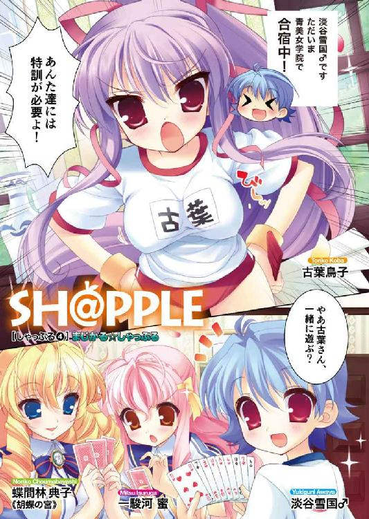
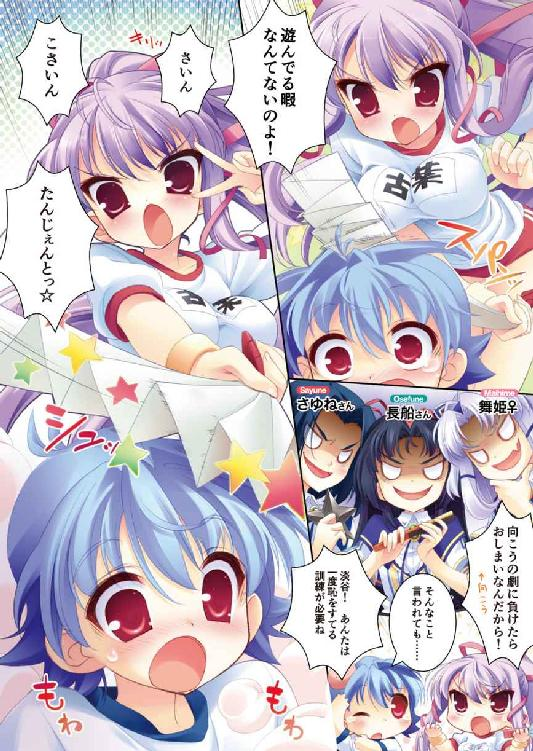
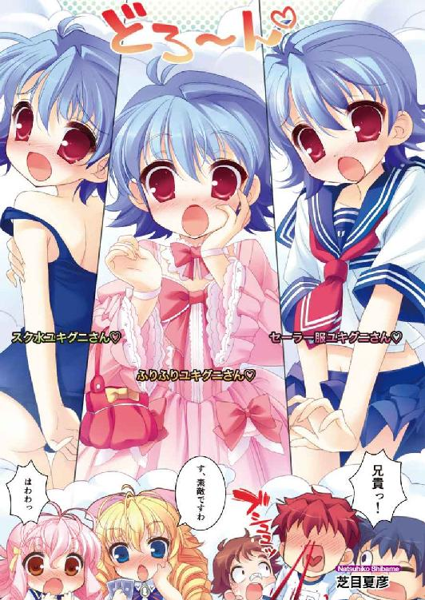
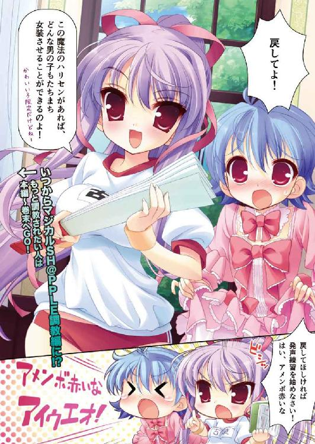
本作品の全部または一部を無断で複製、転載、配信、送信したり、ホームページ上に転載することを禁止します。また、本作品の内容を無断で改変、改ざん等を行うことも禁止します。
本作品購入時にご承諾いただいた規約により、有償・無償にかかわらず本作品を第三者に譲渡することはできません。
本作品を示すサムネイルなどのイメージ画像は、再ダウンロード時に予告なく変更される場合があります。
本作品は縦書きでレイアウトされています。
また、ご覧になるリーディングシステムにより、表示の差が認められることがあります。
口絵・本文イラスト よう太
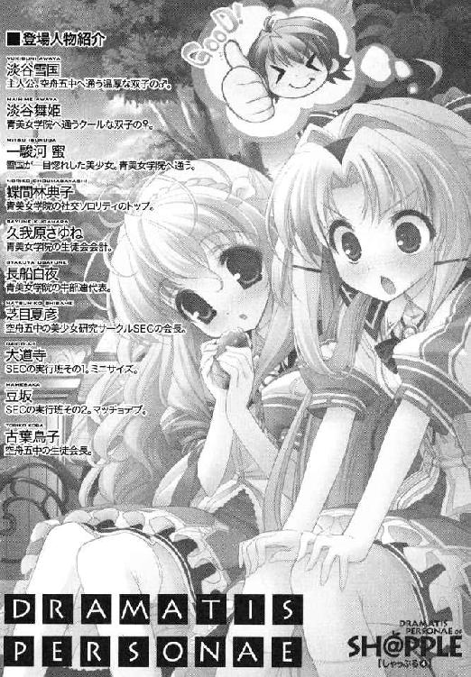
序章
これは一応、ぼくの話だ。
まわりがどっぷりとっぷり寝静まった頃、こそこそ隠れてノートブックを取り出して、愚にも付かない絵空事を書くのがぼくの趣味というか習慣だけど、たまには空想を離れて自分のことも呟いてみたくなるもんだ。
そりゃ天地がひっくりかえったって誰かに読み聞かせるような類の話じゃないけど（普段書くモノにどんだけの価値があるかってのとはまた別の話で）、引き出しの裏のノートやパソコンのハードディスクの片隅に、こんな夢みがちなポエムがひっそり眠っていたって悪くないと思う。ウチのパパンとママンが漁りにきたって、ぼくの机の中に学校の教材以外のものが入ってることを知ることからはじめなきゃならないだろうし。
今さらながら念を押しておくけど、ふだんのぼくは、こんな言葉では話さない。
話さないどころか、ぼくが私的なブンショーなるものを、こんな形で書き殴るような奴だと思っている人間の方が少ないだろう。
だからこそ、ここで与太話を披露する価値と余裕があるのかもしれない。
よってこれは噓の言葉で書き殴られる、本当の、ぼくの話だ。
小学生で出会って──。
近くで遠い場所で育って──。
ぼくの運命を、変えたひととの話だ。
第１章 見えないココロ
紀和子像。
中等科の学習棟と本館を挟む中庭に、一人のご婦人の像が建っている。
石の台座も含めれば、校舎の二階も超える大きさの銅像だ。それは華やかなりし鹿鳴館の時代を彷彿とさせる礼装で、ほつれ一つない夜会巻きでたおやかに微笑んでいる。彼女は、青美女学院の初代理事長なのだと聞いている。
緑豊かな中庭を行き交う制服の少女たちを、雨の日も風の日も変わらず、同じ目線で見守り続ける青美の心の象徴。まるでマリア像だな、とはじめて見た時は思ったものだ。時おり少女たちの方が像を見上げ、祈るように目を閉じたり手を合わせていたのもそう思った理由かもしれない。
夏季休暇に入った白い日差しの下でも、像の印象はあまり変わらなかった。
（生徒会室、か──）
雪国はにじむ汗をぬぐい、そこから少し目線をあげた。
像の後ろにある石造りの本館。その四階のつきあたりには、中等科の生徒会室があるのだ。舞姫のふりをして学校に通っていた時は、あの中が放課後の仕事場所だった。
中央には大きな作業用のテーブルが置いてあり、執行部員の生徒がそこで各自の作業を行っていた。生徒会長の席だけ、別の窓際に用意されていて、座る椅子は革張りの非常に豪華なものだったから、社長椅子、などと内心呼んでいたものだ。
「舞姫さま！ 待ってください！」
記憶そのままの明るい声に振り返るが、声をかけられたのは自分ではない。執行部員の山吹都が、姉の舞姫に飛びついて笑っていた。
カツラを被りスカートを履いて青美の会長をしていたはずの自分は、そこであっという間に現実へ引き戻されるのだ。
校舎も紀和子像も変わらずそこにあるけど、雪国たちはひどく変わってしまっているのかもしれない。
男子の制服。そっけない開襟シャツに、黒のスラックスを履いた両足で地面に立ち、雪国は今ここにいる。かわりに姉の舞姫が、少し前まで雪国のいた位置に戻っていた。
「もう練習はじまりますよ！ みんな待ってるんですから！」
「くっつかなくてもわかるよ山吹さん──」
──彼女かもしれません。雪国さま。
ふと頭をよぎった久我原さゆねの声に、雪国は唇をかみしめるのだ。
セミが鳴いている。じりじりじりじり。
誰もが疑わしいという状況が、こんなに不安になるとは思わなかった。
＊＊＊
稽古場の中の緊張は、限界まで引き絞られた弓のようだった。
劇の流れはすでに終盤。後はラストのやりとりを残すのみ。誰もが疲れたと思いながらも、粛々とストーリーを進行させていく。
『──ミスタ・ホームズ。わたくしが、誰だかおわかりに？』
優雅な美貌を彩る巻き毛を後ろで束ね、額には汗が浮く。そんな胡蝶の宮こと蝶間林典子の問いかけに、しかし雪国は、すぐにはうなずかない。かわりにそっと、彼女に向かって両手を広げた。
『──はは。そうか。なるほど！ これこそが君の罪だったのか。すべてわかった。謎もすべて解き明かされた。今こそ私は宣言しよう。その罪もすべて受け止めると』
がんばれというまわりの無言の視線が、びりびりと背中全体に突き刺さる感じだ。
『ミスタ・ホームズ......！』
『おいで、私の怪盗──』
さしのべる右手に、おずおずと胡蝶の宮が応える。悪くない。ここはついに女性であると正体を打ち明けた怪盗ルパンと、それを受け止めることにした名探偵ホームズの逢瀬なのだ。互いの指と指が触れあう瞬間、雪国は彼女の肩を強く引き寄せた。
（ここは、照れない......！）
ぎゅっとぎゅっと。ぎゅぎゅーっと。
ほのかな薔薇の香水が鼻腔をくすぐり、ブラウス越しの弾力ある二つの胸が、今にも弾けて雪国の胃のあたりを押し返そうとするのを感じてしまうが、注意され続けた通りにじっと保持。
『あ、ん......』
やめて。色っぽい声だしてくれるなお願いだから。
そのまま必死に息を止め、密着した姿勢を崩さずにいると、『語り手のワトソン』こと古葉鳥子が、静かに締めの言葉を喋りだすのだ。
『──こうして、クロディーヌ嬢の冒険と使命の日々は終わったのだ。最後に名探偵の心を盗むという、前代未聞の大仕事をしてのけたのは、後にも先にも彼女ひとりだったろう──』
想像上の幕が下りていく。
十秒。二十秒。たっぷりの余韻を残して、ぎりぎりまで待って待って待ち続けて。
「はいっ、終了！」
「おわったああああ......」
素に戻った鳥子のかけ声に、雪国たちはどっとへたりこむのだ。
本当に、死にそう。
緊張しすぎて口から心臓が飛び出そうだ。
手を離したばかりの胡蝶の宮が、あらためて握手を求めてきた。うっとり紅潮した頰が、なんとも言えず艶っぽい。雪国はもちろん、笑顔でそれに応えてうなずいた。
「ついにやりましたわね、雪国さん！」
「胡蝶の宮......」
感動の一瞬だった。
乳が？ ぎゅーが？ いいやそれよりもっとすごいこと。
そうなのだ。ついに。ついに自分は──。
「ついに一度も嚙まずにエンディング、であるな！」
「芝目くん！」
振り返れば、芝目たちＳＥＣまで取り囲んでくれていた。
空舟エンジョイ委員会は、雪国が通う空舟五中に集う美少女応援団だ。今の今まで相手役を務めてくれた胡蝶の宮は、青美女学院の社交ソロリティ『ローズロワイヤル』のトップを自負するお嬢様である。これに五中生徒会メンバーを加えた混成軍団で、雪国たちは合宿を続けている。ここ青美女学院を拠点に、すべては市の夏祭り、人力リバーフェスティバルのステージで劇を披露するためだった。
初日に練習をはじめた時は、まともな劇になるかどうかさえわからなかった。原因は主に、セリフ三つで吹き出してしまう雪国の演技ベタのせいではあるのだが。
それでもついに本日の成果である。雪国は頭をかいた。
「ち、ちょっとは上達......してるのかな？」
思わず照れ笑いをしてしまう。
「うむ。恥はかかんですむだろ」
「素晴らしいと思いますわ！」
「でももちろん！ 内容の方はまだまだまだまだ練習してもらうけどね淡谷！」
輪の向こうから、古葉鳥子に釘を刺されてしまった。
──了解です、と言うしかない。
彼女はいつも手厳しい。というより、几帳面なのだろうか。常にきちんと着こなした五中の夏服や、跳ねるポニーテールの毛先から、気の強さがにじみ出ている感じだ。
「そりゃね......あんたの努力は、まあ、認めてやらなくもないけど」
「ほんと？ ありがとう古葉さん」
単純に褒められたと笑う雪国だが、鳥子は一人で端整な顔を赤くしていた。
「だから、もっと練習してって意味だから！ 他意とかぜんぜんないから！」
「まったく理想が高いな、古葉会長は」
「うん。でも中身乙女ちっくだから不思議だよね」
鳥子がびっくりしたように振り返る。
「......は？ 淡谷。あんた、今、なんて言った？」
「？ 古葉さんが乙女ちっくって。こんな甘々の恥ずかしいセリフの劇とか書いちゃうのにさ──」
すぱあん。
なぜか専用ハリセンが鋭い踏み込みと同時にジャストミートＨＩＴ！
「いい淡谷？ その耳かっぽじってよく聞いて。書くものと人間性は別。別なの。一緒にしないで一緒にしないで一緒にしないで一緒にしないで一緒にしないで」
「そ、そんながんばって否定しなくても乙女ちっくのどこが悪──」
「違うから違うから。わかる？ わかった？ 違うから違うから違うから違うから違うから違うからっ」
なんの逆鱗に触れてしまったのだろう。
「ファラデー定数とは！」
「電子１モルの電荷を示す定数。素電荷（ｑ）にアボガドロ定数（）を掛けたものに等しくなるから乙女」
「む、か、つ、くっ！」
「そうですよ、弟さん。最後のラブシーン、あれなんですか」
雪国はどきりとした。
蜜まで腰に手をあてているのだ。
「後ろで見てたらもう、はらはらしちゃうったらなかったです。恥ずかしいとか言ってないでもっとロマンチックにやってくださいよロマンチックに」
右手には大きな紙袋。そのまま「こうったらこうです！」と、身振り手振りで演技指導をしてくれる。和製リチャード・ギア養成所といった案配だ。
これでも本日の彼女は、捻挫した足の経過を診てもらうため、ひとり校外の病院へ行っていたはずなのだ。
「もう具合の方はよろしいの？ 蜜」
「ええお姉様！ ほら、これ買ってきたんでみなさんで食べてください。蜜のお土産です」
相手役がわりに抱きしめていた紙袋を、蜜は雪国たちに差し出してくる。
へこんだ袋のロゴを一目見て、取り乱していた鳥子が顔色を変えた。ぽろりと手からハリセンが落ちる。
「どうされました？」
「あ、あの、いいの？ ここのお店、すっごい高いって雑誌に──」
「そうなんですか？」
「......あ、そう。ど、どうも......ありがとう、ございます──」
消え入るように。
さすが青美のお嬢様だわ──そう言わんばかりの複雑な顔で、袋を受け取ってしまう古葉鳥子。提供者の蜜はにこにこ笑っている。だがしかし待ってくれお二人さん。
「蜜、ここのお菓子大好きなんです！」
一駿河さん。無理がいろいろ痛々しいよ──。
筋金入りの貧乏舌のはずなのだ。愛するものはジャンクフードのはずなのだ。
雪国としてはもう、ケガをさせた足が良くなっているなら言うことはないのだけれど──。
「せっかくですし、このまま休憩してお茶にいたしましょうか」
「はいお姉様。蜜、準備しますね！」
言ってかいがいしくきびすを返したりしている。猫かぶり。
稽古用に借りた小ホールの片隅には、いつでもティーブレイクができるよう、ティーセットやお湯の入ったポットがスタンバイされていた。蜜が土産に持ってきた空舟グランドホテルの名物クッキーは大好評のようだが、当の蜜は一口も食べていないのである。不憫だ。
雪国が一口たべてみても、口当たりはさっくりと軽く、そのくせビターチョコレートとオレンジピールの風味がほんのり香って幸せな気分になる。遠慮というより、たぶん本気で食べたくないのだろう。味覚が周りと違いすぎて。
かわいそうな一駿河さん。あとでこっそりビスコとうまい棒でも差し入れてあげようと心に決める。
校内合宿も後半戦にさしかかり、メンバーの仲もそれなりに近づいてきている気がする。めいめい長椅子や床に座って喋る顔ぶれもバラエティに富んでいて、学校が違うから、学年が違うからという壁は、練習とともに薄くなっているようだ。今も鳥子と胡蝶の宮が難しい顔でこの先の打ち合わせをしていて、蜜は五中の男子にもお茶を注ぎ足している。
そんな時だった。
「──大道寺さま！」
「あ、亜莉早ちゃん！」
なぜかＳＥＣ一の小柄な策士こと大道寺が、一人だけお茶の輪から離れてロワイヤルメンバーの女の子と話している。
少女は平均から見れば背も高く大柄だが、目も鼻も丸く、まとう雰囲気はどこか可愛らしかった。たしか主役のルパンを支えるメイド役をやっている女の子のはずだ。大道寺が大げさな身振りで喋るたび、ころころと笑って喜んでいる。
「......あ、ありさちゃんっていったい......？」
「まああ。あの子ったら、ずいぶんはしゃいでしまって」
そう。まるで恋する乙女のように愛らしいのだ──。
意味ありげに微笑んでいる胡蝶の宮と、目の前の信じられない光景を見比べて、雪国は軽くはないめまいを覚えた。
同じく衝撃を受けたらしい芝目も、寄ってきて血の気をなくしている。思わず一緒になって豆坂の巨漢をつかまえ、壁際で尋問をはじめてしまった。
「ままま豆坂くん。あれは、あれはいったい何事──」
「か、籠崎亜莉早ちゃん。青美女学院二年、さくら組......」
「そんなことはとっくに知っているぞ豆坂構成員！」
知っているのかさすが芝目。ＳＥＣ会長。
「我々が知りたいのはだな、大道寺構成員と、なぜにああも仲がおよろしいかだ」
「そうそうそうそう」
豆坂は、困ったように眉を寄せた。
「野球拳......？」
「そんなのが決め手になったのか！」
「あとは、自然に......」
自然。
なすがまま。
レッセ・フェール。
「だ、大自然か......」
「それはまた説得力があるよーな......」
雪国たちは、絶句しながら大道寺たちを見つめてしまうのだ。
なぜだろう。目頭が熱い。
「......僕、自分でもアレだと思うんだけど、大道寺くんにだけは抜かされないとか根拠なく思ってたんだよね......」
「言うな。俺もだ。銀河系が爆発しようと、大道寺構成員だけは魔法使いの卵で居続けると......」
「女の子、可愛いね......」
「ちょっとでかいけどな......」
「大道寺くんが小さいからちょうどいいんだよきっと......」
「か、会長たちも。元気出してがんばる！」
豆坂が、床にへたりこんで絶望する雪国たちを叱咤した。
がんばるとな？
雪国は、重たい頭を持ち上げた。
こちらの思い人たる一駿河蜜は──今も食べられない高級クッキーを弄んだまま、お姉様たちの話に相づちを打っている。やっぱり、可愛い。
（可愛いんだよなあ）
たった一人で劇の居残りにつきあってくれたり、合宿中の蜜は特に優しい気がした。ニセ舞姫でいる時には見られなかった満面の笑みだって見られた。感動だったのだ。
あがる打ち上げ花火と、その下の蜜と。あれが視界に入った瞬間の、まぶしい光が弾けるような感覚は忘れられない。願わくばこれがただのうぬぼれや勘違いではなく、それなりのご縁につながってくれれば嬉しいなとは思っているのだが──。
「ふっ。簡単に言ってくれるなこんちくしょうが」
今度は芝目である。
まるでこちらの心を代弁するかのようなうめき声に隣を見れば、雪国以上にやさぐれた顔で天井を見上げていた。
個人的には微妙なことだが、芝目のがんばる先と言えば姉というか舞姫だろう。
いつもの空回りにしては、妙に様子が深刻のような気もした。
だが声をかけようとしたその瞬間、雪国はものすごいものを目撃してしまったのだ。
「くがっ！」
「は？ くが？」
「くが────────っ！」
芝目がぽかんとするのもかまわずに、雪国はすばやく立ち上がって走った。
行き先は外だ。
大理石の廊下をダッシュして表へ。ホールの窓から見たのとそっくり同じ場所に立って、まわりに広がる木々を見上げるが、肝心の久我原さゆねはどこにもいなかった。
（たしかに枝にぶら下がってたのに！）
シュールすぎて夢でも見たのかと思ったほどだ。
「雪国さま」
「ひいいっ」
鳥肌たててしまったよ。
「......足音ぐらいさせようよ......」
「申し訳ございません。習慣なのです」
すぐ後ろに久我原さゆねが立っていたのだ。
シノビの少女は、ごく生真面目に答えてくる。
顎のラインで切りそろえた黒髪が、木陰の風に揺れていた。直前まで木の上でブロックサインを送っていた雰囲気など微塵もないのがまた怖い。
「生徒会所属のワタクシが、ソロリティに気づかれず接触を行おうと思えば、おのずと手段は限られてくるのです」
「まあわかるけどさ......」
さゆねは生徒会の会計なのだ。
「それで、用って？」
「こちらをお返ししようかと」
言って彼女が渡してきたのは、ビニール袋に入った写真だった。雪国は、それを見たとたん、一気に胃が重くなった気がした。
（私を、忘れないで、か──）
まだ夏休みに入る前、ニセ舞姫として青美に通う雪国の女装写真が、青美日報の芸能・社交欄に掲載された。これ以上の秘密がばれるのを恐れた雪国たちは、入れ替わりを中止して、お互いの学校に戻って様子を見ることにしたのだ。そんな新聞に掲載されていたスクープ写真の、まさしく現像された現物がこれである。
こちらの日々の奮闘をあざわらうかのように、カフェテリアの『雪国』の椅子の下に落としてあった女装写真の意味はわからない。ただ、写真の上に書き殴られた赤い手書きの文字に、血の気が引いたのだけは覚えている。
はじめに見かけた時も、まず真っ先に久我原さゆねを呼び出して、落とした犯人を捜してもらったのだ。それでも人が多かった上に時間もたちすぎていて、手がかりらしいものは見あたらなかった。
「メッセージの方は、普通の文房具で書かれたものではなかったですね。口紅かなにかだと思います」
「そっか......」
生々しいことには変わりない。
情けない顔になる雪国の心を見透かすように、さゆねが重ねて言った。
「確実なことはまだわかりませんが──気をつけていて欲しい人物は若干名おります」
「気をつける......？」
「犯行の動機について考えてみたのです。こうも何度も脅しをかけてくる、動機や理由を持つ人間。中部連以外でもこれだけおります」
ブラウスの裾の下から、すっと折りたたんだ紙片を取り出してくる。一瞬のぞいたシュミーズや、熱の気配が残る紙の感触にどきりとしている暇もなかった。
目に入った最初の候補ときたら。
「や、山吹さんって、あの山吹都さん!?」
「ええ」
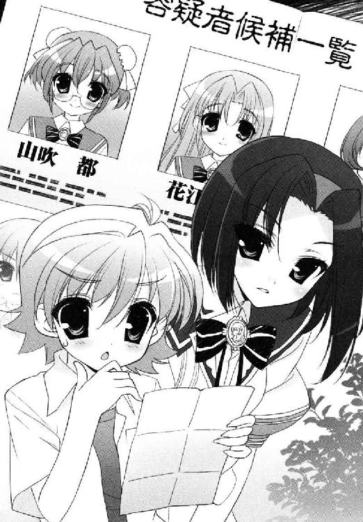
一番上の容疑者だ。生徒会の執行部員。いつもにこにこ人なつっこい？
「彼女は一年の時に、舞姫さまに告白してふられておりますから。あきらめてはいるようですが、当時はかなり熱心でしたし、遺恨がないとは言い切れません」
「そんな──」
「普段のスキンシップで気づいたのかもしれません。これを機会に交際を迫るつもりかもしれませんね」
知らないよ。聞いたことがない。
あの淡々とした舞姫にそんな過去があったことも初耳だし、無邪気に慕ってくれると思っていた山吹さんが、一度ふられた後だというのも衝撃だった。
「人気があるというのは、同じぐらいにトラブルの種も抱えているということですよ、雪国さま」
「じ、女子校だってのに......」
「女子だけだから安全、ですか？」
皮肉めいた響き。
雪国は言い返せなかった。
候補の二番目は、副会長の花江みずきだった。
「これもあの......ほほほほ惚れたはれたとかの話なの？」
「いえ。どちらかというと敵愾心かもしれません。生徒会選挙で前会長のご推薦を、舞姫さまでなく花江さまが受けるという話もあったのです」
「そんなまさか。だって──あの静かな人が──」
「本当に雪国さまは、お幸せな学校生活を送っていらっしゃるのですね──」
「うわああ──」
まるで知らないことが幸せとばかりに目を伏せる久我原さゆねが怖い。ものすごく続きを聞くのが怖い。
あくまで動く理由がありそうな人間を挙げているにすぎないと言われても、こちらは知っている人間関係の裏をぶちまけられて泣きたい気分だ。
「なんだよもう......久我原さんまで書いてあるじゃないか......」
「書かないのも義理に欠けるかと思いまして」
「は？ 義理って」
「動機はなにが良いと思いますか？」
笑えない冗談だからやめてほしい。
「まあ......そういうお優しい雪国さまですから、学校交換などという荒業が務まっているのでしょうが......」
「舞ちゃんはなんて？」
「お互い気をつけようね、との仰せです」
同じ学院内で合宿をしているはずの姉は、生徒会所属のためそう簡単には近づけない。
リストの方は、まだまだ下までずらりと名前が並んでいる。
「練習とか、大変なの？」
「うちとそちらは、スタンスが違いますから」
「そうだよね」
苦笑とため息がこぼれる。
みんな仲良く手を取り合って──そんな理想はあっても、すべてうまくはいかないからこんなことになっているのだ。
「リストの絞り込みは、引き続きワタクシが責任をもって進めます。どうそ身辺にはお気をつけください。どこで誰が見ているかわかりません」
「うん。僕からも頼むよ。舞ちゃんのこと、よろしくね、久我原さん」
「かしこまりました」
ほんの少しだけ、その声に温かみが宿った気がした。
そのままシノビの少女は一礼し、林の間を消えていった。来た時と同じ、音らしい音がしない退場だった。
雪国は手元に残った候補者リストを見つめ、もう一度だけ息をつく。はあ──。
＊＊＊
ちんとんしゃん。大小の鼓と笛の音が鳴り響く中、舞踊部の生徒が舞い踊る。
いわゆる舞姫たち青美女学院中等科生徒会が、中等科部活連合と一緒に作っている創作劇は、和風ミュージカルの体裁を取っているのだ。おかげで今も舞台の上で幅をきかせているのは、舞を踊る舞踊部の生徒と、伴奏の和楽器を奏る音楽部の生徒である。
まだ細かい衣装や小道具はできあがっていないが、そろいの着物や扇と一緒に踊れば、それは綺麗な鶴たちの舞になるだろうと舞姫は思う。
「......山吹さん。手が止まってらしてよ」
副会長の花江みずきさんが、静かな声で諭している。
ぷうっ、と山吹都が頰を膨らませる。
「だって。なんでわたしたちがこんな裏方作業......」
「山吹さん」
ぷうっ、ぷうっと。そういうすね方が、似合うとわかってやっているのかもしれない。
賑やかな舞台の上と、客席の隅で輪になる自分たちを見比べて。任された針仕事がみじめでたまらないとばかりに、広がるスカートの上へ縫いかけの布を放り出している。
「まいにちまいにち糸と針と金槌ばっかり持って、これじゃ生徒会主導の名が泣きますっ」
「山吹さん......」
しかし舞姫たち生徒会のメンバーが、裏方やサポート仕事に回らざるをえないのは、当然と言えば当然の話だった。
今回一緒に組んでいる中等科部活連合は、校内の部で作る労働組合のような組織である。どの部もそれぞれ極めようとしている分野に誇りを持っているし、組んでなにかをするなら『少数精鋭・実力主義で』と注文を付けてきたのだ。
特技らしい特技がない舞姫たちとしては、簡単な端役をこなしつつ、下請けのサポートに精を出すという地位に落ち着いてしまったのである。
「花江副会長。舞姫さまも。いいんですかこんなので！」
「ちょんまげ」
「......は？ ちょんま？ 舞姫さま？」
「ほら見て。我ながらうまくできたと思うんだけど」
舞姫が言ってわざわざ取り上げたのは、ここ数日制作にかかりっきりだった小道具のカツラである。いわゆるちょんまげ。生え際のほつれも、髷の曲がり具合も完璧と自負しているのだ。
「阪東妻三郎の頭に載せたい......」
怒る山吹都も諭す花江みずきも啞然としていたが、つまりなにが言いたいかといえば。
「なんでもさ、楽しんじゃった方がお得だと思うんだよね」
まだぽかんとしている執行部員を見回して、舞姫はあらためてカツラの側頭部を叩いた。
「あ、あの、舞姫さまどちらへ──」
「ちょっとトイレ」
周りが止めるのも聞かず、そのまま表のロビーへ顔を出した。
「──ね、思わない？ 久我原」
「よくわかりましたね、舞姫さま」
「なんとなく？」
右を向けば人の声。ああやはりというか。こちらが思った通りの立ち位置に、久我原さゆねが立っていた。そろそろ戻ってくるような気がしたのだ。
遊ぶ時には全力で──このあたりはたぶん、例の困った少年たちに学んでしまったことなのかもしれない。
「ユキグニ、どうしてた？」
「お元気でしたが、さすがに動揺してらっしゃいましたね」
「ま、しょーがない」
ことは進退にかかわる。
新聞部のスクープだけで終わるかと思いきや、今度は女装写真の現物が、手書きのメッセージと一緒に落とされていたのだ。しかも今回伝えた内容は、雪国にとって初耳のことが多いはず。
「その割には、舞姫さまはたいへん落ち着いてらっしゃると思います」
うん。そうかもしれない。
「......ねえ。久我原。これ言っちゃってもいい？」
「なんです？」
「しょーじきボクさ、向こうが焦れて行動に出てくれるのはありがたいとか思ってるんだよね」
「ありがたい？」
「幽霊みたいなもんだよ。Ｘ氏が前みたいに何も言わないでじっとだけしてられたら、ボクらも対応しようがない。でも向こうはなにか言いたいことがあるみたいじゃない。わざわざ写真を現像し直して、『自分を忘れるな』ってメッセージまで残してきた」
つまり次は触れることも狙えるということだ。
相手が誰でも。表向きは普通の顔をして、普段と変わらぬ態度で接してきても。いつかはきっと。
「まあまあ、幽霊がいかがいたしましたか会長さま？」
新しい声がしたのでぎょっとした。
なんと金の扇を口許にあて、長船白夜がこちらをのぞきこんでいたのだ。
「夏は蛍と怪談が風物詩でございますものね。ふふふ。まったく会長さまは、私の心がお読みになれるのかしら。不思議ふしぎ不思議ですわ」
演劇部の敏腕部長にして、中部連こと中等科部活連合の代表。それが彼女の肩書きだ。
いつも扇を手放さず、古風でたおやかな美少女に見せかけて、その中身はかなり苛烈でもあった。
しかし今の会話、いったいどこまで聞かれていた──？
「不思議って、なにが......？」
「あら、ではまったくの偶然でございますか？ ますます深い縁を感じますわ、会長さま」
さっぱり意味がわからない。こんなにご機嫌がよろしい意味も。
「詳細はのちほど申し上げますわね。でもためになることですし、きっと受け入れてくださると信じておりますわ。私と会長さまの仲でございますもの」
「わかんないって長船さん」
「さあ皆々様、午後もがんばってお稽古いたしましょう！」
ちょっと待ってほしい。
白夜は高らかに謳い上げると、そのまま部員たちの待つホールの中へと突き進んでいった。重いドアを押し開き、とたんに響く「よろしくお願いします！」の大合唱に返事をしている。後に残された舞姫たちは、眉をひそめるしかない。
「......なに、考えてると思う？」
「ワタクシに聞かれましても」
なんだろう、この不吉爆発五秒前な気分は。
＊＊＊
久我原さゆねに渡された容疑者リストは、裏を返せば舞姫が清算しきれなかった人間関係リストとも言えるのだろう。
雪国は、椅子の背もたれをまたいだ格好のまま、リストの名前を読み直してみた。
それは初等科入学から続く、九年間の記録だ。やんちゃなケンカをしたクラスメイト。かつて告白してきた下級生。下に行けばソロリティの人間や教師まで候補に上っていたのには苦笑するしかなかった。本当に若光の君様は大変だ。
（候補一八、籠崎亜莉早）
こちらは今から一年ほど前、募集していた執行部の選考に漏れ、大泣きに泣かせてしまったのがリスト入りの理由。現在は家柄の良さを活かして社交ソロリティ『ローズロワイヤル』で活動中とのこと──。
（もうなんでもありだな）
そうインパクトのある経歴でもないので読み飛ばそうとしたが、名前がそれを引き留めた。
籠崎亜莉早さんと言えば。大道寺と仲がいい女の子ではないか。
雪国は顔を上げた。
「──さあ、言え！ 言ってしまえ大道寺構成員！ いったいどんな手練手管を使ったのだ」
「やー、べつにそんな高等テクなんてどこにもないっすよ。ふつーにふつーにふつーに」
「噓をつけ！」
「噓じゃないっすよ。ほんとっすよ。ただちょっとほら、話が合って可愛いなーって思ったら向こうも同じ感じだった、みたいな？ まあはっきり確かめたわけじゃないすけど......」
「すでに暗黙の了解というやつか」
「あははははは。いやもうつまらん話なんかするもんじゃないすよ！ 終わりましょうこんなの。スンマセンスンマセン」
顔が真っ赤だ。
現在小ホールの中にいるのは、雪国とＳＥＣ、そして五中の生徒会に所属している一年と二年の男子のみだ。他の女子は別室に移ってしまっていて、衣装作りのための採寸をしている。
雪国たちも互いのサイズを計らなければならないのだが、人数も少ないのであっという間に終わってしまった。かくして残り時間を練習にあてる気概もない連中で、大道寺を取り囲む会がはじまっているようだ。
「......でも、ほんとすごいですよ先輩。青美の、しかもローズロワイヤルなんて、誰でも彼女にできるもんじゃないですよね。うらやましいです。ぼくなんて絶対むりだ......」
「そんな気弱なこと言うなよ加藤ぉ！」
「すいませんぼく佐藤です」
「細かいこと言うなっつの！」
照れ隠しか、五中の書記二年くんをざっくばらんに張り飛ばしているが、その顔は相変わらず溶けたアイスのような形相なのだ。
うれしくてたまらないのだろう。はじめてできた『カノジョっぽい子』というやつが。
「もうね。ちょっとコイツにもひとこと言ってくださいっすよ会長ー」
「うむ。しかと任されたぞ大道寺構成員」
言われた芝目は深々とうなずき、豆坂とともに立ち上がって腰に手をあてた。
「良いかね、サトウ君！」
「は、はい！ なんでしょう！」
「人は非モテに生まれるのではない。非モテに成るのだ！」
「ひ、非モテに、成る！」
「そうとも成り上がってしまうのだ！ 社会科見学のバスで吐いた！ 対抗リレーのバトンを落とした！ 積み重ねてしまった地味駄目オーラの不良債権を払拭することは難しいが、生まれながらの輝きは変わらずキミの胸にある！ そして天使たちはその輝きにこそ心惹かれると信じるところからはじめるのだ！」
書記二年くんの目が、驚愕に見開かれる。そんな都合のいいことをとは決して言わない。
「まずは己に向かって強く念じるのだ。非モテがなんだ、魔法使いの卵がなんだ、全てみな関係NOTHING! 信じよ、されば道は開かれん！ ある日突然棚ボタのように女の子と仲良くなれることとて現実にはあるのだ。目の前のこの大道寺構成員のように！」
「先輩！ ぼく目がさめました！」
「さあ唱えよ！ 一心不乱に唱えるのだ！ 非モテの闇に現れた救世主。我々の希望の星の名を！」
「はい！」
ダイ・ドー・ジ！ ダイ・ドー・ジ！
上がる大道寺コール。芝目と豆坂が、完全に持ち上げ役に回ってしまっている。嫉妬や対抗心を通り越して『俺もあやかりたい』モードに入ってしまっている。さりげなく失礼なことを言われている大道寺も、幸せオーラにおぼれて気づいていないようだ。
「なんかちょっと......うまくいきすぎてるとか思わない？」
思わずつぶやいてしまったら。
「──ほう？ 今、なんと申したかね淡谷弟？」
耳ざとく聞きつけられてしまった。
いまや芝目は腕を組み、やれやれとばかりに苦笑してくるのだ。
「い、いや僕は別にね......」
しかもそんな彼の後ろには、すっかり洗脳されきった豆坂や後輩たちまでそろっている。
雪国は、思わず一歩さがった。
「......先輩。気持ちはわかりますけどね......」「ひがむよくない」「そんなことじゃ御利益が逃げますよ？」「......いくら一駿河嬢とうまく行かぬからとて......」「そうですよ先輩。素直に行きましょうよ」「い、一緒に拝む！」
くそ。なんだこれは。これでは『空舟エンジョイ委員会』ならぬ『大道寺にあやかり隊』ではないか。
ひるむには十分な数と勢いだった。
「「「ダイ・ドー・ジ！ ダイ・ドー・ジ！ ダイ・ドー・ジ！」」」
「僕、測定結果届けに行ってくるよ！」
「「「ダイ・ドー・ジ！ ダイ・ドー・ジ！ ダイ・ドー・ジ！」」」
ついてくるなよ！
怪しい呪文を唱えて入隊をせまる連中から、雪国は脱兎のごとく逃げだした。
＊＊＊
携帯の画面を開くと、『先生』からメールが入っていた。
題名 やっほ～(^_^)
おっはよー、今おきたのだっ。遅いって言ったらダメだからね！！！
鳥ちゃんは元気？ 劇の練習は進んでるかナ？ 例のアレもちゃんと書かなきゃダメだぞ～
鳥ちゃんがコワイ目にあってないか、アタシはとてもしんぱいです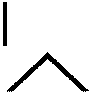 だいじょーぶだよね？
鳥ちゃんはとても良いハナシを書く子なんだから、リアルでももっと可愛さアピールしちゃってラブくしちゃってもおっけーなんだよ～☆
それじゃ、ばいばいねっ(^^)/
（先生......）
とても七十過ぎのご老人とは思えない文面だ。さすがは淡谷猶彦先生。日々文体の研究は怠らないらしい。
いそいそと返事を打ってみる。
題名 え～ん
鳥子です～。
せんせーおはようございます。心配してくれてすっごいすっごいうれしーです(^o^)
でもつらいですよもー、泣きそう！
ここってすっごいお嬢様学校なんですもん。あたし一人で浮いちゃってます
男子はぜんぜん頼りになんないし。も～わかってますけどねそれくらいっ、さいしょっから！！！
そういうわけで、鳥子ははじめからおわりまで鬼モードで、カワイイ子にはぜんぜんなれません。もう終わってます。わかってます(^_^;
でもでも、そのぶん出し物はがんばりますよ。せんせーに見に来てほしいですし。
アレのほうは ......あはは。もーちょっとだけ考えさせてください。
それではさよーなら！！！
送信ボタンを押す間、少しだけ恥ずかしかった。
（......メールってどうしてこうはしゃいだ感じになっちゃうかな）
自分のようで自分でない。でも間違っているのとも違うような。
携帯を閉じ、ちらりと見渡す教室の中は、ブラウスを脱いだ少女であふれていた。さきほどからにぎやかな歓声とも悲鳴ともつかない声をあげながら、互いの胸囲や腕の長さを測りあっている。
「ふふふ。さあ胡蝶の宮、覚悟はよろしいですか？」
「そんなに期待しなくてもよろしいじゃございませんの」
「しますよ。いたしますとも」
「お手柔らかに願いますわ」
「ではでは、失礼いたします！」
けだるげに両手を持ち上げる少女の背中から、白い巻き尺がからみつく。採寸係が『仕留めよう』としている胸回りは、どうやらかなりの大物にして一級品のようだった。
「春の身体測定の結果、わたくし存じ上げてるんですよね」
「プライバシーの侵害ですわ......」
「ああほら喋らないでください。揺れるからもう......測り辛いです」
もてあますように上下し震えるバストの突端を慎重に探って、そこから数字を記録する採寸係。引き抜いた巻き尺の長さは、他の女生徒をはるかに抜いていた。かと言ってウエストその他がだぶついているかと言われれば決してそうではなく、起伏に富んだ体のラインは見事なものだ。
見せられた記録用紙を前にして、少女のまなざしが険しくなった。
「......また服と下着を新調しなければなりませんわね」
「ええ、きつそうですもの」
育ちすぎたらしい。主に『胸・腰・尻』の『胸・尻』の部分が一段と。
鳥子としてもそう思う。用紙を睨んで前かがみの胸元は、くっきり二つの丘がぶつかる谷間ができているけれど、自然というには盛り上がりすぎていて少々苦しそうだ。
でもべつにいいじゃないあなたたち。新しくしたってお嬢様なんだから──。
同時に思ってしまう自分が少し嫌だった。
いわゆるタンクトップでもキャミソールでもなく、シルクジョーゼットのシュミーズを制服の下に着こむ文化というものを、鳥子は生まれてこの方見たことがない。ハンカチはレース。ティッシュ入れもレース。なにここ、日本？ 戦前？ そんな気分だ。
彼女たちは青美女学院の生徒で、『ローズロワイヤル』という特別なグループに入っているらしい。
鳥子は淡谷雪国の紹介でこの学校へやって来た。
（淡谷め──）
ただただ地味でおとなしい印象だった少年が、『変身』したのは今年の春だ。
そいつの紹介で青美女学院にやって来ても、その自然体としか言いようのない女タラシぶりには磨きがかかっていると思う。
中三離れしたプロポーションを披露している胡蝶の宮（なんとこれがあだ名なのだ！）は、たいへん鳥子の想像力をかきたててくれる美少女ぶりだが、雪国に夢中だ。
もうなんなのよあんたは。わざわざ見せつけに来たのかコンチクショウと、鳥子は内心問い詰めたくてたまらなかったのだ。
でも。何より聞きたくてたまらないのは──。
「あの、古葉会長」
「きゃっ」
思わず声を出してしまった。
──一駿河、蜜だ。
気づいた瞬間、みるみる喉が渇いて、どうしようもなく顔がこわばって、そういう時の自分の目つきがとんでもなく悪いことを友人に指摘されたこともある。だけど。
「記録する相手がいらっしゃらないなら、蜜が測りましょうか？」
「あ、でも、適当に......やるから」
「だめですよ、遠慮なんて。すぐすみますからやらせてください」
どう見ても睨んでいるはずなのに、『一駿河さん』はかいがいしく巻き尺を取り出して微笑んでくる。綺麗なシルクジョーゼットのシュミーズが主流の教室の中で、ひとりユニクロのキャミソールと通販のブラを身につけている鳥子を、おかしいとも言わず巻き尺で計ってくれる。
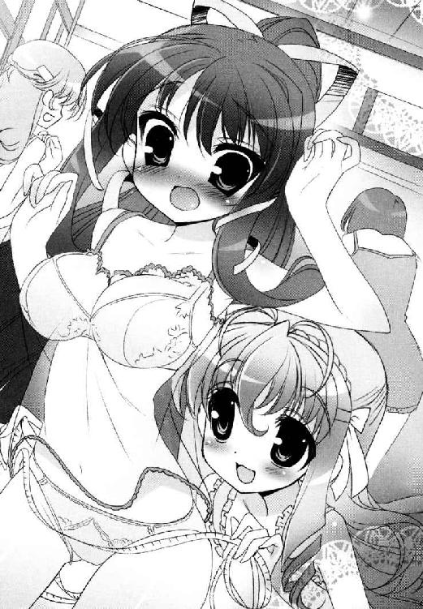
（合宿の初日、淡谷となにしてたの？）
本当は、これが一番聞いてみたいこと。
体調を崩したばかりで本調子ではないと聞くが、裏方のアシスタントとして本当によく働いている。あの日の夜も、ずっと一緒にあいつといた──。
巻き尺の目盛りを読むため、蜜の大きな瞳が伏し目がちになる。そうするとけむるように長い睫毛が透けて金茶色に光って、手足の華奢さもふくめてショーケースの中のお人形のようだと思った。そんな可愛い彼女を遠巻きに見つめる淡谷雪国の顔が、一瞬せつなく歪むのも、鳥子はなんとなく感づいてしまったのだ。
（見てきたもの）
他のどんな女の子と仲良くなってキスをしていたりしても。
この子は違うかもしれない。『特別』かもしれない。
聞きたくて、聞くのが怖くて。
「......いいな」
「はあ!?」
またヤンキーくさい声を出してしまった。
「あ、あの、ごめん。ひ、ひとりごとだから。関係、ないから──」
「あ、はい。ごめんなさい。蜜も独り言でした」
のばした巻き尺を戻しながら、やわらかそうな頰を赤くするのだ。
「......だって。とっても綺麗でプロポーションいいから、うらやましいなあって......」
とっさに言葉が出なかった。まさかそんな所を見られていたなんて。
「わかりません？ 古葉会長、うちのお姉様の次にお胸ありますよ。手足も長くてバランス良くて」
具体的な指摘までされて、鳥子はすっかり赤くなった。
「で、でも、キャミとかユニクロだし。ブラだって通販だし......」
「可愛いじゃないですか」
ぶつぶつ言い訳をするのがやめられなくて、たまらず脱いだばかりのブラウスを着ようと机へ手をのばした。その時だった。
「うわああああああ──────────────っ」
唐突にドアが開いた。
淡谷雪国が駆けこんできた。
信じられない。ここにいる女子生徒は、半分以上がシュミーズ姿かそれに準ずる脱ぎかけの格好だ。その最中を全力で突っ走るのだ。
「「「ダイ・ドー・ジ！ ダイ・ドー・ジ！」」」
「誰がそんなうさんくさいとこに入るかあっ」
開け放たれたドアの向こうでは、すわった瞳の男子生徒たちが、バルタン星人のように両手を振りながら念仏めいた文句を唱えている。生徒会の後輩まで混じっていたのには目眩がした。
雪国が彼らに向かって叫ぶ。
「思想の強制反対！ 僕は僕の道を行くぞ！」
それでも中にいる鳥子らの状況に気づいた廊下の少年たちは、一様にぶっと吹き出し硬直したのだ。クリップボード片手に駆け込んできた雪国だけが、たわわな半裸の胡蝶の宮にぶつからんばかりの勢いですり抜けて、机の間で荒い息を吐く。
鳥子は、むりやりこわばった舌を動かした。
「なにを、当然の顔で、入ってきてんのよ！ 淡谷！」
「へ？」
手、どかしなさいよ手。なに触ってるのよ。
雪国がどさくさにまぎれて握りしめていたのは、まさに胡蝶の宮が着ていたブラウスで、当然彼女は着るものも着られずシュミーズ姿で震えているのだ。恥じらいおさえた両手の間で、おさまりきらない豊満な胸がこぼれそうになっている。
雪国は目を丸くした。自分が握りしめていたブラウスの存在に、今さら気づいたようだ。
「ごごごごご、ごめん！ ほんとごめんみんな！」
鳥子は床に落ちていたハリセンをひっつかむ。
「よくもまあここまで堂々と覗きができたもんね！」
「今こそここにヅラをプリーズ！ スカートを僕に！ どう見てもこの状況は変質者！ 女装で世界を革命させてください！」
「なに訳わかんないこと言ってるのよボケ男────────っ！」
当人の脳天へハリセンを叩きこもうとしたら、勢いあまって靴が脱げた。
「古葉さん！」
ハリセンのかわりに自分が雪国に突っ込むことになる。倒れないよう雪国も手をのばしてきたが、一緒になって床へ転がった。さすがに謝ろうと思ったが、そんな気は次の瞬間吹き飛んだ。
よりにもよってそいつは、抱き留めようとする途中でこちらの背中のアレを、キャミソールの上から思い切りひっかいたのだ。
通販のブラ。ユニクロのキャミソール。手足が長くて。胸。胸。胸のサイズが上から二番目──！
（それより早く手をどけてどいて！）
無理矢理どかしたらさらに悲惨なことになった。
最後の糸が切れるように、ブラのホックが今度こそ全部外れた。
かぱり、と。胸から浮いた二つのカップが、キャミソールの中で泳ぎだす。横で起き上がりかけていた雪国の目が釘付けになる。はずみで上から覗けそうになるブラのカップと、締め付けを外れた本物の胸を乱暴におさえこみ、鳥子は生まれてはじめて女の子な悲鳴をあげた。
＊＊＊
弾劾裁判がはじまった。
「......なんででしょう。これでも僕、選挙とかも出て、推薦目指して堅実に生きてきたつもりなんですけど──」
「よく覚えておきたまえサトウ君。これがＳＥＣの生き様であると──」
「墜ちる時は一瞬ってことですね......」
なにか間違ったことを芝目が書記二年君に教えている。
反論しようと思っても。
「──よそ見しないで！」
ぴしゃりと女子の声が飛ぶ。
雪国たちは、小ホールの椅子の上に正座をさせられ、『やらしい僕でごめんなさい』と書かれたスケッチブックを掲げ持たされていた。そのまま周りを被害者の女子一同に囲まれ、申し訳程度にあてがわれた国選弁護士は、直接の騒ぎに加わらなかった大道寺ひとりというはなはだ頼りない状況だ。
「......温泉の時にも思いましたけど......」
胡蝶の宮が、頰を染めたままため息をついた。
「見たいのなら個人的におっしゃってくださればよろしいのに......」
「ちがっ、ちがうんだちがうんだ」
「困った方ですね、弟さん」
ああああ一駿河さんまで！
たしかに胡蝶の宮のブラウスは、皺になるほど揉んでしまったし、あれを着ていなかった胡蝶の宮は、末永く幸せになれそうなぐらいたゆんたゆんで素晴らしいお胸と谷間を披露してはいたけれど。それでもでも。
「まあまあ、そのへんで抑えてやってくれないっすか。淡谷オトートだってほら、悪気があって踏み込んだわけじゃないんすよ」
「大道寺くん！」
大道寺が助け船を出した。ありがとう大道寺くん！
「ただちょっと、ヒトのシアワセ話とか聞いて、発作的にうらやましくなっただけなんすよ。魔がさしたっつーか」
「ぜんぜん弁護になってないよ大道寺くん！」
「あれ、違うの？」
くそ。この幸せ平和ボケめ。弁護士の解任を要求したい！
「ただっ、僕はっ、追いかけられてたから走ってただけなんだ。必死だったから忘れてたことも多かったし、すぐには目にも入らなかったんだ。ほんとだよ」
「本当にナチュラルに入ってらっしゃいましたよね」
「意外に演技派......？ 手慣れてらっしゃるのかしら......？」
「違うんだ────────────っ！」
ひそひそ罪を話し合う姉妹コンビに、雪国は泣きそうになった。
そして検察側の古葉鳥子が、ハリセン片手に尋問を続けるのだ。
「......で、あんたはあくまであれを事故だって主張するわけ？」
「そう。事故だよ事故──」
着やせ。
はからずも間近で受け止めてしまった鳥子の体は、今でもまだ心臓が鳴るぐらいに肉感的だった。今でこそ野暮ったくなる寸前まできつきつに着こんだ制服の下の、キャミソールの大きな盛り上がり具合とか、その胸元から勢いよく飛び出した、予想よりもはるかに大きなブラのサイズとか、弾みでぽよんと波打ったリアル生乳の豊かな動きなどを思い出してトレースすると大変なことになる。口にしたら死だから言わないが。
「べつにね、うちらだって鬼じゃないんだから。こんな測定の書類一枚届けたかったみたいな妙な言い訳してないで、素直に謝ってくれれば悪いようにはしな──」
証拠品のクリップボードを叩いて力説していた鳥子は、ふいに雷に打たれたように口をつぐんだ。
古葉さん？
「......ちょっと見て。ここ。このウエストサイズ。淡谷のなんだけど──」
「あ、ありえませんわ！ 記入ミスでは？」
「細いの。細すぎるのよなによこれ──」
なんだろう。なにか女子の方で深刻な話がはじまっている。
雪国たちを置いて、尋問中の少女たちは、追いこまれた旧日本軍のような顔になった。手元の記録用紙を睨みつつ、自分たちのウエスト回りを見直して、「腰」「くびれ」「女子の名誉が」と必死に他を見回している。
「蝶間林さん。あの子！」
「蜜ね！」
「へ？ 蜜がなんですか？」
きょとんとする一駿河蜜。そんな彼女の周りに身内の女子チームが群がった。
「や、や、おねーさま待って！」
「運んで！」
「や──っ」
えっさほいさと、アリさんがエサを巣へ持ち帰るように、窓際のカーテン裏へと連れ込まれる一駿河さん。
「──いいから脱いで。脱いで脱いで」「え、でもでも蜜は、採寸なんてする必要」「そういう問題じゃないの」「や、やめて」「巻き尺！ 正確にね！」「や、ひゃ、うく、くすぐった」「あなたが最後の砦なのよ」「ひあ」「くねくねしないで万歳！」「ば、ばんじゃ」「泣かない！」「やめてください自分で脱げますううう！」
助けに行きたくとも、彼女はすでに分厚いカーテンの中。悲鳴と怒声とあえぎ声。もぞもぞともがく音と衣擦れだけが聞こえてくる。床とカーテンの間のわずかな隙間から、誰かの制服が次々剝かれて落ちていくのが見えるのだ。
薄いピンクのシュミーズが、セミの脱皮のように床へ落ちた時点で、ついに悲鳴らしい悲鳴も消えた。
雪国は、たまらず背後の男子軍を振り仰いでしまった。中は。中はいったいどのようなことが起きているのでしょうか！
「......まあ、良いのではないか？ 納得するまでやってもらったら」
たしかに同意見なので、おとなしくじりじりと待つことにした。
五分後。
「女子の名誉は保たれたわ──」
巻き尺片手におごそかな顔で出てくる鳥子＆ロワイヤルメンバー。
「惜しむらくは、胸囲もほとんど変わらないことですけど......」
「そんなこと言わなくてもいいじゃないですかあ......」
ブラウスの襟元をしっかりつかんだまま、蜜が泣きべそ顔で後に続く。
カーテン越しの透視は最後までかなわなかったが、見るからに華奢な体型の蜜は、なんとか雪国の腰回りよりも下を行くことができたらしい。そして上まであんまり変わらない、と。
それがどれだけ重要なことかはわからないが、鳥子に続いてリアルに３Ｄモデルを想像してしまい、雪国は深い深いため息をついた。
「それにしても、反則なのは淡谷なのよ」
「ええもう。細い細いとは思っておりましたけど......ここまでとは」
また違う方向に責められている気が。
「女子の格好をされても違和感ないんじゃございませんこと？」
「同感ですわ！」
「胡蝶の宮！ わたくし、予備のお洋服持ってまいります！」
ちょっと。ちょっと待ってお嬢さんたち。
名案とばかりにドアへ向かう女の子たちを、なんとか止めようとする雪国だが、鳥子がクールにそれを制した。
「黙ってやってあげたら？ 覗きの件、見逃してもらえるかもしれないわよ？」
「うっ」
そこから先の流れは、あまり考えたくない。
「さ、お顔をお上げになって雪国さん。とてもお似合いなんですから」
「..................うっ、うっ、うっ......」
「......ここまで来るとお化粧ぐらいしてさしあげたいところですけど......」
「けっこうです胡蝶の宮ぁ！」
「あ、雪国さん」
雪国はカーテン内を飛び出した。
とたんに突き刺さるのは、ギャラリーの視線である。
「雪国さん、可愛い！」
「大変よくお似合いですわ！」
中に入りきらなかったロワイヤルメンバーが、きらきらと目を輝かせていた。褒められてもぜんぜん嬉しくない。
今の雪国は、ロワイヤルメンバーの一人が持っていた私服のワンピースに、レースのリボンを右と左にくくりつけられていた。もちろん舞姫用のカツラはなしである。
もう恥というかいっそ死ねだ。リアル雪国の格好でスカートをはくという行為が、こんなに恥ずかしいとは思わなかった。スカートによる股間のスースー具合なんて、ニセ舞姫でさんざん体験したのに、勝手に頰まで赤くなってくる。
青美の制服に比べて、かなり服の丈が短いというのもなんというかこう......。
「いいよ雪ちゃん、目線こっち！」
「ポーズ付けて！」
「踏むよ！」
ミニスカートの裾を引っ張りつつ、一緒になってカメラ小僧に戻っている大道寺＆豆坂の裏切り者たちを怒鳴りつけ。
「......落ち着け。あれは兄貴じゃない兄貴じゃない兄貴じゃない兄貴じゃない兄貴じゃない兄貴じゃない......」
鼻をおさえて恐ろしいことを呟いている芝目を全力で放置して。
「い、一駿河さん......？」
「ひゃっ！」
蜜が露骨に肩を震わせた。
怯えたように一歩さがるのだ。
（き、嫌われた？）
大変だ。雪国はリボン付きの頭で、薄手のスカートをひらひら言わせて歩み寄る。
「あの、一駿河さん？ あは、やっぱ変だよね。こんなかっこ」
「そ、そそそそそそ、そんなことないですよ？ とっても、とっても、お似合いですよ？」
じゃあなんでそんなにカクカクして逃げ腰なのだ。
「わかるよ。変なんだよね？ 女装とか嫌いなんだよね？」
「違いますけどお！」
蜜は真っ赤な顔で後ずさる。
「ち、ちょっと！ お、お姉さんにそっくりでびっくりしただけです。それだけです！」
わからない。なぜそれだけでそんなに動揺する必要があるのか。
だめよだめよだめよだめよ。なに考えてるの蜜──そう言いながら一駿河さんは首を振ったり頰を叩いたり。どうしよう。これは本当に嫌われたのか。
「どうもこんにちはあ！ 新聞部の者ですが、少しお話きかせていただいても──」
スカートをはいた足もとから、ひゅうと冷気が吹き抜けた気がした。
どうしてこの人は、心臓に悪いタイミングでしか現れないのだろう。
「──あー、なるほどなるほど。べつにこれが今回の劇の衣装というわけではないんですね。ではご趣味？」
「違います」
新聞部の芦屋桂部長は、ドアを開けて進入してきたのと同じ調子で、あっけらかんと笑ってメモを取るばかりだった。
「せっかくですからねえ、合宿中の各グループを取材して回って、休み明けの特大号に載せようって腹づもりなんですよ」
「そのための合宿、ってことですか？」
「いえいえ、まあそれもあるんですけどね──」
微妙に言葉を濁してくる。
雪国は気まずくて、せめて髪のリボンを引き抜いた。
「ね。まずは率直なところを聞かせてほしいんですよ。ローズロワイヤルの蝶間林さんとか。人力リバーフェスタで直接対決じゃないですか。生徒会と中部連を相手に勝てると思います？」
訊かれた胡蝶の宮が、鼻白むように目を細めた。
「それがなにか？」
「さきほど生徒会の方も見学してきましたがねえ、これがまたお見事なもので！」
「ふん。関係ございませんわ。生徒会がなにをなさろうと」
「おお、余裕！」
背後でカメラのフラッシュがますます光る。その中で胡蝶の宮は、巻き毛をかきあげ、口元に手を添え、背筋をのばしてカメラ目線を取った。
「ええ、よろしくて芦屋さん？ あたくしたちローズロワイヤルは、空舟第五中生徒会のお手伝いとして参加をするのです。目的を間違えてはなりませんわ。五中の方々に輝いていただくことが目的であり、結果はおのずとついてくるものです」
「それはあれですか、必勝の秘策があると思って良いのですね!? そうなんですね、古葉鳥子会長！」
「え、え、あたし──？」
「おほほほほほ。ご想像にお任せしますわ！」
蝶間林さん──。
本家見栄っ張り嬢の本領発揮。いったいどこの戸棚に奥の手がしまってあるのか、こちらが教えてほしいぐらいだ。
「素晴らしい！ そこまでお考えなら、このバカみたいな余裕っぷりも納得です」
「ちょっと待ってバカって僕──？」
「今夜の余興も必要ないでしょうかね」
余興？
雪国も胡蝶の宮も、聞き慣れない言葉に動きをとめた。言った芦屋桂は、『あれ、まだ聞いてない？』とばかりに目をしばたかせる。
その時だ。
「失礼いたします──」
ドアが開いた。落ち着いた声音と一緒に、意外な人物が顔を出した。
「中等科生徒会より、凛子詣のご案内に参りました。久我原と申します」
久我原さゆねが、表情一つ動かさぬポーカーフェイスのまま、深々と頭をさげた。
第２章 今宵一夜のカイダンを
「有り体に申し上げると、校内に残っている生徒同士で、必勝祈願をいたしましょう、という話です」
さゆねはそう言って、雪国たちに『凛子詣』のチラシを渡した。
──青美七不思議の一つ。ジャネットハウスの幽霊に、今の想いを託しに参りましょう。
──夜中の二時。必要なのは誠実な心と、願いのためには犠牲もいとわぬ勇気です。
──伝説の再現の場は調いました。それぞれの大願を果たすため、一人でも多くのご参加をお待ちしております。
ご丁寧に印刷室の印刷機を使って作ったらしいチラシは大変立派なもので、そのまま駅前で配れそうな雰囲気だ。わざとコピーにコピーを重ねたような粗いタッチの洋館の写真と、幽霊や犠牲という単語がなんとも意味深である。
「凛子詣って......また不思議な風習があるもんですねえ、青美も......」
「誤解なさらないでくださいね、雪国さん。本格的な参詣なんて、あたくしたちの間でも、とっくにすたれた風習ですのよ」
「そうなんですか？」
「ええ。あまり......気分のいい話でもございませんし。年頃の娘が夜中の学校を歩き回るなんて、それだけで外聞にかかわりますもの」
「だからこそ、外部の目もあるこの時期に再現する価値があるのではないか、というのがワタクシどもの見解です」
さゆねは淡々と言った。
なんでも必要な時刻に『ジャネットハウス』なる場所へ行って願い事を唱えれば、そこに住みつく死者の魂が、審議の末に力添えをしてくださるという伝説があるらしい。
『魔法使いの卵』のアナログ版のようなものだろうか。
「ここで合宿を続けている人間は、みな対抗試合やリバーフェスタを控えた者ばかりです。叶えてみたい方も多数いらっしゃるのではないでしょうか」
わずかなりとも青美をかじったことのある雪国でも、こんな行事は初耳だった。
胡蝶の宮は、形のいい眉をひそめてチラシを熟読している。
「主催は、生徒会なんだね」
「ええ、一応は」
「一応って......」
「この企画をはじめに提案したのは、中部連の長船白夜さまですので」
「うえ」
雪国は、また別の意味で顔を引きつらせてしまった。
「最終的にＯＫを出した、舞姫さまのご決断を信じていただくより他ありませんが」
「そりゃそうなんだけどさ......大丈夫なの？」
「いいじゃないすか、ようするにこれって肝試しの一種なんっしょ？」
豪快に笑って背中を叩いたのは大道寺だった。痛いよ。
「いやもーオレもね、こんな毎日まいにち練習ばっかやってて、そういうお楽しみ企画がねーのはおかしいっていつも思ってたんすよ。花火やったなら次はこれでしょ！ 涼しくスリルの肝試し！」
「......元気だねえ、大道寺くんは......」
「ばっか淡谷オトート。ここがオレの踏ん張り時なんだってわっかんねーのか？」
足りない背丈を埋め合わせるように雪国を引っ張りながら、大道寺はぼしょぼしょと耳打ちしてくるのだ。
「いいか？ 肝試しだぞ？ 普通に考えりゃ男女ペアで恐怖の一時だぞ？ ここで一発『頼れるオレ』をアピールすれば、好感度が上がる上に嬉しい接触なんかもあるかもしれねーじゃねーの」
「！」
「お前も無理にやれとは言わねーけどさ、でもオレはやるぞ？ やっちゃうぞ。亜莉早ちゃんにいいとこ見せてハートＧＥＴ作戦よ？」
笑ってごまかしもせず、真剣な顔で親指を立てる大道寺が、激しく輝いて見えた瞬間だった。そこまでやるのか、大道寺くん。
つまりなにか？ 作戦の場所は薄暗い校舎の中で。二人一組で歩く男女ペアで。『先輩、蜜こわいです』『大丈夫だよ一駿河さん』『蜜のこと守ってくださいね』おりしも飛び出してくる白いシーツの幽霊。悲鳴と一緒に飛びついてくる蜜を、たくましく両手で受け止める自分──。
「ねえ会長。会長もいっちょがんばりゃいいじゃないすか。兄貴でもなんでも誘ってさ！」
「そうだよ芝目くん！ 芝目くんもいけるよ！」
どうか協力してほしい。桃源郷でシャングリラで『ぎゅむ』のために！
「......ちなみに舞姫さまは運営側ですので、ご一緒に回るのは難しいと思われますが」
「あああ」
久我原さん、なんて地獄耳な上に鋭い指摘だ！
だが言われた芝目は、ふんと鼻息を荒くし、さらに鋭く言い返したのだ。
「かまわん！ 兄貴だけが女子ではなあい！」
「「「うええええ」」」
衝撃の発言だった。
「ど、どうしたんすか会長。とうとう暑さにアタマやられたっすか」
「ふっ。どうもこうもないわ。特定の相手に的を絞るよりは、より多くの出会いの機会を狙う方が空舟エンジョイ委員会としては正しい道筋であろうが」
たしかに正論だったが、芝目が言うと不気味なのだ。
「さあそういうわけで、がっつりやりましょうか肝試し！」
「あの......凛子詣のことですよね......？」
わけのわからぬ勢いに押し切られ、少女たちはうなずいた。浮かれ騒ぐ芝目たちと、まだ状況がわかっていない女の子たち。二つの差は歴然としている。
「......ところで雪国さま」
「なに？ 久我原さん」
「そのファンシーなお召し物は、今度の劇の衣装ですか？ それともご趣味？」
「違うから」
早く着替えようとミニスカートの裾をはらった。
＊＊＊
夜になると、雪国たちは言われた通りに大ホールのひばり堂へと足を運んだ。
なんでもここで、肝試しならぬ凛子詣に向けたオリエンテーションをするらしい。
以前、白夜たちに大笑いされた客席へ顔を出すと、雪国たちソロリティ＆五中組の他にも、同じリバーフェスタに参加する舞踊部の生徒や、別の大会に向けて合宿中の運動部員なども大勢顔を見せていた。こちらを含めれば五十人以上がホール内に集まっている計算だ。うっかりすると前方のいい席はみな取られていそうな感じである。それなりにみな興味はあるということらしい。
いないと思った大道寺が、客席のど真ん中に陣取って手を振っている。
「亜莉早ちゃん、ここ！ 席とっといたよ」
「ありがとうございます大道寺さま！」
まわりの視線を一身に浴びながらも、どうぞどうぞと背の高い彼女を特等席へエスコートしている姿に、今さらながら大道寺にあやかり隊の入隊を考えたくなった。
「なにうらやましいって顔してんの？」
「ぼ、僕はべつに──」
隣を見ると、鳥子が眉間に皺を寄せていた。
「ふん。さんざん手広くやってんだから、今さらうらやましがる必要ないじゃない。ばっかみたい」
言うだけ言って、さっさと手近の席についてくれるものだからたまらなかった。
「......あのね古葉さん、なにか僕のこと誤解してない？」
「誤解？ なにが誤解？ 五中に青美にいったい何人の女子をこませば気が済むってのよモテキング」
「うっ」
今そのあだ名を言いますか。
「違うなら言ってみなさいよ。春から夏にかけてのあれとかこれとかそれとか、天誅隊事件とか、ほ、ほんとは誰が好きなのかとか──」
「あれっ？ 胡蝶の宮はどこにいるのかな？ 見かけないね」
ひときわ声をあげてあたりを見回す。ごまかさないでよこのタコ助というオーラを感じたが、押し切れ振り切れ。
「ねえ一駿河さん一駿河さん、胡蝶の宮はどこ行ったのかな」
「えっ、お姉様ですか？ さあ──さっきロビーでお電話をかけてらっしゃいましたけど──」
通りがかった蜜と一緒に会場内を見回していると、ようやく件の蝶間林典子嬢がホール内にやってきた。
いつもの彼女にしては、妙に余裕がない様子で、一度は間違えて雪国たちの前を通り過ぎてしまったほどなのだ。
「ああ、こちらにいらっしゃいましたか雪国さん──」
「胡蝶の宮？ どうかしたんですか？」
「べつに大したことはございませんのよ。少々実家の方がごたついていると申しますか......一度戻ってこいとうるさくて」
「え」
それはけっこう大変なのではないだろうか。
胡蝶の宮が、蜜と同じ前列の席に座った。隣で鳥子のため息。天井の明かりが消え、雪国も移動している暇はなくなった。
説明会がはじまるようだ。
「──青美七不思議をご存じですか？」
スポットライトが、真っ暗な舞台上に一筋の光を作った。音もなく浮かび上がったのは、制服姿の少女だった。
芦屋桂だ。
彼女のトレードマークである赤いセルフレームの眼鏡はそのままに、ひどくシリアスな顔つきでマイクを握っている。
「明治十八年開校という歴史の古さのせいでしょうか。初等科から短期大学部まで擁する規模の大きさのせいでしょうか。我が青美女学院の七不思議はあまりに膨大です。わたくしども新聞部は、この夏の取材テーマを『七不思議』に設定して調査を続けているのですが、年代別にアンケートをとればとった人の数だけ七不思議が存在すると言っても過言ではございません。測るたびに高さが違う生物室の人体模型や、真夜中でも使用中の第三音楽ブースあたりはスタンダードとしても、残りの五不思議は──どうでしょうね。みなさんの意見を聞いてみましょうか」
ぱっと明かりが客席へ落ちる。あてられたのは胡蝶の宮だ。
「いかがでしょう、蝶間林さん？」
「まあ、七不思議ですの？」
微妙に落ち着かない表情だった彼女は、逆にライトをあてられた方がしゃっきりするらしい。
「──ええもちろん、あたくしもすべてを存じ上げているわけではございませんのよ」
「けっこうですよ。おわかりになる範囲で」
「そうですわね。あたくしが所属するローズロワイヤルは、生徒会よりも多少歴史がございますから。伝え聞くことも、そのぶん多いかもしれませんわね。時計塔の十三回チャイム。温水プールの底に沈む乙女の黒髪。あとはそう──」
胡蝶の宮は、わざと言葉を句切った気がした。
「ジャネットハウスと御門凛子さまの悲劇は、忘れるべきではないのでしょうね」
意味ありげに芦屋桂を見返しているのだ。やっと本題に入ったらしい。
「うれしいですねえ、そう言っていただけますと」
「そのための場でございましょう？」
会場の照明は、ふたたび舞台の上へと戻ってくる。ただし今まであたっていた芦屋桂を通り越し、新しい少女の上へと降り注いだ。
ＢＧＭとしてかすかにかかるのは、往来を走る馬車の蹄の音だ。舞台上の少女は時代がかった苔色のドレスに、金髪のカツラをかぶっていた。
「──彼女の名前はミセス・ジャネット。ジャネット・ポーター。初代理事長の情熱に胸を打たれ、アメリカから海を越えてやってきた若き未亡人です。理事長は寸暇を惜しんで生徒に英語を教える彼女のため、学院の片隅に彼女の生家と同じ家を建ててそれに応えたそうです」
ぱっと照明が落ちる。
続いてライトが捉えたのは、また別の光景だ。ベッドに横たわる『ミセス・ジャネット』と、悲しげにうつむく理事長らしき背中。ＢＧＭももの悲しげなものに切り替わる。
「しかし慣れない異国の暮らしは、徐々に彼女の体を蝕んでいきました。心と体を病んだ彼女は、せめて動けるうちに祖国アメリカへ戻りたいと、堅城理事長を説得し帰国します。『ジャネットハウス』と名付けられていたその西洋館は、以後しばらくは客人を迎えるためのゲストハウスとして使われたそうです」
またスポットライトの位置が切り替わる。
今度はミセス・ジャネットの姿はなく、青美女学院の制服を着た少女にスポットがあたった。長船白夜のような風呂敷包みを抱え込み、髪型も多少時代を感じさせる設定のようだ。まるでどこかの監獄から逃げ出してきたように、不安げにあたりを見回している。
「彼女の名前は、御門凛子。ここ青美女学院に通い、演劇部で『櫻の園』も披露した、御門子爵家の令嬢です。彼女には親の決めた婚約者がおりましたが、密かに将来を誓った男性がおりました。同じく青美女学院の理科教師、呉真一郎氏です」
御門凛子のもとに、背広の青年役が近づいたところで暗転。
「恋は盲目。親の意に背いて真一郎氏の手を取ることに、彼女はためらいもありませんでした。卒業と同時に輿入れが決まっていた彼女は、卒業式の一週間前に駆け落ちをすることに決めたのです。待ち合わせ場所は、当時誰も住んでいなかったジャネットハウス。きっと迎えに来るからという真一郎氏の言葉を信じ、館の奥深くに身をひそめて夜を待ったのです」
そしてどうなったか。
一拍の間を置いて、スポットライトが再点灯。
「きゃ──」
誰かが息を飲むのがわかった。
「誓いは、守られませんでした。真一郎氏が到着する前に、両親が彼女を捜し出して連れ戻してしまったのです。しかも密告をしたのが、土壇場になって教師の地位を惜しく思った真一郎氏だったことを知った彼女は大いに絶望しました。予定通りに行われる結婚式の席を抜け出し、花嫁衣装を身につけたまま、ジャネットハウスの二階へ駆け込み十八の命を絶ったのです」
舞台にあったのは、なんと首を吊る少女の姿だったのだ。
白無垢の着物を身につけたまま、若い体を投げ出し揺れる黒髪。それが再現上の人形であるとわかっていても、痛ましさは尽きなかった。
「御門凛子の魂は、今も無人のジャネットハウスの中をさまよっていると言われています。夜中に駆け込んできた少女の、本当に純粋な願いだけは、見極めて叶えてくれるそうですが、ひとかけらでも噓や邪念があったり、やましい想いを抱えた人間の心は──容赦なく暴いて責めたてる気性の持ち主でもあるとも言われています。さて、あなたがたの願いは凛子様のお気に召すものでしょうか？」
それは究極の選択。
夢を見て裏切られた少女の、審判を受け合格がもらえるかどうか。
「館のドアが公式に開いたのは、台風の浸水を受けた昭和六十二年の夏だそうです。以後改装されることも取り壊されることもなく、開かずの館として放置されて参りましたが、今回われわれ新聞部が死力を尽くし、鍵の発見に成功いたしました。上層部を説得し、館内に立ち入る許可も得たのです。つまり」
あえて言葉を句切った。
「つまりこれから願掛けのために回っていただく青美七不思議の一つ。呪われたジャネットハウスなのです──」
暗いばかりだった舞台上のスクリーンに、大きな映像が映し出された。
廃墟だ。
まるで８ミリフィルムのように粒子の粗い映像だが、カメラは月明かりに浮かび上がる西洋館をしっかりと捕らえている。風が吹けば周りの林は揺れ、館の風見鶏も千々に乱れて揺れるけれど、人の姿だけが見あたらない。
空の天気。月の角度。
まさかこれは、青美女学院内の映像なのだろうか──。
「──みなさま──」
「きゃああああああ！」
悲鳴をあげたのは誰だろう。
ふりかえれば、アンティークな黒い侍女姿の少女が二人、ロウソクを灯した燭台を片手にたたずんでいる。青美生徒会の山吹都と花江みずきだと気づいたのは、ずいぶんたってからだ。「ご出立の準備が整いました」と左手をあげるタイミングもまるで同じで、冷たいまなざしは無機質な人形のよう。
どうやらこの凛子詣。洒落にならない本格派のようだ──。
＊＊＊
「みみみみ、みなみなさま、お願いしに行かれるならご一緒に参りましょうね」
「そうです！」
「そうです！」
参加人数は、この時点で三分の一が抜けた。残った女子も、一人一人はすっかり怖じ気づいてしまったらしく、方々で「そうですそうです」と抱き合い寄り添い美しい友情がはぐくまれている。
「せめて」
「今度こそ」
「三回戦突破をっ！」
あれは運動部の子らしい。
なんというか、全体的にダンゴだ。女子の団子。
「──おい、どうするよ淡谷オトート？ このまんまたくましいジェントルメンズのこと忘れて、女子が女子だけでダンゴ参拝がはじまっちまうかもしれねえぞ？」
「そうだねえ......」
「くそ。なんとかして離れねーかなあれ。女子ダンゴ」
じりじり歯がみしている大道寺の不満を横で聞きつつも、雪国は後ろに見える建物を振りあおぐのだ。
わずかに雲がかかる月光の下、ホールで見せられたのと寸分違わぬ廃墟がそびえて影を落としている。虫の声が別のなにかにきこえそうだ。
いつもの生活範囲では見たことのない建物だと思ったら、本当に林の奥の奥まで歩かされた。そこが青美の敷地なのか、ただの雑木林なのかもわからなくなった頃、『立ち入り禁止』のロープが現れて、その先にこの館が建っていたのである。舞姫ときたら、わざわざ人が悪い煽り方をするものだ。
外国人教師のために建てた洋館。そして一人の少女が命を絶った場所。
雪国の感想としては、ゲストハウスというよりむしろ──。
「隔離病棟よね......」
「うわっ」
勝手に頭の中身が代弁されたかと思った。
鳥子が一人、うなずきながらメモを取っている。
「絶対あれよ......厄介払いさせたかったのよ。病気で帰ったって言っても怪しいもんだし......うん。ぜったい棺桶帰国だったのよ......」
鳥子嬢は、お祈りをしたり女子とダンゴになることより、現場リサーチの方が忙しいようだ。
「古葉さんは、こういうの一人で平気なの？」
「は、なにそれ、あたしの話？」
不意打ちのように目を丸くして、もしかして今いったこと、独り言のつもりだったのだろうか。
なにせ蜜などもう、ソロリティの女子ダンゴにすっぽり埋もれてしまって見えないぐらいなのだ。
「はは。ほんと困ったよねえ、僕の桃源郷計画......」
「......悪かったわよ」
「え？」
「これでも浮きすぎないようにはしてるんだけど。あんたたちの顔、潰すわけにもいかないし......」
歯切れのいい言葉が返ってくるかと思いきや、鳥子の声は弱々しかった。蜜のダンゴを眺めてぼやいていた雪国は、あれっと思ってしまう。
とにかくこの館の中を一周して、二階のゴール地点まで行って、願い事を書いた短冊をおさめて戻ってこなければならないらしい。それでも鳥子は逃げもしなければ群れたりもしない。そういうところはかっこいいなと感心していたのに。
「じゃあ、ちゃんとあっちで話してくるから。淡谷も気にしないで──」
「ま、待ってよ古葉さん」
思わず呼び止めていた。
「合宿、辛いの？」
「べつに、そういう意味で言ってるわけじゃないから」
意味じゃないけど、きついところもあるだろう。
苦労しないはずがないのだ。
いくら寝起きを共にしているロワイヤルメンバーに悪意がなくとも、五中の生徒が一人きりというのは大変なのだ。同じノリでとけ込むには乗り越えなければならない物も多いし時間もかかる。雪国は知っているのだ。
うきゃあっ、と後ろでダンゴな女の子たちが、歓声をあげているのが聞こえた。そこから離れてばつが悪そうにしている鳥子が、逆にひどく小さく見えてしまったのも確かで──。
「僕と回ろうよ」
「え？」
「ほらさ、たまにはいいじゃない。僕じゃ頼りになんないかもしれなけど、短冊置いたあとはさ、好きにメモでもなんでも取ればいいよ。古葉さんが嫌じゃないなら、だけど」
「い、い、嫌じゃないっていうか......あの、本気？ だって他に、他に誘いたい子......」
しだいに言葉尻は小さくなり、周りを見回しながら口をつぐんでしまうのだ。
うん。でもたぶん平気だよ。大丈夫。
舞姫あたりには、また人のフォローばかりのお人好しと言われてしまうだろうか。
見つめあう雪国たちの後ろで、招集の鐘が鳴った。がろんがろんがろん......侍女服を着た執行部員たちが、大ぶりのハンドベルを鳴らして呼びかけている。
「どうぞお集まりください」
「これより団体ごとに組み合わせのクジを引いていただきます」
周りがまたざわめいた気がした。大道寺が別の意味で悲鳴をあげている。可哀想に籠崎さんと回りたかったのだろう。
雪国は、苦笑するしかなかった。
「......残念。くじ引きだって」
肩をすくめ、そのまま彼女たちの元へ歩きだすと、後ろでかすめるような声がした。
「......ほんとに、残念って、思ってる？」
祈るような問いかけるような。鳥子の、声。なぜかダイレクトに心臓を叩かれた気がして、雪国は振り返るかわりに空を見上げた。
二階の窓辺に、かすかな人影が泳いで消えるのが見えただけだった。
（誰か、いる......？）
＊＊＊
大ホールのオリエンテーションを終えて、参加者がジャネットハウスの下までやってきたようだった。
舞姫がカーテンの隙間からそれをのぞいていると、会長さま、と咎める声がした。
「いけませんわ。そのような端近におられますと、表の者たちに気づかれてしまいます」
「ああ、ごめんね」
「この館にいるのは、亡くなられた御門凛子様の魂のみ、という設定なのですから。雰囲気は大事にしていただきとうございますわ。ふふふふ」
長船白夜が、布張りの椅子の上で扇を動かしている。
「......長船さん、うれしそうだね」
「それはもう。芦屋さんにここの鍵が見つかったというお話をうかがったとき、ぜひぜひこれは皆々様で体験するべきだと思ったのです。リバーフェスタを前に、なんという好機でございましょう！」
自分としてはキミが怖いよ。
舞姫は言わないかわりに、飛んできた蚊をぱしんとはたいた。
このやたらと蒸し暑くて蚊の多い一室は、ジャネットハウス二階の寝室部分だった。
埃と蜘蛛の巣があたりに堆積しているが、天蓋の崩れたベッドとぼろぼろのマットレスらしきものがあったので、寝室なのだろうとあたりをつけたのである。
物の話によれば、ミセス・ジャネットが病に伏した部屋であり、御門凛子が首を吊った天蓋付きベッドのはずである。
下から紆余曲折を経てこの部屋にたどりついた仔羊さんたちは、ここで凛子役の彼女に願いの短冊を託して引き返す──予定ではある。
「──言っとくけどね、長船さん。ボクがこの企画に許可出したのは、キミが余計な騒動起こさないって約束したからだからね？ それ忘れないでよ？」
「もちろんですとも、会長さま！」
酷うございますわとばかりに扇を握りしめ、肩を震わせながら訴える。
「会長さまは誤解しておられるのです。あの時のあれは、少し議論が過ぎてしまっただけ。弟さまも、あれから会長さまに不平を漏らしたりはしていらっしゃらないのでしょう？ 本当に誤解なのです」
「わかってるから。ボクはケンカもいざこざもなしに真面目にやってほしいだけ。それだけだよ」
「私はいつでも真面目でございますわ。校内で額に汗する方々が、目的のために団結する場を一つでも多く作ってさしあげられたらと」
「はいはいはいはい」
「中等科部活連合の名にかけて、この部屋にたどりついた勇敢な乙女のすべてを祝福いたしますわ。短冊を受け取って健闘を讃えてさしあげようと思っておりますの。それでよろしいでしょう？ ね？」
舞姫はため息をついた。ＯＫ。もはや何も言わない。
「じゃあ、信じるからね？」
「お任せを」
「ボクももう持ち場戻るけど。ほんとに余計なことはしないでよ？」
「しませんとも。会長さまこそ、脅かし役などなさらなくてよろしいのに」
「これぐらいはやらせてよ。事故があると困るしさ」
本当は違う。一から十まで白夜たちに任せてしまったら、ますます何をしでかすかわからないからだ。
舞姫はきしむドアを閉める。そこから一応、耳をすましてドアの向こうをうかがってみるが、不穏な物音は聞こえない。
疑ってなだめて釘をさして。
ああ本当に。幽霊の一匹や二匹出てこないと、この暑さも悩みも吹き飛ばないかもしれないぞ──！
＊＊＊
抽選の結果、ソロリティと空舟五中のメンバーが、他に先駆けて凛子詣にトライすることになった。
その中での組み分けがはじまったわけだが。
「う」
「お貸しください」
「うおあああああああ！」
「芝目様と豆坂様。一番のペアでよろしくお願いいたします」
「なにが悲しくて！ なにが悲しくて野郎同士でペアを組まねばならん！ なあ！」
「規則でございますので」
生徒会執行部でクジ箱を持ち、先頭の久我原さゆねが丁寧に頭を下げる。彼女もあつらえたような侍女服のコスプレだ。よりにもよって同じ『１』の棒を引いてしまったらしい野郎二人は、必死に食い下がるが、もとより無表情な彼女に何を言っても無駄である。
「............男か。くそ。どこまでも男なのか......！」
「か、会長、落ち着いて」
「俺には男しかおらんのかあああ」
自分の貞操の危機を感じているのだろうか。豆坂が巨漢を揺らして必死になだめにかかっていた。
この手のクジを引きはじめてからというもの、似たような光景がそこここで起こっている。これよりは多少目に優しい映像だが、「何番をお引きになりました？」「わたくしはわたくしは」と賑やかだ。
雪国が引いたクジには、『７番』とあった。
「亜莉早ちゃん、やったよほら一緒だよ！」
「本当ですか？ すごいです！」
「愛だよ愛とか言ったりして──っ！」
いったいなんの騒ぎかと思えば、大道寺がクジで奇跡を引き起こしたらしい。これにはさすがにおどろいた。運命とは本当にあるのだろうか。
「淡谷先輩」
なぜか五中書記二年くんに肩を叩かれた。その顔は、微妙に暗いというか沈鬱だ。
「川上藍子さんの画像データに負けました」
「え」
「１ギガぶんくれてやると言われたんです。オフレコでお願いします。すいません」
言うだけ言って去っていく書記二年たしか名前は佐藤くん。
川上藍子さんといえば、たしかミス五中の呼び声も高い、３年Ｅ組のお嬢さんだろう。
「ほんと偶然ってすごいね亜莉早ちゃん！」
「本当です！」
なにが偶然だ買収じゃないかこの策士。
ふと横を見れば胡蝶の宮が、すり寄るように近づいてくる。
「ゆ、き、ぐ、に、さん」
「はい？」
「雪国さんは、何番のクジをお引きになりましたの？」
「え、あの、７番ですけど──」
「そうですわよね、あたくしも７番ですの！」
「そうなんですか」
それはまた偶然な。
「苦労した甲斐がございましたわ」
ちょっと待ってこっちも買収ですか！
しかし彼女への横やりは、思わぬところからやってきた。
──ばるばるばるばるばるばるばるばる......。
轟音におどろき夜空を見上げれば、小型のヘリコプターが近づいてくるのだ。
あたりにローターの風をまき散らし、ヘリは雪国たちの頭上で一時停止のホバリングを続けた。
後部座席から、背広の男が顔を出した。まだ若いサラリーマン風の男だった。彼は利き手に黄色い拡声器を持ち、地上の雪国たちへ向けて声を嗄らす。
「お嬢様！ 典子お嬢様──！」
胡蝶の宮か？
なにやら必死に叫んでいる。
胡蝶の宮の顔色が変わった。すかさず久我原さゆねが、用意していた『青美女学院生徒会』のロゴ入り拡声器を彼女に手渡す。あの服のどこから取り出したのか、突っ込んではいけないのだろう。魔法の拡声器を受け取った胡蝶の宮は、眉をつり上げ言い返す。
「なにごとなの、佐伯！」
「至急、至急本家にお戻りください！ 蝶間林会長がお嬢様をご指名です！」
「どうしてあたくしが、お祖父様の仲良し将棋の会に出席しなければなりませんの!?」
「断れば私の首が飛びます──っ！」
ばるばる鳴り響く騒音の中で、聞き取れたのはそれぐらいだった。
胡蝶の宮は舌打ちし、拡声器のスイッチを切りながら雪国の方を振り返る。
「この埋め合わせは必ずいたしますわ雪国さん──！」
「中庭へお急ぎください。ヘリを下ろします！」
走り出す胡蝶の宮と、西へ機体を傾けるヘリコプター。
紀和子像の真上にヘリが降下し、胡蝶の宮をさらってまた飛び立つのかと思うと不思議だった。
しかし。
「ど、どうしようか久我原さんたち。行っちゃったよ」
「そう言われましても、お家の事情ではいたしかたないかと」
「そうなんだけど──」
「少々お待ちください。協議いたしますので」
問題は、彼女が７番クジまで持っていってしまったことだ。
久我原さゆねはくるりと背を向け、山吹都や花江みずきと話をはじめる。
三分が経過した。
ふたたび振り返って言った。
「お一人で回ってください」
「ひどっ！」
「参加人数は全体でも偶数だったのです。一人減れば奇数です」
申し訳ありませんがとフォローしてくれるが、そんな無体なとしか言いようがない。
「なんでしたら、山吹がご一緒しましょうか？」
とんでもないことを言われた気がした。
「山吹さん。ワタクシどもはスタッフです」
「少しはわきまえないと」
副会長と二人がかりでたしなめられた山吹都は、お葬式な演技をやめてぺろりと舌を出した。
「なあんだ。だめですか。せっかく舞姫さまの弟さまなのに......」
屈託のなさに、雪国はかえってどきりとした。
「ともかく、時間も押しておりますので、よろしくお願いいたします。お二人もどうぞ持ち場について」
「え、え、ちょっと久我原さんたち──」
「エントリーナンバー一番のカップルは、そろそろ移動をはじめてください」
カップル言うなあ！ と芝目と豆坂が叫び、ため息まじりに門の中へと入っていく。哀れだ。哀れすぎる。
そしてなんだ、けっきょく自分の一人も決定なのか？
（そんなあ）
雪国は、どっと疲れて肩を落とした。
わくわく桃源郷計画がままならず、かと言って他の女の子との新たな出会いがあるわけでなく。凛子詣で必勝祈願という本来の目的に立ち返るには、すでにかけた期待が大きすぎた。
もうソロリティ舎に戻って寝てしまおうかと思っていたら、
「淡谷」
軽く袖を引っ張られた。
古葉鳥子が、雪国をにらみつけていた。
「い、いないなら、一緒に組まない？」
「え、でも、古葉さんが一緒に組む人は......？」
「いるけど、こっちに」
すらりとした鳥子の背後に、こぢんまりとした一駿河蜜が控えていた。
愛くるしい大きな瞳。ふわふわ髪。目を合わせて軽く微笑むベストショット。雪国は危うく絶叫しかけた。
「一人も三人も変わらないでしょ？ だったら一番後ろに回してもらって、まとめて一緒に回ってもいいんじゃないって」
「相談したんです、弟さん」
にこにこ笑う蜜と、ぎこちなくしかめっ面の鳥子。
「と、と......」
「と？」
「桃源郷──っ！」
「はあ!?」
「違う人情ばんざいいい」
雪国は思わず鳥子の手を取ろうとして失敗し、続いて蜜の手を取ろうとして我にかえるのだ。
ただもう嬉しくて嬉しくて。
「うわあああああああ──！」
そんな時だった。
いきなり背後で響いた芝目の悲鳴に、雪国たちは息を飲んだ。
あれは──ジャネットハウスの中だ。
＊＊＊
一階付近で野太い悲鳴が響くのを、二階の長船白夜は瞳を細めて聞き届けた。
どうやらそろそろ人が入りはじめたようだ。
小さなロウソクの明かりだけが灯る室内は、汗ばむほどに蒸し暑い。
白夜は埃を払った寝室の椅子に腰掛け、気に入りの扇で風を送りながら、彼らが上にあがってくるのをじっと待つ。
（まったく）
余計な騒動を起こすな、などと。
あの甘ちゃんな生徒会長殿は、戯れ言を言うのがお好きなようだ。
「──誰がそんなことを素直に聞きますか」
白夜はおもむろに、座る椅子の下から風呂敷包みを取り出す。これは舞姫にばれないよう、こっそり持ち込んだゴムマスクだ。
これぐらいは許されるべきだろう。
この凛子詣が、大会やリバーフェスタに向け努力する部員たちの助けになればという気持ちに噓はない。しかし白夜は、決して忘れたわけではないのだ。人前で恥をかかされたことも、生意気な連中が、当然のように校内にのさばっていることも。
マスクは醜く半分潰れたスプラッタ加工が施してあり、かぶってすごめばあっという間に『化けて出た御門凛子』のできあがりだ。
他の女子には普通に接してやろう。だが男子はこれで悲鳴を上げさせてやる。棚の隙間にビデオカメラも設置してあるから、終われば楽しく上映会だ。『乙女を祝福する』とは誓っても、『男子を祝福する』とは決して言わなかったのだ。
（そうですわよ。他校や無認可団体が青美で羽を伸ばせると思ったら大間違いですのよ）
潰れたマスクを胸に抱きながら、長船白夜はほくそ笑んだ。
＊＊＊
第一陣の芝目、豆坂が館に入ってから十分少々が過ぎた。
遅いと言われればたしかに遅い。
タイムキーパー役のさゆねが懐中時計を懐へ戻した。
「仕方がありません。次の方、スタートしてください──」
「亜莉早ちゃん！」
「大道寺さま！」
どうやら二番クジらしい大道寺と籠崎さん。審判の時とばかりに手を握りあう。
「いよいよぼくらの番だよ」
「わたし怖い──」
ついに一人称まで『ぼく』だよ大道寺。
ひしと寄り添いながらジャネットハウスに入っていく二人を、やはり羨望のまなざしで見てしまう。しかし。
「────きゃああああああ」
開始からわずか三分とたたないうちに、肝心の籠崎亜莉早嬢が、泣きながら正面玄関ドアを飛び出てきたのだ。
大道寺が、遅れてドアから転がり出てきた。玄関ポーチに座り込む籠崎さんを、必死になだめ、肩まで手が回りきらないから背中を抱きながら雪国たちの前まで連れてきた。
「大丈夫？ なにがあったの？」
「いや、もう、いきなり泣いて飛び出しちゃって──」
「籠崎さん、籠崎さん。どうしました？」
同級生の蜜も、心配そうに声をかけている。籠崎さんは、泣きながら『いやいや』と首を振るばかり。
「わかったわ。うちのバカ男子がどさくさに紛れて変なとこ触ったのね？」
「ひでえ！ 未遂っすよ古葉会長」
意志はあったのか大道寺。
「じゃあなんでこんな泣いてるのよ──」
「......幽霊」
ぽつりと、籠崎亜莉早がしゃくりあげながらつぶやいた。
──幽霊？
「い、いました。幽霊です。御門さまの霊。わたしのこと、すごい、怒って、う、うそつきだって言ってました──」
涙ながらに語る少女に、一同は絶句した。
館の中で大道寺の側を離れていた、ほんの一分少々の間のことらしい。
「なんであんた、四六時中この子にべったりひっついてなかったのよ！」
「さっきと言ってること矛盾してねえっすか!?」
「大道寺さま......」
「ああ泣かないで亜莉早ちゃん」
大道寺はすっかりあわてふためき、泣きじゃくる籠崎さんを連れて離れていく。もはや短冊を置いてくるどころではないようだ。
「びっくりしました。籠崎さんって、けっこう恐がりだったんですね......」
蜜が感心して口許をおさえている。
しかし、幽霊話はそれで終わらなかったのだ。
「またなにか見たの？」
続けて三番、四番、五番、六番と女子のペアが屋敷の中へ入っていったが、半分が籠崎さんのように泣きながらＵターンしてきてしまったのだ。そろいもそろって、御門凛子の幽霊に逢ったと主張するオマケ付きで。
「──そうで、す。見たっていうか、聞いたっていうか。あ、あれは、気のせいなんかじゃ、ないです。幽霊じゃなきゃおかしいです。あのこと、他の誰にも喋ったことなんてなかったのに──」
鳥肌をこらえるように、少女の一人が呟いたのが印象的だった。
とうとう七番目以降のペアなど、入る前から怖じ気づく始末だ。その次にひかえていたバスケ部員の女の子たちが、そろって「辞退します！」とリタイアしてしまったので、あっという間に順番が回ってきてしまった。
噓や邪念を持つものを許さず責めたてる──たしかにそれは、ホールで聞いた御門凛子の特徴通りだった。しかし、さすがに率が異常ではないだろうか。
雪国は、仕切り役の久我原さゆねたちに聞いてしまう。
「ねえ。どうなってるの、これ。ただの願掛け大会なんじゃないの？」
「別段、問題になるような演出は予定していないはずですが──」
「そっちの方がもっとまずいよ！」
つまりナチュラルに恐ろしいということではないか。
館が広いとはいえ、一番手の芝目たちがいまだに戻ってきていないのもおかしい。
「それでは雪国さまも、辞退なさると──？」
「え、いやそれは──」
雪国は言葉につまり、後ろを振り返った。そこには蜜と鳥子が待っている。
「淡谷。行くならさっさと行かないと」
「ちゃんとたしかめましょう、弟さん！」
ああ。なにかすごくやる気まんまんだ！
「思ったよりも綺麗じゃない」
鳥子が支給のペンライトを中空へ向けながらつぶやいている。昭和の昔からまともに開いてないというから、もっと腐ったりぼろぼろだと思っていたらしい。
そこは玄関ホールのようだった。吹き抜けの天窓から差し込む星明かりに目が慣れれば、繊細な彫刻の施された階段の手すりが、蜘蛛の巣を綿飴のようにまとわりつかせながらホールの左右にわかれて対称的にのびているのがなんとなくわかった。
歩く靴底から伝わる感触は硬い石。床に大理石でも敷いてあるのかもしれない。
「二階へ行けばいいんですよね？」
「うん。たぶん......」
蜜が指摘したように、規則上は二階に短冊を置いて戻ってくればいいのだ。途中で泣き帰ってきた女の子たちのぶんまで、雪国のポケットには短冊が詰め込んである。
だが、目の前にあった階段からは、奥へ行くことができなかった。ホールを出るドアが施錠されていたのだ。雪国の目の前では、蜜が困ったようにノブを回している。
（手）
手だ。
なにせ雪国のすぐ近く。蜜が暗闇に立っているのだ。うっかりその華奢な肩や手に触れてしまっても責められないのではないだろうか。怖いことは怖いが、雪国としては、むしろそちらの方が重要な任務な気がした。
「別の階段か、ひょっとしたら鍵がどこかにあるんでしょうね──」
うん。いいや。触ってしまえこのさいだから。
「じゃあ、探しましょうかお二人とも」
「うわっと」
意を決して手をのばしたところをＵターンされ、雪国はあわてた。
きしむ階段を降りる途中で、不思議そうに振り返る蜜。
「どうかしましたか？ 弟さん」
あまりにさくさく進んでくれるので、なんというか立つ瀬がないとはとても言えない。
「い、一駿河さんは、怖くないの？」
「蜜、こういうはっきりしないの嫌なんです」
「あ、そう......」
そうか。ロワイヤルメンバーの中では可愛い蜜姫のふりをしているが、一人でＳ・ザ・リッパーを追いかけ回した前科もふくめ、それはそれで、蜜らしい返答ではあった。雪国などよりよっぽど正義感が強いアグレッシブガールなのだ。
こういうお嬢さんを相手に桃源郷計画をたてていた自分はなんなのだろう──。
「あと一センチなのに──」
隣にいた鳥子が、雪国と同じ調子でつぶやいていたのも不思議だった。
雪国と鳥子の間の距離は、雪国と蜜の間の距離とよく似ていた。行き場をなくした片手が、なんとなく暗闇を泳いでいるのも一緒である。
まさか、彼女も自分と同じことを考えていたのだろうか。一瞬思いかけた雪国だが、さすがにそれはないなと思い直す。
「お二人とも！ まず手分けして、階段を探す。いいですか？」
「......了解」
「......了解」
苦虫かみつぶして、一階の再探索ということになった。

がたがたと玄関ホールから奥へと続くドアを見つけて開けると、今度は長い廊下がのびていた。壁の照明はすべて絶えている。左右どちら側にもドアがあり、けっこうな数の部屋があるようだ。雪国が呆然としているうちに、もう女子陣はドアを開けて中を確かめにかかっている。あわててこちらも後に続いた。
（あれ？ 一駿河さん？）
一瞬背後を誰かが通った気がして、廊下へペンライトをあててみるが、たしかに蜜のような気がした。青美の制服のスカートが、ちらりと映って物陰に隠れたのだ。
断定するには少々大柄な気もしたが、気にせずドアを開ける作業に移る。
トイレ。リネン室。物置に──。
（──うっ）
雪国が続いて見つけてしまったのは、部屋いっぱいに飾られた西洋人形。しかも全員右手がこちらを向いている。軽く悲鳴がこぼれそうになる。
みなかったふりみなかったふり。思わず三回唱えてドアを閉めた。
それでも何重にもからまる蜘蛛の巣の間から、指と硝子の目玉がいっせいにこちらを見つめたショックを思い出して鳥肌をたてていると、
「きゃああああああ！」
「古葉さん!?」
鳥子の声だ。
雪国に続いて、蜜も探検していた部屋から飛び出してきた。それが二重にショックだった。さっき雪国が振り返ったのと、まったく別方向の部屋からだった。肝心の鳥子の足音だけが、ものすごい速度で奥へと遠ざかっていく。
放っておくわけにもいかず、雪国たちは鳥子が消えた方向へ早足に追いかけた。
突き当たりに両開きのドア。二人で押し開けると、広い食堂へ出た。なにせ真新しいテーブルクロスの掛けられたダイニングテーブルに、銀食器が人数分セットされていたのだ。間違えようがない。他の家具はすべて埃だらけなのに。
燭台にはロウソクの明かりまでが灯り、平皿に注がれた赤い色のスープを照らしている──。
「な、なんだよ、これ......」
雪国は、一瞬絶句したあと振り返った。同じように気味悪がっていると思った蜜は、それ以上に様子がおかしかった。
両耳をおさえたまま、テーブルではなく、やってきた通路を凝視している。
「──います。この近く。誰か──」
そんなまさか。
「待って！ ねえあなた、なんでそんなこと知ってるの!?」
「一駿河さん！」
蜜が今度は走り出す。鳥子が走った方向とは逆方向へ。
（ちょっとまって。一駿河さんまで？）
いったいどちらを追えばいいのだろう。
消えてしまった女の子。混乱する頭では、すぐに考えがまとまらない。慌てているうちに、後ろにあった燭台のロウソクが消えた。視界が真っ暗に──いや違うペンライトがある。スイッチを入れ直そうとしたら、滑って落とした。この大馬鹿っ。
床を転がっていくペンライトを、必死に追いかけていたら。
『──莫迦なひとね』
心臓が潰されたかと思った。
中腰の暗闇に、たしかに響く『声』があった。
蜜でも、鳥子の声でもない。床に放り出された唯一の光が、雪国のペンライトが、そんな声の主に拾われていくのだ。白い光源が宙に浮き、そのまま青美女学院のブルーのスカートの中へとしまわれ、一瞬で消された。今度こそ部屋の中は、いっさいの視界がきかなくなった。
『ねえ噓つき。あなたは莫迦で、そして噓つきね』
「............だれが」
『違うとは言わせないわ。あなたも同じ。裏切り者の大噓つき。そうでしょう生徒会の若光の君？』
なんでそんなこと知ってるんだよ──！
『とぼけても無駄。わたしにはわかるんだから。女の子のふりをして学校に行くのは楽しかった？ お姉さんと入れ替わって楽しかった？ 知ってるんだから。学校交換してるんでしょう？』
テーブルの端をつかまえていないと、まともに顔を上げていられなかった。膝が震え、汗がにじみ、きっと顔色も最悪だろう。御門凛子。青美の幽霊。どうしても、その名前を思い浮かべずにはいられなかった。
「......きみ、だれだよ......だれなんだよ......」
『凛子。御門凛子』
「うそだよ」
信じるなよ。取り込まれるぞ。
雪国は、祈るように言い聞かせて肺に息を取り込んだ。
ゆっくり、ゆっくり、息を吸う。ついでに円周率を一の位から数えはじめる。
ばたばたとけたたましい足音までが響き、一帯は霊障の様相を呈してきているが、耳をすませば違和感もあった。雪国はその一点にすがった。不気味で異常だと思ったその声は、肉声ではなく機械で声質を変えてあるのだ。
幽霊ではない。機械に頼った人間なのだ。
ほら。がんばれ。一駿河さんを探しに行くのだ。
相手は機械で、だからそう、こんな暴露話で脅せるのは、きっとこの学院に一人だけ。
「......どこにでも紛れ込むって、本当なんだね」
幽霊が、止まった。うるさかった足音もやんだ。雪国は逆に笑いかえした。
「あれが姉だって？ きみ、まだそんなニセ情報を信じてるんだ。馬鹿言っちゃいけないよ。本当に正真正銘、淡谷舞姫は男だよ。僕と同じ男。しらなかったの？」
『は──』
「あれ、ほんとに知らなかったの？ うちの親、どうしても女の子が欲しかったらしくてさ。舞姫なんて名前つけて女子校通わせてるけど、あそこまで大平原の胸板持った中三の女子がいるなら教えてほしいぐらいだよ。男じゃなくてなんなのさ」
雪国は、テーブルを支えに片膝をつき目を凝らす。かなりの衝撃を受けているらしい幽霊の位置を探して、必死に耳を澄まし続ける。
「性格はボケとクールの紙一重だしさ。服だって最低限のものしか欲しがらないし。おっかしいよね。家じゃ僕と同じＴシャツと短パン一枚でうろうろしてるよ。花だってこっちが育ててるのになんの関心もないし。人生で一度だけ人の鉢花に興味もったセリフがなんだと思う？ 『これ食べれるのユキグニ』だよ信じられる？」
『そんなこと、ない、はず。あれで、けっこう、女の子らしいところだって』
「夢でも見てるんじゃないの？」
『うそだっ』
よしやっとわかった！
雪国は、音のする方向へ一気に飛びかかった。
『！』
どんとぶつかる頰にあたったのは、何度か見かけた制服のスカートの感触。そのまま低い位置からタックルをかけ、尻餅をつかせたところを上からおさえつける。ＯＫ捕まえた！
「なんで！ なんでこんなやり方しかできないんだよ山吹さん！ 花江さんかもしれないけど！ 言いたいことがあるなら直接言えばいいじゃないか！ どうしてこんな──」
『Ｘ氏』しかありえないのだ。ずっとこちらを脅し続けてきた少女。
その彼女は、こちらが面食らうぐらいの力を発揮した。摑む腕に全体重をかけて対抗する。死んでも離すもんかと思った。たとえ細っこくても女顔でも、女の子相手に力負けしてたらおしまいだ！
「いでっ、ぎぶ！」
「声もなんか野太くなっちゃってるし！ ひどいよ！」
「だからぎぶぎぶ淡谷！ ぎぶ！」
ぎぶ？
雪国は、はたと我にかえった。押しつぶすようにしがみついていた対象から上がった悲鳴は、マイクが外れたのか肉声だったのだ。甘々しさのかけらもない、声変わりを終えた野郎声である。
『Ｘ氏』が──そう思っていたなにかが──凍り付く雪国を置いて、スカートのポケットからペンライトを取り出す。カチリと明かりが灯る。
青美女学院の制服に間違いはなかった。足もとがなぜかスニーカーなのも推理通り。ポケットからこぼれ落ちたボイスチェンジャーの本体。涙目の青息吐息。
なのにそこにいたのは。
「芝目くん──」
今度はこちらが弾劾裁判だ。
どうしてこんなに気色悪い目にあわなければならないのか。
乱闘でなぎ倒された燭台に明かりを付け直し、一応の視界を確保すると、雪国はテーブルの椅子に腰掛ける。足もとの床には、『犯人』たちが勢揃いして正座している。
芝目夏彦は、何度見ても青美の制服を着ていた。サイズが合っていないせいでスカート丈は妙に短いし、ブラウスのボタンは留まりきれずに真ん中だけ留めてある格好だった。下から覗いているＴシャツも、どうにも野郎くさいというか見苦しい。校則通りシュミーズを着てくれとは口が裂けても言いたくないが、格好悪いことには変わりないのだ。
とりあえず膝に置いたカツラをいじるな。話はそれからだ。
「......淡谷。せめてその、言い訳の前に着替えさせてほしいのだが......」
「だめ」
無言でうちひしがれる芝目。その姿も雪国にサブイボを立たせてくれて、余計に加虐心が増してしまうのである。
「......その制服、舞ちゃんのなんだよね？」
こなくそ。減点３だ芝目め。
重くうなずく芝目の横には、豆坂も正座している。大きな体を神妙に縮めて黙りこくっている。こちらはラップ音用の革靴を手に持っていた。
「舞ちゃんは？ 今どこでなにしてるの？」
「化け猫を直しに外へ......」
「はあ!?」
すさんだ気分で聞き返す雪国に、芝目たちはますます縮みあがる。
「......いやな、淡谷弟。はじめは普通に中を探検していたのだ。入ってすぐの階段からは、二階へ行けんようだからな、他の階段を探そうと奥へ奥へ......」
「か、会長と二人で」
「実にむなしい作業だったのだ」
＊＊＊
そもそもやる気など出ようはずがなかった。
ペアになってしまった芝目と豆坂の楽しみと言えば、通りがかった部屋の調度にいたずらをして回ることぐらいだったのだ。
「......豆坂構成員。そこでなにをしているかね」
「これ、人形」
豆坂はぐきぐきと硬くなった西洋人形の関節を動かして、『ハイル○○○』のポーズを取らせている。つまらないので残りの人形も、全部同じに動かして並べてやった。
「部室のご神体も持ってくれば良かったな」
どちらにしても、むなしいことにはかわりない。
こうなりゃとっとと出すもの出してフテ寝してやる──二人は同じ見解のもとに、ジャネットハウスの食堂にまでやってきたのだ。
「ここはなんだ？ 食べるところか？」
『うらめしや？』
「ああはいはいさよならうらめしや」
『うらめしやってば』
「だからなに──うわあああああ！」
はじめて大声が出た。通り過ぎようとしたテーブルの下から、見るからに怪しい人影が現れたのである。
それは制服の上から白いシーツをポンチョのようにかぶり、頭に招き猫のハリボテを被っていた。落ち着いて見てみれば恐怖というよりシュールだった。ご丁寧に顎の下から懐中電灯をあてて、ベタな幽霊像を演出しようとしているが、怖がるよりも啞然としてしまう風体だ。
「あっはは、おどろいた？ ボクだよボク──」
そしてハリボテの猫の頭と、ボイスチェンジのマイクを一緒に外した少女こそが舞姫だった。
「？ どかした、会長」
「ああああ兄貴ぃ！」
「会長、おちついて──」
「これが落ち着いてられるか豆坂構成員！ わかるか！ さんざんぶん殴られて逃亡されてみろ！ こっちはまったく！ さっぱり！ かけらもちょっともわけわからんぞ！」
花火の夜の蛮行と逃亡が、芝目の頭をよぎったのは言うまでもない。あの日からずっと、芝目は訳もわからず頭を悩ませ、問いつめる機会をずっとうかがっていたのだ。
しかし、舞姫も強情だった。
「だからさー、あれはもういいの！ しつこいな会長も！」
「なにがしつこいだ！ 言いたいことがあるなら拳でなく口で語ればよかろう！ そんなに頼りにならんか俺は!?」
「会長に言ってもしょうがないんだって！」
「殴られ損か!!」
修羅場発生である。お互い怒鳴り合ううちに、床へ転がった招き猫のハリボテを、どちらかが蹴飛ばし、どちらかが踏みつぶした。気づいた時には猫の頭が半分に陥没しており、「ぎゃあ」と悲鳴をあげたのは舞姫だ。
「ど、どーすんのさこれ。これじゃもうかぶれないじゃん！ 会長のばか！」
「さあな。生徒会長殿には、換えの人も物もいくらでもあるのではございませんか──？」
芝目はすっかりすさんでいた。
舞姫は、そんな芝目の頰を、もう一度張り飛ばした。
「あに──」
「本気でゆーなら、今度こそ絶交してやるぞ。ばか」
理由はわからなかったけれど、そうして芝目たちを見つめる舞姫の顔は、『本気』以外の何物でもなかったらしい。
芝目たちの心を打つぐらいには。
＊＊＊
けっきょくそのまま、ハリボテの頭を補修しに外へ出た舞姫のかわりに、脅かし役を引き受けることになったらしい。
「俺は自分が恥ずかしい」
「芝目くん......」
「トラブルがあったこと自体、兄貴はまわりに知られたくないと言ってな。これでも、一応、気をつかってくれていたらしいのだ。あの演劇部長の盾になってくれていたのだと思う」
それなのに自分たちは。
反省したくなる気持ちもよくわかる。
「だから、今の俺は、暫定的に兄貴なのだ。兄貴のかわりに挑戦者を見守り、時には脅かさねばならんのだ」
「わかるよ、それは......」
「どうせならほれ、伝説通りの『御門凛子』を再現した方が、より宜しかろうという話になってな」
「部屋、セッティングした。蠟燭とか皿とか」
凝るものである。
芝目と豆坂は協力して、完璧な『御門凛子』像を作り上げた。小道具にも気を配り、ホラームードも満点。迫力充分。女の子たちに囁く『脅し文句』も抜かりはなかった。
しかし、いったい何を言ったのだろう。やってきた女の子たちがほぼ百パーセント取り乱すセリフなど、雪国には想像がつかない。
「それはまあ、あれだ。一人一人チョイスは変えてだよ淡谷弟」
まず芝目たちは、ホールに入ってきたペアの名前を確認すると、ＳＥＣの活動の中で知り得た極秘情報をフルに使って、二人が知られたくないことを囁いていったらしい。
「たとえば？」
「トップバッターの籠崎亜莉早さんは、去年に比べて身長が二センチ伸びていたことをひた隠しにしていたようなので、すれ違うたび『二センチ』とささやき続けてあげた」
「一駿河さんには」
「もちろん焼きそばパンはおいしいかいと」
拷問ですか。
「しかしダイエット中の女子というのは、どうしてああもつまみ食いしたことを隠したがるのだろう......みな気持ちいいほど悲鳴を上げてなあ......」
「......はは。すごい情報網だね」
「はっはっは。だてに魔法使いの卵は運営しとらんよ」
「しとらんよ」
「だからそこがやりすぎなんだってば────────────────っ！」
雪国が怒鳴りつけたところに、遅れて招き猫をかついだ舞姫が顔を出した。
まったくもう。
「......とにかく、一度外出よう。みんな心配してるんだから」
「ええっ。ボクの出番は？」
「とっくに終わりだよ。もうお参りだなんだって雰囲気じゃないんだよ外は。さっさと着替えてほら」
テーピングだらけの招き猫片手に目を丸くする舞姫と、女装から解放されそうでほっとしている芝目。頭が痛くなってくる。
この二人が別々の部屋で着替えている間、雪国は食堂を出た。豆坂と一緒に途中の廊下や小部屋も回り、怖がって動けなかったらしい女の子もすべて回収した。一度冷静になってしまえば、気味が悪いと思った部屋の調度も、ただの古い洋館であばら屋と変わらないのだ。
すわ幽霊かと思ったり、Ｘ氏かと思ったり。まったく人騒がせな話だった。
「来たぞ！」
「淡谷！」
「弟さん！」
表へ出ると、仲間たちがいっせいに声をあげて駆け寄ってくる。鳥子と蜜も無事のようだ。
「よかった。二人とも外にいたんだ──」
中で見つからなかったから、心配したのだ。
「あ、あたしは、そのまま裏口が見つかったから外に出ちゃったのよ。それで──」
「はい。蜜も玄関ホールに戻ったんで出ちゃったんです。それより弟さんっ、弟さんはご無事で......えええ、なんでこんなとこに先輩もいるんですかっ」
中でさんざん怖い目に遭ったであろう蜜は、雪国を心配し、ついでに遅れてやってきた芝目や舞姫を見ておどろいていた。泣けてくる話だ。
だが二人の横では、別の力説がはじまっていた。
なぜか館の途中で回収してきた女の子たちが、興奮した面もちで、リタイア組の生徒たちに向かって喋りまくっているのである。
「──ええもう、それはすごいですのよ、淡谷さまは！ 凛子様がお怒りの中でも我を忘れず、お友達を救い出し、双子のお姉様までお守りになったそうで！」
「うんうん、そうだよね！ ボクも助かったって思ったんだよ」
しかもその与太話に、よりにもよって舞姫が話を合わせはじめている。
「若光の君まで恐ろしく思われるなんて、凛子さまはさぞかし──」
「はっ、勘弁してよ。ボクだって人間なんだよ。スタッフだから中にいたけどね、あの館にいるのは......うん。本物の悪霊なんだ」
「まあ！」
「話なんて通じないよ。コックリさんじゃないけど、すたれた風習なんて復活させるもんじゃないんだ。弟が来てくれなかったらどうなってたか──ねえ？ 芝目くん？ 豆坂くん？」
「そうとも。命の危機だったぞ！」
「いやあ────っ！」
どうもこの三人、自分たちの弱みというか、『魔法使いの卵』で仕入れた情報を使って脅し回ったことは、墓の下まで持って行きたいらしい。
（舞ちゃんまで、いいの!?）
（いいんだよ。このまままとめて帰らせちゃって）
舞姫が目で訴えてくる。
「よくご無事で戻ってらっしゃいましたね、弟さん！」
蜜の感極まった顔まで見せられてしまって、雪国も口が止まってノックアウトされてしまったのである。ダメ四人目。
ジャネットハウスを後に歩きだしながら、ずっと『共犯』の二文字が頭を回っていた。
疲労と罪悪感の塊な雪国の目の前では、蜜と舞姫が話しはじめている。
「一度きちんとお祓いしてもらった方がいいかもしれませんね、先輩」
「うん。一駿河さんの言う通りだ」
「ほんとに心配ばかりかけてくださるんですから先輩は──」
リアル雪国として客観的に見ると、ややツンとした蜜の声や口調が、最近の『優しい一駿河さん』に慣れていたギャップもあって、妙に新鮮に映ってしまう。こちらが見ている前でも、のんきな口調の舞姫に、蜜がいちいちつっかかり、最後は顔面真っ赤になって、
「全然、全然、ち、が、い、ます────────っ」
忘れかけていたケンカ腰である。
いくら敵対勢力とはいえ、ここまでつっけんどんな調子で話しかけられていたのか、ニセ舞姫の時の自分は。
「あ、そう。そうなんだ。それならいいんだ。ごめんね──」
「え──？」
あっさり謝られてしまい、最後蜜はぽかんとしていた。
「......古葉さんの方は、平気？」
雪国は、そのまま横の鳥子にたずねた。
いきなり話をふられた鳥子は、眉間にしわを寄せる。
「そりゃ、まあ、おどろきはしたわよ」
「うんうん。そうだよね。大変だったよね」
「......いきなり背中に変なもの入れられたんだもの......」
変なもの？
雪国は、思わず後ろを振り返った。そこまでセクハラ寸前のことをしていたのか芝目たちは。
鳥子はスカートのポケットにしまっていた証拠物件を、しわをのばしながらさしだしてきた。黄ばんだ名刺サイズの紙片に、『噓つき』という単語が大量に書いてあった。
雪国は、もう一度芝目の方へ駆け出してしまった。
「し、芝目くん、君──あんなビョーキな脅し方しちゃダメだよ──」
「ないない！ 相手はな、鉄壁の古葉生徒会長だぞ！」
「本当？」
「淡谷弟じゃあるまいし、後でハリセンの刑に遭うようなリスクは負わん！ 本当だ！」
隣で豆坂も呆然としている。
つまり、なにか？ いわゆるあれか？ 鳥子にちょっかいをかけた相手は。あれを書いてよこした相手は。
芝目たちではなく。
「幽霊......」
御門凛子の？
豆坂の独白に、芝目が硬直した。
「「噓だあああああ！──っ」」
周りの勢いにまきこまれ、それ以外の可能性もあることに気づきそびれたのだ。
＊＊＊
一方──。
「......どうして、どなたも、たどり着いてくださいませんの......？」
二階の一室は、いつまでも孤独だった。
わざわざ通信販売でゴムマスクまで買ったのに。暑いのを我慢してかぶってみたのに。なのに一人として白夜のいる部屋に上がってこないというのは何事なのだろう。
（私の邪念が邪魔をしたと？）
それにしたって、男子どころか他の女子まで上がってこないというのはどういう了見なのか。自分の中の勇気を振り絞って、大事な願い事を託しに来るのが凛子詣の筋ではないのか？ それが一組も現れないなんて。
「ねえ。どなたか。本気で誰もいらっしゃいませんの!?」
「莫迦なひとね」
振り返った白夜は、思わずマスクを脱いで息を飲んだ。
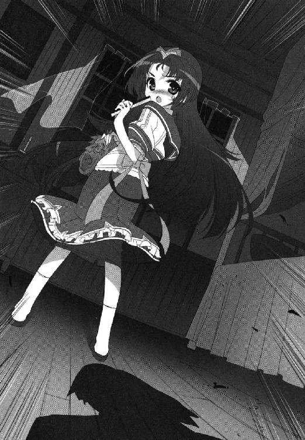
いつの間にドアが開いていたのだろう。見知らぬ人影が立っていた。
手元のロウソクの明かりが届くぎりぎり手前で、制服のスカートは見えても、その顔はよくわからない。
「あなたは......？」
「窓をよく見て。皆、帰りはじめていますよ」
そんなまさか。
白夜が半信半疑でカーテンの陰から庭を見れば、淡谷雪国やその仲間たちが米粒のように遠ざかっていた。中部連の少女たちまで一緒である。
「妨害ですよ」
「妨害？」
「五中の少年たちが、一人もここへ上がらせないよう画策していたから」
背筋が冷え、そして血が燃えた。
神聖な凛子詣を。
よくも──。
「約束しましょう」
まるで魔法をかけられるように、白夜はその声を聞いてしまう。
「予感がするのです。いつか、こちらとそちらの利害が一致する日が来るとするなら。その時は、こちらからまず手を貸しましょう。どうぞためらわず握りかえしてください」
「わかりませんわ。そもそも......あなたは、いったいどなた？」
対して暗闇から聞こえたそれは、明確な答えと言えるものでもなかったけれど。
「ただの幽霊ですよ。必要な時しか呼ばれない、この学院の幽霊です」
第３章 逢い引き百景
スクールバスで二十分。降りた先は別世界。
振り返れば空舟駅だった。色とりどりの老若男女が行き交っている。他にもゲーセンにコンビニにコーヒースタンドに。ああビバ文明の匂い。
彼らから遠ざかっていたのはわずかな時間のはずなのに、原色の刺激に脳みその奥がチカチカするのが自分でもわかるのだ。ティッシュ配りのバイト兄さんさえ物珍しく見えてしまう。
バスが去ってもターミナル付近に群れている青美女学院の生徒たちに混じって、雪国たちも荷物を抱えて立っていた。
「この三日という時間は短いかもしれませんが、各自頭を切り換えリフレッシュされることを期待しています。そしてまたここでお会いしましょう──」
そして雪国がぼうっとしている間も、制服の群の先頭では、姉の淡谷舞姫が、生徒会長らしく締めの言葉を喋らされている。
「淡谷。淡谷ほらっ」
横から鳥子に肘でつつかれた。なんですか？
「よそ見してないで前みてなさいよ」
叱られてしまった。
ついつい目線はあちらへ泳いでしまうが、本来の集団の先頭では、豊かな巻き毛の胡蝶の宮が、ローズロワイヤルのトップとして締めの言葉を話している。
だが言っていることは、舞姫とそう変わらない。ようはこれから青美女学院は、全体的なお盆休みに入るらしいのだ。三食を頼っていたカフェテリアや教務課も閉鎖されるそうなので、校内に居残っていた合宿組も、一度家に帰らなければならないらしい。
「この三日間は、あたくしたちに与えられた休息の時間です。優雅かつ有意義に過ごし、またお稽古をいたしましょう──」
凛子詣の肝試しが終わった翌日の朝、同じヘリコプターで堂々帰還した彼女の勇姿は長く語り継がれることだろう。
「それでは、各自良い休暇をお過ごしください」
以上、解散。
「「「ごきげんよう！」」」
列が一気にゆるむ。ここからさらに電車を乗り継ぐ者、市バスに乗り換える者、親が車で迎えにきている者、帰りの交通手段もさまざまだ。
仲間と離れてしまうのは少々寂しいが、一息つける骨休み期間には変わりない。雪国も重い鞄を持ち直し、照りつける夏空に向かって背伸びをした。
──と言って真っ先にすることと言えば、家に帰って洗濯機を回すことなのだが。
（うわっ、なんなのこの惨状！）
家のドアを開けたとたん、むっと漂ってくる荒んだ空気に絶句してしまう。
雪国は廊下を進みながら、脱衣場めがけて鞄を放り投げ、ついでにばらばらと散乱しているタオルや新聞を拾ってまわった。留守中の家の管理は、祖母にあれほどがんばってと頼んでおいたのに、なんなのだこれは。
「ちょっとねえ、おばあちゃん！ なんなのさこれ！」
和室の襖が開いて、当の菜穂子が顔を出した。まるで『羅生門』に出てくる追いはぎの老婆もかくやという姿に絶句する。やっと眠れたところだったらしい。
「なんだいこの子は帰ってくるなりぎゃーぎゃーと......庭木に水は言われた通りやっといたよ」
「それはもう当たり前だから！」
絶えていたら死ぬ。花以前に自分が。
「トリちゃは元気だったかにゃー？」
「は？」
「しらんならいいにゃーん」
寝ぼけてもいるらしい。襖が閉まった。さっぱりわからない。
出ていった時とまったく同じ位置ではためいている洗濯物を取り込み、合宿で出た洗濯物と一緒に洗濯機を回しまくる。お次は台所へ直行だ。さあ洗って洗って洗って洗って洗って燃えつきるまで洗え────っ！
──一時間後。
「ふっ、生き返ったよ......」
エンディングのスタッフロール。淡谷家のバイオハザードは水際で食い止められたのだ。
自画自賛の悦に入りながら、雪国は綺麗に磨き直されたダイニングテーブルに突っ伏した。涼しくなったら庭木と鉢花のチェックも念入りにしよう。そうして洗濯機が回る音を聞きながら、一人うつらうつらしていると、リビングに『自分』が降りてきた。
（......だれ？）
いや、違う。自分のはずがない。どうやら舞姫が男装した『ニセ雪国』の姿のようだ。半袖シャツにジーンズの軽装である。
「......どっか行くの、舞ちゃん？」
「あ、ユキグニだ」
たずねると、舞姫が振り返る。そう断りもなく男子の格好をされると、菜穂子に見つかった時などが困るのだが、ＳＥＣと遊びに行く約束があるのだという。
「へえ。ひさしぶりじゃない」
「ん。たぶん女子校見学とかだろうからさ、こっちのがいいんだ」
それは普通逆ではないかと思うが、舞姫の判断では『男の子』でいた方がいいのだろう。
なんにしろ、舞姫は嬉しそうなのだ。
「楽しんできなね」と言うと、舞姫は珍しく屈託のない調子で笑ってうなずいた。「りょーかい」とだけ言って、リビングから玄関へと走っていく。ちょっと羨ましいなと思ってしまった。
こちらはと言えば、遊びに行く予定などまっさらだ。せめて蜜から、この三日間の予定を聞き出すなりして、一日ぐらいデートに誘うべきだったろうか。
ぼーっと過ごす三日間と、アクションを起こす三日間。ここで宿題だけを済ませて終わる淡谷雪国と、そうではない淡谷雪国とでは、いわゆるその後の展開に大きな違いが出てくるのではないだろうか。
雪国は考えると、意を決して椅子から立ち上がった。
ばくばくと心臓が鳴る。かけた電話の向こうから、やたらと作り声の第一声が飛びこんできた。一駿河家の家政婦、清野さんに違いない。
『どちらさまでございましょうか』
ここでがんばるところが違うのだ。ねえ、きっとそうなんだよね大道寺くん！
「あ、あの、僕は淡谷と申しま──」
『あらっ、まあまあまあ！ おひさしぶりでございます淡谷お嬢様！』
いやちょっと待て。お嬢様？
『ほんと毎日暑いですわねえ。制服はちゃんと届きましたか？ 淡谷様は夏ばてなどされておりませんか？ 私ったらもう二キロも瘦せてしまいまして。ぜんぜん見えないって？ いやだ淡谷様ったら電話じゃ当たり前じゃございませんのおほほほほほほ』
「違うんです。淡谷は淡谷ですけど、姉じゃなくて弟の──」
『すいませんねえ。うちのお嬢様は、学校の合宿から戻ったと思ったらまたでかけておりますのよ。病院に足の具合を見せに行かなきゃいけないそうで。お供しますと申し上げているのに一人で行かなきゃダメって言ってきかなくて。独立心があるのはけっこうですけど、毎度わがままと紙一重でほんと困ったお嬢様ですこと』
「は？ 病院？ 病院ってこの間」
行ってきたんじゃ──。
清野さんは、その後も『困ったことと言えば』と続けて喋った。いわゆる吹奏楽器のプロなどは、口で楽器を吹きながら鼻で呼吸をすることで、半永久的な息継ぎ無し演奏が可能だと言うが、まさしくそんな感じでまくしたてるのだ。
『──だから私もね、思いきって言ってやったんですよ。そのゴミを出したのはうちじゃない。本当なら旦那様か奥様が申し上げるべきことなんでしょうが、私もこちらに勤めて長いですからね。家を守るものとして言うべきことは言ってやらないと。そうそうところで淡谷様、うちの蜜お嬢様にどんなご用事が？』
「............いえ......なんかもう......大した用事じゃなかったので。直接、言います。本人に......」
『まあっ、よろしいんですの？』
「......ありがとうございました......」
がしゃりと電話を、切った。
どっと疲れた。
どうする。
世間話で終わってしまったではないか。
継ぎ目のない金属製品は衝撃に強く、継ぎ目のないおばちゃんはそれ以上に強かった。
セミと洗濯機の音に混じって、また電話のベルが鳴った。
雪国は、くずおれていた膝に力を入れて立ち上がる。はい、淡谷です──。
『古葉ですが、淡谷さんのお宅ですか？』
うえええええええ。
「ど、どどどど、どうしたの古葉さんっ!?」
『......その声、淡谷よね？ そんなおどろかなくてもいいじゃない』
地球が滅亡したとでも聞きそうなリアクションが、彼女はお気に召さなかったらしい。
「ごめん。単純にびっくりしたから」
『淡谷も携帯買ってもらえばいいのよ。家電にかけるの、はっきり言って面倒』
「あー、欲しいんだけどね......」
だんだん頭がはっきりしてくる。
「うちのおばあちゃんがさ、携帯キライなんだよね」
『えっ』
「そうなの。どうしても欲しいなら高校受かってからバイトして買えーって。まだ考え変えないみたい」
鳥子が押し黙った。どうも『おばあちゃん』という単語は、彼女にとってけっこうな重みを持つようだ。
携帯の解約に走らなきゃいいのだが。
「でも、古葉さんがかけてきてくれるなんてはじめてだよね。どうしたの？」
『......べつに、大した用じゃないんだけど......』
とても気軽とは思えないシリアスさで、『駅まで出てこれない？』と鳥子は言うのだ。
「駅？ 僕だけ？」
『そうよっ。言っとくけど、変な意味じゃないからね？ そこんとこ間違えないでね！』
なんでも古葉さんは、劇の衣装に使う布を買いにいきたいらしい。
「でもさ、衣装とかなら、みんなで一緒に買いにいった方がいいんじゃ......」
『甘いわね淡谷。あの人たちに一枚嚙ませたら、総額いくらのお買い物になると思う？』
鳥子は、まるで怪談でも語るように声をひそめた。
実際に彼女は、衣装や小道具の相談をするつもりだったらしい。しかし、「父の知り合いに良い業者がおりますわ！」と、とんでもないお値段の依頼表を持ってこられた時点で諦めがついたそうだ。きっと蝶の名がつくあの人に違いないことは想像がついた。
『五中は劇の予算三万しか出ないのよ！ 総シルクでフルオーダーのマントなんて作ったら、残り全員全裸とイチジクの葉で出ることになるじゃない！』
「ああ......それは斬新だ......」
伝説ができるかもしれない。それ以前に停学か。
『だから、先に布だけでも用意して、他はいりませんって押し通すの。いくら向こうが負担するって言っても、これ以上貸しは作れないじゃない』
一庶民として、五中の生徒会長として、譲れない一線は持ちたい──そんなところだろうか。いつの間にか彼女も、ずいぶん心境が変わったようだ。
「なるほどね......」
『ねえ。あたし、つまらない見栄はってると思う？ たしかに蝶間林さんとかに頼れば、見栄えだけはあっちの劇に負けないようになると思うけど......』
「ううん。違うよ古葉さん」
その気持ちは、雪国の中にもあった。間違いのない思いだった。
見た目だけを飾ったところで、きっと観客には丸わかりだろう。中身が伴わなければ意味がない。
意味がなくて、だからこそ難しくて。
「わかった。ちょっと待ってて」
さすがに舞姫と行き先がかぶることもないだろう。洗濯物を干してから、すぐに家を出た。
銀河堂は、空舟駅前のショッピングモールに古くからある手芸用品店だ。
入り口の自動ドアをくぐると、まるでアジアのバザールもかくやという大量の物資や反物が目に入ってくる。この細長いビル全部が売り場であり、布でもボタンでもなんでもそろうとのことである。
幸いその中でも、鳥子の姿はすぐに見つかった。中年のご婦人が多い店内で、一人だけポニーテールのうなじとジーンズの尻の位置の高さで浮き上がって見える。
棚に並んだ正価の生地には目もくれず、ワゴンセールで山と積まれた『どれでも百円』の端布を、親の敵討ちのような真剣さで吟味しているからおかしかった。
「や、古葉さん」
「！」
雪国が呼ぶと、鳥子が素早く振り返る。
「ごめん。敵討ちの邪魔しちゃった？」
「なにそれ」
眉間の皺が深くなるけれど、可愛らしいヒヨコさん柄の布を握りしめたままなので、あまり迫力もないのだ。
そう言えば携帯にぶら下がっていたストラップも、ビーズで作ったウサギさんだったような気がする。
「隠れ乙女......」
「黙ってて淡谷」
「お会計したいなら待ってるけど。ヒヨコさん」
「だからしないからっ」
鳥子はポニーテールを振って話を打ち切ったけれど、その布とヒヨコが鳴く模様は、後の後まで頭に残っていた。
「まずはなに買うの？」
「生地。サイズはこれだけ」
携帯にメモを打ち込んできたらしい。
劇で使う布地は、そうやってすでに必要な種類と量の目星を付けていたようだった。こちら一人では途方に暮れるような生地売り場の迷宮に、果敢に踏み込んで生地を選びはじめるからありがたい。あっちの棚、こっちの棚と忙しくなる。
「男の子には退屈よねえ、こういうところ」
どきりとした。
一人でぷらぷらしていたからだろうか。店員さんが作業台で裁断用のハサミを握りながら、おもしろそうに笑っていた。
「ねえ。お買い物がすむまで外で待たせてもらえばいいのに。ボクもかわいそうに」
「い、いや僕はべつに──」
「違うわよ、山田さん！ カノジョと一緒ならどこでも付いていきたいのよ。荷物持ちでもデートになっちゃうのよ」
「そうかしら」
「そうよお」
ちょっと待って欲しい。
「ね。淡谷。こっちとこっちの布、どっちがいい？」
「......あ、う、うん。どっちもいいんじゃないかな」
「真面目に考えてよ淡谷の衣装なんだからね？」
ひやかされているのに気づいていないのか、鳥子はまた新しい生地を引っ張り出し、均整のとれた自分の体にあてがったりとしきりに考え込んでいる。
無意識に感じていた気恥ずかしさは、もしかしたらこれだったのかもしれない。
なにせ内装の鏡に映るのは、女装ではない素の自分。カツラもスカートもつけていない。そのくせ隣にいるのは、クラス違いの綺麗な女の子。確かにこの距離とシチュエーションだけ取って見れば、洋服屋やデパートでたまに見かける買い物カップルに見えないこともないのである。
それが自分の頭の中の妄想ではなく、外から「ちゃんとカレシ・カノジョに見えてますよ」と指摘されてしまえば！
「ほら、淡谷。ぼっとしないでよ。上の階も行くんだからね？」
「はっ、はい！」
「......大丈夫？」
いたたまれないのだ。『尻にしかれちゃって』とばかりに含み笑いの店員さんに背を向けて、雪国は鳥子の側にいることだけを心がけた。鳥子は、平気なのだろうか。
合わせて大振りの紙袋六つぶんの荷物は、商店街の地面に並べてみるとなかなか壮観だった。
まさにビルの上から下まで。細々としたボタンやファスナーなどの副素材も、同じぐらい時間をかけて注文をして、袋に入れてもらうとこれだけの量になってしまったのだ。
「まずさ、ご飯たべない？」
「......お昼？」
たべてないよ。しっかりと。
ちょうど銀河堂の隣には、お手軽便利なファーストフード店がある。鳥子も不満はないようで、互いに大袋をばさばさ言わせながら自動ドアをくぐった。
店の混み具合はそこそこのようだった。
一番奥の禁煙席に、とりあえずの席を確保。買った荷物もまとめてテーブルの下に置いて、それでも足りずに椅子の下にも袋を置く形になって、鳥子が荷物番をするかわりに、雪国がまとめて注文に行くことにした。
「......じゃあ、チーズバーガーのセット。ウーロン茶で......」
「わかった了解」
鳥子リクエストのチーズバーガーセットと、自分が食べたいテリヤキセットを一つのトレイに載せて戻ってくると、どっかり椅子に腰掛ける。
「はあ。とりあえずお疲れ様だね──」
そのまま頼んだコーラで乾杯しそうな勢いの雪国だったが、鳥子は無言だった。
ただ小さな紙バッグを両手に握りしめたまま、身を硬くしてじっとしている。
「それも荷物？ 置けないなら僕の方に置いておこっか？」
「違うの」
「違う？」
「違うの......これは、劇で使うのじゃなくて、淡谷に......あげるものだから」
うつむいた鳥子は、切れ切れにそれだけ言った。両手におさまっていた紙バッグを、雪国の方へと滑らせる。
なんだろう。
硬くこわばった彼女の指先が、力の入りすぎで白くなっている。そんなところばかり目に入る。たぶん、自分はきっと、おどろいているのかもしれない。
「僕に......？」
「今日、つきあってくれたし」
「それぐらいで──」
「それぐらいじゃないの。その前も、肝試しとかで声かけてくれたし。けっこう、うれしかったっていうか──ううん、そもそも淡谷が人力リバーフェスタの企画まとめるの引き受けてくれなかったら、こんな風にはなってなかった。そうも思うから。だから」
顔を上げた鳥子の顔が、どこかで泣き出しそうにも見えて、心臓が跳ね上がってしまったのは仕方がないと思う。
「大したものじゃないから、とっといて。それであたしの気がすむの。それだけ」
雪国は、言われるままに紙バッグを受け取った。どうしよう。受け取ってしまったのだ。
それは銀河堂のロゴではなかった。上等な黒に赤いメタルの箔押しがしてあって、持ち手は黒のリボンでできている。これをその場で開けていいのか悪いのか、そんなことすらわからない。
布屋の店員さんにからかわれたり。プレゼントをもらったり。
まずい。これは非常にまずいよ。まずはありがとうとか、やっぱり悪いよとか、言うべき言葉は沢山あるはずなのに、まともに彼女の顔を見ると別方向の感情が大爆発してしまいそうで、それが怖くて前が向けない。
一生懸命雪国は、息をする先を探すために背後を振り仰いだ。しかしそこでよりにもよって、さらにすごいものを目撃してしまったのだ。
（う、うそだ──！）
ちょうど自動ドアを開けて入ってきたばかりのその女の子は、黒革のショートパンツにネクタイ付きのシャツというボーイッシュな服装だった。髪はハンチング帽の中にすべて隠し、ふっくらと甘い顔立ちに似合わない大振りのサングラスまでかけて、見た目は『一駿河蜜さん』らしくないが、『変装した一駿河蜜さん』と言われればものすごく納得する仕様である。
（一駿河さん）
抜き足差し足でカウンターへ行って、一生懸命ダブルチーズバーガーとポテトのセットのお持ち帰りを注文して、待っている間もびくびくびくびく周りに気を配って、やってきた注文の品を後生大事に抱えて回れ右──。
（一駿河さんだよ）
どう見ても一駿河蜜さんですよ──。
別の意味で心臓が痛かった。どうしてあの子はああなんだ。変身が露骨すぎてバレバレなところも泣けてくる。清野さんに噓までついて、ここに何をしに来たかなんて、聞くまでもない。そんなにハンバーガーが食べたかったんですか一駿河さん。
「......あれ、一駿河蜜？」
「いいっ？」
「ねえ。やっぱりそうよね──」
「だめだってば古葉さんほっとかなきゃ！」
止めようとしたら、逆に雪国が隣の椅子を蹴倒してしまった。バタンと派手な音がフロア内に響き、蜜も十センチぐらい飛び上がりながらこちらを見る。
まずいまずいまずい──！
「お、弟さん!?」
変装中の蜜の手から、ほかほかの紙袋が滑り落ちる。雪国は、自分で自分の頰をぶん殴りたくなった。馬鹿。
「......そうですか。すぐに蜜だってわかっちゃいましたか」
雪国たちのテーブルに座って、蜜はうなだれた。似合わないサングラスは、シャツの胸ポケットに挟んで留めてある。せっかくだから食べてとばかりに、雪国たちのポテトフライも勧めてみる。彼女ははむはむと一本ずつポテトを口に入れた。
「たしかに、うん。一駿河さんらしさはなかったとは思うけどさ......」
オフ日の芸能人みたいで、普通の人らしさも欠けていた、としか言いようがない。
「あの、お願いします。今日のこと、お姉様たちには内緒にしててもらえますかっ？」
それはもちろん、雪国としても秘密は守る。リアル雪国だろうがニセ舞姫だろうが、この方針は変わらない。
問題は鳥子だ。
「......べつに、話す必要もないと思うから、誰にも言わないわ」
「ほんとですかっ」
「かわりに、あたしたちのことも内緒にしてくれる？」
「もちろんっ」
鳥子は真面目な顔で蜜を見ていた。
蜜は何度も頭をさげて、「お邪魔しました」と言って店を出て行った。
「おもしろい子ね、あの子」
「うん......」
しかし正直、なにかが引っかかる。
雪国はその後もしばらく、残ったポテトやハンバーガーをぱくつきながら、蜜と鳥子のやりとりについて考えてみた。
「内緒にして」と言った蜜に、「あたしたちのことも内緒にして」と言った鳥子。それを受けて「お邪魔しました」と言った蜜。不思議なぐらい頰が赤かった気がする。
「！」
雪国は、思わず愕然と鳥子の顔を見返してしまった。
「古葉さん......？」
つまりなにか？
蜜は大事なデートの邪魔をしてしまってすみませんと言っていたのか──!?
＊＊＊
空舟運動公園に一時。舞姫が指定通りに自転車をこいで公園へ行くと、入り口の自転車置き場にいつもの三人がいつものように待っていた。
「おまたせ、みんな」
「えーっと、ほんとに兄貴っすか？ オトートじゃなく？」
「そうだってば。ボクだよ」
わかんねっすよと大道寺が言う。やはり遠目には紛らわしくて区別が面倒らしい。
聞くところによると大道寺に仲のいい女の子ができたらしいとか、非常におもしろい事態になっているそうなのに。
「今日は男の格好なのだな、兄貴は」
「うん。まずい？ 会長」
「いや......特に支障はない、はず」
微妙に言葉を濁してくる。
みんなで集まらないかという話を振られた時は、ＳＥＣで活動をするからという話しか聞けず、具体的になにをするとまではわからなかったのだ。この近くなら空舟商業と聖マリエン女子もある。青美の高等科も徒歩圏内だが、いま行っても誰もいないだろう。
「ねえねえ大道寺くん。大道寺くんのカノジョってさ──」
「いいから自転車をとめたまえ。活動場所へ案内する」
「活動場所？」
「大道寺構成員。豆坂構成員。君たちも持ち場へ着くのだ」
「らじゃっす！」
言ってひーほーひーほーと、敬礼して走り出す二人。むりやり話を変えられてしまった形の舞姫は、口をとがらせながら自転車のスタンドをおろした。
真昼の公園内はまさに炎天下という気温だった。市内では一、二を争う大きな緑地公園だが、木陰のベンチで寝ているサラリーマンのおじさん以外は、散歩の人も虫採りの子供の数もとても少ない。
芝目はわざわざ植え込みの柵を乗り越えて、茂みの中に身を潜めろと言ってきた。
「ここ？」
「監視が本日の任務であるからな」
「なんだそれ」
黙って双眼鏡を押しつけてくる。こちらが状況を飲み込めずぼうっとしていると、『ほれ早く』とばかりにぐいぐいとだ。今日はいつになく強引な会長である。
言われた通りに双眼鏡を向けると、反対側の広場が見えた。
モザイク模様の石畳。中央へ行くほど銀色のポールが林のように連なるオブジェは、市内の彫刻家か誰かが作ったものらしい。ポールの先には風で動くモビールが取り付けられているが、この時間は無風らしく直射日光を照り返すばかりだ。石畳をナイフで切りとるような、黒い影だけがのびている。
そして、そんな金属の林にまぎれるように、少女が一人たたずんでいた。白いワンピースに麦わら帽子をかぶって、少し高めの背丈にも見覚えがあった。
「......え？ 籠崎、亜莉早？」
よりにもよって、大道寺のつきあいはじめた彼女さんではないか。
現に彼女の隣に、さっきまで一緒にいた大道寺が駆け寄って話しはじめている。舞姫は顔をしかめてしまった。
「なに、会長。ボクらの今日の任務って、大道寺くんのデートの監視なの？」
「いいから見ていたまえ」
「む......」
無粋な真似をさせないでほしい。兎羽山監視合宿の路線も嫌いではないが、あれは相手が雪国だったからなのだ。
「──おい豆坂構成員。対象の投入はまだか？ なに怖じ気づいている？ ばかもの！ 首に縄を付けてでもしょっ引けと言っただろう！」
そう言っている間にも、芝目は携帯に向かって早く早くとせき立てている。
双眼鏡の向こうでは、大道寺が両手をばたばたさせながらギャグを飛ばしているようだ。しかも相当くだらないらしい。籠崎さんが口に手をあてて笑っている。笑って笑って、そのまま体を折るように頭を下げた。
「──会長」
「なんだね兄貴」
「......なんか、これ、へんじゃない？」
籠崎亜莉早はそのまま、長く頭を上げなかった。『そんな謝んなくてもいいっすよ』──そう大道寺の口が動いているのがなんとなくわかる。
大道寺は彼女の背中を叩いている。自分よりも低い目線になってしまった少女に向かってがんばれ、ファイトと繰り返す。その顔はどこまでもにこやかだ。なのに時折顔を上げる籠崎亜莉早の目は真っ赤で、そこにいるのが申し訳ないとばかりに身を縮めているのだ。
感じた疑問や違和感に、背後の芝目が淡々と答えた。
「例の肝試しが終わったあとにな、面と向かって言われたらしいのだ。好きな奴がいるから相談にのってほしかったのだと」
「え──」
「相手は、五中の書紀のサトウ君だった」
そのサトウ君が、遅れて広場にやってくる。絶妙のタイミングだった。笑ってきびすを返す大道寺と入れ違いに、籠崎亜莉早のもとへ走っていく。ポロシャツの背中に靴の蹴り跡がついているのはなぜなのか。
おそらくきっと──、芝目にそそのかされた謎の覆面お助け人に、引っ張り出されたからに違いない。
「大道寺構成員は、ひどく気にしてな。自分が勝手に勘違いをして、せっかく一緒に回れるチャンスもふいにさせてしまったと。なんとかして後押しと埋め合わせができないかと考えたらしいのだ」
「そーゆーことっす」
振り返れば、大道寺が植え込みの柵を越えてくるところだった。遅れて豆坂も顔を出してくる。
呆然とする舞姫の前まで近寄って来ると、こちらが持ったままの双眼鏡を受け取って、広場の情景を再確認している。信じられない。
「あー、やったマメ。お膳立てばっちり。励ましきいてる。なんか脈ありそうな感じ」
いけいけドンドンと、のぞき見姿勢のまま拳を打ち合わせているのだ。
「いいの、大道寺くん。こんなの......」
「いいんすよいいんすよ。女の子のレンアイ相談なんてサイト開いた時からさんざんやってきたし、今回だってその延長みたいなもんっしょ？」
すがすがしい笑顔。止まらない軽口。
「オレがＳＥＣやってなかったら会えなかった。兄貴とも無理だし、青美の子とも会えなかった。そんなら兄貴も、会長も、マメも一緒にやって盛り上げてくれた方が、なんかすっげえ、ＳＥＣの活動っぽくなるし、オレも納得できるだろって......思ったんすよね」
大道寺は、笑いながら泣き続けていた。
双眼鏡の向こうでは、新しい出会いがはじまっている。
夏の恋が、一つ消えて、生まれた。そういうことなのだろうか。
潰れた所で終わらせなかったのは、大道寺だ。ここまで市内のお嬢さんを見つめて助けてきた少年だ。
その場に仲間を、自分も呼んでくれた事実。
「ほら。任務、完了っす。ひーほー」
舞姫はこみあげてくるものを抑えきれず、双眼鏡をおろした大道寺の背中に飛びついた。
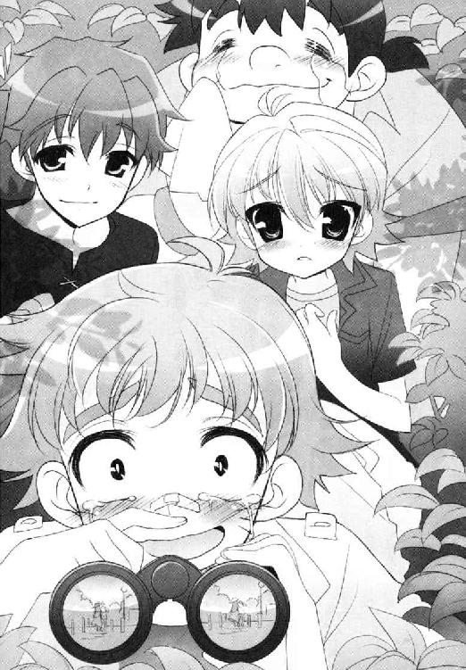
＊＊＊
テーブルの雰囲気は、どこまでも硬かった。雪国の顔はこわばり、鳥子もまた口をつぐんでいる。
「......ああいう悪ふざけ、古葉さんらしくないと思う」
なぜ？ と聞きたかった。誤解させてそのままでいた。そうとしか思えない。
「......んかじゃ、ないし」
「え？」
「悪ふざけなんかじゃ、ないし」
鳥子はうつむきつつも、テーブルの紙ナプキンをいじる指先に、ぎゅっと力を入れた。
「知ってて、やったの。淡谷はあの子のこと、好きだけど。わかってるけど、あの時は『あたしの時間』だった。そうでしょう？ あたしが淡谷といるはずの時間だった。入ってくるのはずるい。ずるいじゃない」
語尾が震えていた。
「一度だれかを好きになったら、もう他の人は好きにならないの？ 視界の中にも入らないの？ それって思考停止とどう違うの？ 順番が違うだけで見てももらえないなんてない。絶対ないわよ」
言葉が先にあふれ出て、次に鳥子の顔がきた。目は口ほどに物を言う。レーザービーム。真っ直ぐに撃ち抜かれた。理屈よりも濡れた瞳が強かった。
「目を開けてよ。あたしのことも見てよ。あたしだって、ずっと前から淡谷のこと──」
内側から迫ってくる『なにか』が怖かった。
告白をしてくる女の子自体は、入れ替わりがはじまってから何度か見てきた。どれもこれも姉の舞姫がらみの告白だった。好きです。つきあって。これもまたそうに違いないのに、そうでないとおかしいのに、どこかで『違う』と信じる心があり、どうしてそう思うのかもよくわからなくて、口の中ばかりが乾いていく。
「あの、ぼ、僕、は──」
「好きなの。淡谷のこと」
一駿河さんはどうなるんだ。
「淡谷」
「だから僕はっ」
「は、ばっかみたい淡谷」
鳥子はその瞬間、ひどく突き放すように言った。
全開にしていた感情の水門を、一気に閉じて下ろしたようにも見えた。
その顔に乗っていたのは、口許だけに浮かぶ皮肉げな微笑だ。
「本気にしすぎ。固まらないでよそんなコンクリみたいに。ちょっと言ってみただけじゃない。勘違いしないで」
「古葉さん──」
「淡谷、必死すぎるんだもの。ほんとすごい貴重なもの見れちゃったかもしれない。ごめんね、慌てさせちゃって」
ちょっと待て。それはないだろう？
「あ、あのね、冗談には、言っていいことと悪いことが──」
「あるのよね。ごめん。あたしが悪かった」
ポニーテールの毛先を跳ねさせる勢いで、鳥子は頭をさげてくる。雪国は眉間に皺を寄せ、腹をたて、最後は脱力するしかなかった。
冗談か。全部そうなのか。
「......言うこときついよ古葉さん......」
「いま考えてるネタのシチュエーションとそっくりだったの。だからつい。シミュレートしてみたくなっちゃったっていうか」
小説の実験台に使われたわけか。泣けてくる。
「どんな話なの」
ほとんど氷が溶けて水になったコーラをすする。
「主人公は、ずっと片思いしてて、でもその片思いの相手は別の女の子のことが好きで、思いが届かないから苦しくなるの」
「片思いの相手にされたんだね、僕」
「まあ、そういうことになるわね」
「完成するといいね、それ」
鳥子はかすかに目を細めた。まるで口の中の虫歯をこらえるようにも見えたが、笑ったつもりのようだった。
しょせん、この程度が関の山か。自分は。
「それで、小説の中だと僕にあたる人はどうなる予定なの？ 誰とくっつくことになるの？」
「さあ。教えない──」
鳥子はしわくちゃのナプキンを、きれいにたたんでトレイに置く。
「でも、リアルの淡谷雪国が、一駿河蜜とくっつけるとも思えない」
息が、つまった。
鳥子は何度か瞬きをして、なおこちらを見つめている。
「淡谷。あの子はやめておいた方がいいと思う。あたしの気持ちがどうだとか、そういうのは置いておいて、淡谷は、きっと傷つくよ。難しいから」
雪国は、今すぐ立ち上がって問いただしたい気持ちと、勝手に気持ちを見透かして判断されていることへの反発心で立ち往生することになった。
（証拠は、あるの？）
聞きたい心を、おさえて、必死に、冷静に、唇を動かした。
「ずいぶん、先が決まってるみたいな言い方だ」
「見たから」
なにを？
声を荒らげるのは、気にして不安がっていることを認めるようで嫌だった。
「誤解してるよ、古葉さんは」
鳥子は「そうね」と呟いた。素直に同意しているようにも、また一つ水門を下ろしたようにも取れる声音で。
「そろそろ出ない？ 夕立きそう」
「うん──」
途切れたと思っていた店の有線チャートが、急にボリュームを上げて聞こえてきた。
＊＊＊
「食いなはれ、食いなはれ」
「食うっす！」
「お茶いる？」
「いるっす！」
「飲んで飲んで」
大道寺がラーメンをかきこみ、かきこみながら泣いて、泣きながらセルフサービスのジャスミン茶をすすっている。たまに中空を見据えたかと思うと、
「青い空のばかやろう......」
「そうだねばかだね」
「ば、か、や、ろ、う──っ！」
叫べ。青少年。吼えろ。ふられ小僧。ここはアーケード下の『だいちゃんラーメン』だが、キミの目に青い空が見えるというならそういうことなのだ。
ヤケ食いの始まりはラーメンからだった。餃子、チャーハン、肉まんで中華に飽きて、ファーストフード店でハンバーガーを食ってから、また店を変えてラーメン屋に入っている。
「......もうへそからはみ出るまで食べちゃえ」
「もちろんっす」
「耳からはみ出るまで食べちゃえ」
「もちろんっすイエー」
「目から口から鼻から尻から」
「もうよかろう兄貴そのへんで」
いっそ空を飛ぶまでと言おうとしたところで芝目のつっこみが入った。
お座敷のテーブル席。頭上のテレビからは、夕方のニュースが流れはじめている。さきほどから大道寺の向かいに座っている舞姫は、親戚のおばちゃんのように食べることをすすめ、お茶をつぎ足し、鼻がかみたいようならティッシュを差し出してやっていた。
「......ね、会長」
「なんだ？」
「今日さ、呼んでくれてありがとね」
合間にえぐえぐと大道寺の泣き声が響く。豆坂がヘッドロックをかけられている。そんな混乱に自分がいられること。
「もうみんな無理かと思ってた」
「なにがだ」
「短気起こして、なくしちゃったかと思った。でも良かった。まだ嫌われてなかったみたいだね、ボク」
「な──」
芝目が、あんぐりと口を開けた。
「違う？」
「な、な、なぜにそんなことを言うのだ兄貴っ。兄貴は兄貴ではないか。なんにも、変わってなんかおらん、はずだ」
「ありがと、会長」
「そりゃあ、ときどき訳わからんこともあるが......でも俺は、兄貴がいなかったら、すごく困るぞ。とてもとても困るぞ」
舞姫はうなずいた。真剣な訴えがうれしかった。
「二学期になってもさ、遊んでくれる？」
「もちろんだ」
「みんなで？」
「タイマンでもＯＫ！ いやむしろ推奨というか！」
「太っ腹だなあ」
舞姫は笑う。それを見た芝目が顔を赤くする。かわされる言葉。大事な約束。でも肝心のところがすれ違ったままなことに、二人は気づかない。
いつまでもいつまでも気づかない。
そして外はどしゃぶり。
四人分の会計をすませてだいちゃんラーメンを出ると、面白いぐらいに雨が降っていた。
「あっちゃあ......」
「うわっちゃあ......」
「ほわっちゃあ......」
「え、お、弟さん!?」
ＳＥＣと団子になって、アーケードの出口で呆然としていると、なぜかすっとんきょうな声がかかった。
それは大ぶりのサングラスに、帽子まで目深にかぶった怪しい風体の女の子である。黒い折り畳み傘と一緒に、つかつかと一直線に近寄ってくる。
「どうしたんですか？ だって、さっきまで古葉会長と──」
「こばかいちょう？」
あまりにぽかんとしているせいか、向こうはなにかに気づいたようだった。『やだ。わたしったら馬鹿』とばかりにうつむいて頰を叩くと、また勢いこんで舞姫の顔を見上げてくる。
「大丈夫。言いません。こんなんじゃ修行が足りませんねごめんなさい！」
「あの、待ってよ」
「やっぱりとぼけるならあそこまでやらないとだめなのね......」
そう言ってひどく感心しきった様子できびすを返し、夕闇の大通りを去っていくのである。
もしかして。今の女の子は、一駿河蜜さんだったのだろうか。
鞄からはみ出ていたファーストフード店の紙袋が、蜜らしいと言えば蜜らしい。芝目たちにも確認してみるが、みな蜜に見えると太鼓判を押してくれた。
「......やっぱりそーか一駿河さんか......」
「一駿河嬢は、ああいう格好もするのだな」
「だね......」
おしゃれというより、変装みたいだ。
「んじゃあ、また二学期に会おうね──って、その前にリバーフェスタがあるか」
「そうっすよ。ばりばりライバルっすよ、オレら」
大道寺が茶化して笑う。それぐらいは浮上してきたようだ。
「楽しみにしてるよ」
「がー、余裕の発言がムカツク！」
「だってほんとのことだし」
弟たちがどんな劇を作るのか、素直に知りたいし見てみたい。
長船白夜は優秀賞にこだわっているけれど、舞姫はそこまでの欲もないのである。
ばいばいと手を振って三人と別れた。
「ただいま──」
そのままぐっしょり濡れながら家へ帰ると、弟が昼間と同じ格好でエプロンを付け、キッチンで野菜炒めを作っていた。
おみそ汁のいい匂いがして、あれだけ食べてきたというのにまたお腹が鳴りそうになる。
「ユキグニ、でかけてた？」
「なにが？」
てっきり雪国もでかけていたのかと思ったが、気のせいだったろうか。
「舞ちゃん、傘持ってなかったでしょ。濡れたなら先着替えちゃいな」
「うん。そーするよ......」
腑に落ちないながらも、湿った靴下を脱ぎ、ぺたぺたと二階の子供部屋へ移動する。
弟のテリトリーを横目に通り過ぎようとするが、机の下に大量の紙袋が並んでいた。
昼間にはなかったものである。
（なんだ。やっぱでかけてたんじゃん）
舞姫はＴシャツの裾に手をかけ、机へ近づいた。紙袋には、銀河堂のロゴが印刷してあった。劇で使うものらしいことは想像がつく。
不思議なのは、その紙袋とは別に、綺麗な箔押しのショッピングバッグが机の上に置いてあったことだ。いかにも女の子の差し入れかプレゼントといった雰囲気である。
「なんかもらったの？」
夕飯の席で聞いてみたら、雪国は口内炎が染みたようなしかめっ面をし、「わかんないよ」とふてくされたことを言っていた。
＊＊＊
雪国は部屋で宿題をするかたわら、あらためてその包み紙の中を開けてみた。
やっぱり──かっこいいんだよな、と思う。
もらったのは、銀色のボールペンだった。ノック部分からペン先まですっきりと細くて、装飾らしい装飾がどこにもないデザインがスタイリッシュで格好よかった。
なんとはなしに窓辺に向かってペンをかざしてみると、未来の宇宙船が夜空を飛んでいるようにも見えるところも雪国の好みである。
──難しいよ、淡谷。
そう言った彼女は、こちらに小さなプレゼントと、消えない疑問だけを残して去っていったわけだ。
雪国と荷物を分けあいながら、表向きはいつも通り。ひょっとしたらもう何も気にしていなかったのかもしれない。
（からかわれてたんだよな）
小説のネタで、人を巻き込んで遊んでくれたのだ。こちらがあまりに経験不足で動揺するものだから、出来心というやつに違いない。目をうるませての告白は、本当に胸にせまってきたけれど、すべて冗談だったと言われてしまえば、意識してしまった自分を恥ずかしく思うしかないのである。
『知ってて、やったの』
本当に人が悪い。
『目を開けてよ。あたしのことも見てよ』
ないない。なんにもないない。
『あたしだって、ずっと前から淡谷のこと』
なにがだよ。
『好きなの』
噓だろ。
『見たから』
なにを！
「あー」
すっきりしない。せめて、蜜はやめておけと言ってきた意味だけでも聞いておくべきだったと。腹の底で思ってももう遅い。雪国は風呂へ入りに階段を降りる。
残念。なにかがひたすら残念だった。
＊＊＊
『それはたぶん、雪国さまも聞かれたくないことだったのではないでしょうか』
「そーなんだろうね......」
舞姫はリビングの床にあぐらをかき、受話器を顎に挟んだままうなずいた。
電話の相手は久我原さゆねである。調査の定期報告をかねていたが、さゆねは舞姫が疑問に思ったことを言葉にするのがとてもうまい。ちょうど夕飯時のやりとりを聞いてみたのだ。
『おそらく舞姫さまがご存じの方。しかも円満とは言い難いやりとりがあったと見ていいと思います』
「むー。めんどくさいな。もうさっさっと幽霊退治してすっきりしたいよ」
『舞姫さまも、学校交換が続くことをお望みですか』
「望みっていうか......」
中途半端なのは嫌なのだ、と舞姫は言った。
「だって会長たちとさ、やっとちゃんと仲直りできたんだよ。ＳＥＣの活動だってできそうなんだ」
できることなら、もう一度戻りたい。戻って大騒ぎがしたい。だからどうか。そんな本音も半分織り交ぜそうになりながら。
『そうですね......』
「ね。だからお願い。早いとこ犯人見つけよう。久我原」
その時──通話がいきなり切れた。
（あれ？）
なに？ 事故か？ 舞姫は一瞬なにが起きたかわからなかったが、すぐにまた折り返し電話がかかってきた。
「久我原！」
『申し訳ありません、舞姫さま。フックの上に受話器を落としてしまいました』
「そうなの？ 珍しいね久我原が」
『舞姫さまも以前は同じ失敗を』
「いつの話なのさ」
舞姫は笑ってしまう。彼女と知り合ったのは、初等科の三年の頃だ。それからこの年まで、なにかあればこうして話し続けてきた。
「じゃあね──また今度──」
そうして二人、ひとしきり懐かしい昔話をして受話器をおろすと、ちょうどめんどくさい弟が、のろのろと一階へ下りてきたところのようだった。
「あ、ユキグニ──」
「......宿題やったの？ 舞ちゃん」
ほんとにめんどくさい子だ。
＊＊＊
題名 第二弾なのだっ
やっほ～鳥ちゃー。ちょっとは立ち直ったかーい。
いきなり死んじゃうなんてメールくれるから、ほんとにびっくりしちゃったよ
まあ鳥ちゃがかなしくなる気持ちもわかるけど。ちょっとした勇み足なんだよね？ 泣くならいっぱい泣くがいいっ。そんで必ず次に活かすのだ！！！
まずは目の前のことに集中するが吉なのよ。
例のアレ、無理に書けとも言わないから。
お祭りには必ず顔だすからねっ。そのためには仕事なんてばしーっと終わらせてやるさ！！！
ねばーぎぶあっぷでばいばいなのだ(^o^)/
ベッドの上で携帯を開きながら、鳥子は赤い目をしばたかせた。
題名 無題
ありがとうございます。先生。がんばります。
送信ボタンを押してから、自分の馬鹿さ加減を思って膝を抱えた。
家の中でだけかけている眼鏡は、相変わらず分厚くて重くて、本当ならかけずにすませたいけど、コンタクトのままでは泣けないし眠れないのだ。
部屋の一面の壁いっぱいに並んだ沢山の本。物語。
この視力の悪さは、幼い頃から彼らが好きで、彼らを読んで沢山書いてきたから。淡谷先生を知ったのだって、淡谷雪国に会ったのだって、まずはじめに本があったからだ。
でも現実は小説のように、望む展開に行かないからと言ってページを閉じたり書き直すことなどできないのだ。
間違った方向に進んでしまった気がするのに、誰もやり直しをしろとは指摘してくれないジレンマ。
どうしてあんなことを言ってしまったのだろう。
「ほんとばかだ......」
書いてみないかと言われた原稿も、返事を先送りにしたまま氷漬けで。どこにも行けずに立ち往生だ。
あたし、やっぱり脇役なのかな──。
誰か。どうか。噓でもいいから違うと言ってほしかった。
＊＊＊
なぜかその日、一駿河蜜は、家政婦の清野さんに出された夕食を全部食べた。
お上品の名のもとに、病人食のように淡泊で味気のない食事をいつも苦手に思っていたが、「いつもこれぐらい召し上がっていただければいいのに」と上機嫌にさせてしまったほどだった。
たしかにいつもできることではない。不思議と言えば不思議だ。
そんな彼女に隠れてオーブントースターを借り、昼間に買ってきていたフライドポテトの残りをあたため直した。冷蔵庫に入っていたペリエと、持ち帰りのファーストフードの相性は、組み合わせとしてはベストではないかもしれないが、このあたりはいつも妥協していた。
部屋に匂いがこもらないよう、開け放した窓の近くに椅子を寄せて、蜜はあたためたポテトをかじりはじめる。
「そうですか......そうなんですか......」
ただぼんやりと。
月の綺麗な夜空をながめながら、食卓の時と同じ調子で呟いた。
第４章 無謀と踊れ？
短かったお盆休みが明けると、それぞれの時間は一気に加速していった。
雪国がどう思おうと鳥子の演技指導がうなり、蜜もアシストでつきあってはくれるが私語が挟める余裕はなく、ローズロワイヤルも『優雅命』とは言っていられなくなる。
本番まで残り三日。
稽古場に、お裁縫部隊の少女たちがやってくる。ついに家庭科室のトルソーが持ち込まれ、それぞれの衣装がお披露目だ。雪国たち役者組は大歓声をあげた。
「もう間に合わないと思ったぞ」「わたくしのはどちら？」「これ、僕のだよね──」
それぞれもみくちゃになりながら、自分の衣装を奪い取る。
雪国が見つけて手をかけたのは、挿絵でよく見る名探偵ホームズそっくりのコートと帽子だった。ためしに脱がせて羽織ってみるが、少々大きいだろうか。
「これ、余るよ。袖とか」
頼むと責任者の女の子が、余った部分をピンで留めてくれた。ここから詰めて微調整をするつもりらしい。
「こんな質素な布でお洋服を作るのは家庭科の時間以来でしたから、できあがりが心配なのですが......」
「だ、大丈夫だよ腕がいいから！」
化繊でも平気！ アクリルでも平気！ 予算三万でも平気！
同じく隣で微妙な顔をしている鳥子は、ワトソン博士の背広に袖を通しかけていた。深い紺地の三つ揃い。凛々しい面立ちの鳥子が着ると、アフガン帰りの医者というより文学青年のように見える。
しかし、なにより歓声があがったのは別の人だった。
「まあ、素敵ですわお姉様！」
「よくお似合いです！」
胡蝶の宮が、演じる『怪盗ルパン』のマントとシルクハットを身につけているのだ。
下に着こむフロックコートもトルソーの方に用意されていて、両方着こめば完璧だろう。お取り巻きに差し出された単眼鏡をはめると、華麗な面立ちに知的な雰囲気が加わって、雪国でもわくわくしてしまった。
「かっこいいなあ、胡蝶の宮」
「女性におっしゃる褒め言葉ではございませんわよ」
胡蝶の宮はそう言って頰を赤らめたが、顔は笑ってまんざらでもない様子だった。
「それでですね、弟さん。こちらが『クロディーヌ』に戻った時のお衣装なんです！」
胡蝶の宮の背後から、ひょこりと蜜が顔を出した。
雪国は条件反射でくずおれそうになった。
（なんて可愛いのでしょうか皆々様！）
蜜は優雅な葡萄色のドレスを身につけていた。襟元と袖にたっぷりとレースをあしらい、胸の下を光沢のあるリボンで結ぶ以外は装飾らしい装飾もないシンプルなデザインである。密の小ぶりな胸も、リボンのおかげで寂しくないボリュームで膨らんでいた。
「このデザインですから、お姉様のお衣装も入っちゃうんですよ」
いたずらっ子のように蜜は笑っている。予算の乏しさから編み出された貧乏ドレスらしいが、こんな特典が付いてくるなら大歓迎だ。
「これでラストのラブシーン、ばっちり決めてくださいね！」
「もちろん！」
目の前にいる蜜をあてはめて想像して、くらくらしそうになるぐらいに本気である。
明後日は人力リバーフェスタの会場作りの手伝いだ。並行して通しのリハーサル。一夜明ければもう本番である。
「よーし。それでは一同、気合いを入れ直してみようではないか！」
芝目が調子に乗って手を叩いた。ほうほう、またやるのですかあれを。
まずは胡蝶の宮が、マントの下から右手をさしだす。
古葉鳥子が、空いた右手をその上に重ねる。
「ローズロワイヤル──」
「そ、空舟五中──」
そして周りを囲んだ全員で斉唱。
「「「ふぁいっ、お──！」」」
人力川の河川敷。そこではすでに数日前から各会場の草刈りを行い、野外ステージのような大型の施設は設営を終えていた。
ここから参加する市内の学生たちは、汗水流して本部のテントを組み立て、ステージ前に椅子を並べ、メインゲートの飾り付けを行い、展示発表組は持ち場のブースに戻って展示品作りに専念するのである。
「──以上、空舟商業高校生徒会のみなさんでした。紅月学園中等部有志は発表をはじめてください。空舟第五中学生徒会のみなさんは、至急第一会場待機エリア付近へ移動するよう──」
スピーカーから響く進行係の美しい声に、雪国は青ざめる。
雪国たちステージ発表組は、割り当て作業と並行して、ステージのリハーサルも行うから大忙しなのだ。
「ど、どうしよう一駿河さん。もう僕らの番じゃん！」
「番じゃんじゃないですよ弟さん！ 早く！ 招集はじまってますよ！」
「だって終わらないからさ──」
ゴミ捨て場のゴミを回収する簡単な作業だったが、律儀な雪国はちょっとの分別違いが許せず必死になってしまったのだ。気づけばまわりにいるお仲間は蜜だけである。
雪国はゴミの袋の口を縛って自転車の前カゴに載せると、地団駄を踏みそうな蜜も後ろに乗せて走りだす。
「後ろ、大丈夫？」
「平気です」
平気でないのは自分だけか。
舞台発表がメインの第一会場と、今いる展示や出店がメインの第二会場は、同じ河川敷でも橋一つぶん離れているので、歩きの他にも自転車で移動する人間はけっこういた。
後ろの荷台に横座りする蜜は、あからさまに密着してくることはないものの、何かの拍子に髪や肩がぶつかったりもするのでどきどきする。
あの時のデート疑惑は、鳥子の冗談がいけないのだと、忙しい合間を縫って口にはしているが、蜜はふわふわとしていてとらえどころがない。
ちゃんと信じてくれたのか、そうでないのか──。
「君たちも行くんだよ！」
「ぎゃう！」
作業そっちのけでカメラのシャッターを切っていたＳＥＣを、とっさに走りながらゴミ袋でひっぱたいた。おちおち考え事もできやしない。
「待ってくれ。空舟二中が粒ぞろいで──」
「紅月学園がダンスだよ！」
「「「速攻で参ります！」」」
ああそうですか。
第一会場へ向かう人間がいれば、逆に戻ってくる人間もいる。河川敷に沿って並行に走るサイクリングロードは、まるで北京の朝の出勤風景だった。
そしてもう少しで第一会場というところで、雪国はまだ遅れている仲間を発見した。なんと胡蝶の宮なのだ。
（ヘンなの）
間違いない。あの巻き毛の背中は彼女だろう。
土手を上がった先の遊歩道で、同じ青美の制服を着た少女と話し込んでいるのだ。雪国は思わずブレーキをかけ、手を振った。
「ねえ、なにしてるんですかあ！ 遅れますよ！」
するとちょうど胡蝶の宮たちを追い抜きにかかっていた少年が、『オレですか』とばかりに振り返る。違うよ君じゃない！
「危ない！」
少年が小脇に抱えていた『空舟市のゴミ問題』のボードが、胡蝶の宮が話していた少女のお尻を、大きくひっぱたいた。
いきなり突き飛ばされた形の少女は、あれえと甲高い悲鳴をあげ、そのまま土手の上から下へと転がり落ちていく。
ああ──。
「わ、わ、すんません！ だいじょーぶっすか!?」
白。真っ白だ。長いスカートが大きくめくれ上がり、警告に走った雪国の視界いっぱいに広がったのは、白い下着と太ももの肉。
看板少年が、あわてて斜面を滑り降りてくる。雪国もようやく落下地点へとたどりつくが遅かった。すでに少女は、自力で起き上がっていた。
「大丈夫ですか。ケガは──」
続きの言葉は、長く出てこなかった。
「......いつもながら楽しい真似をしてくださいますのね、弟さま。長船は心震えてなりませんわ」
ぶつけたらしい額の赤さはそのままに、長船白夜は扇を握りしめて笑っていた。雪国と周囲に鮮烈に焼き付けてしまったであろうスカートの中身を、左手で必死に隠している。
──まずい。
その三文字だけが頭に浮かんだ。
長船、白夜さんでしたか──。
「お、長船さん。誤解なさってはいけませんわ。雪国さんは、決してわざとお声をかけたわけでは──」
「ええそう。言葉ではどうとでもおっしゃれますものね。私にはこの方の存在そのものが不真面目に見えて仕様がございませんが。蝶間林典子さま。貴方も含めて！」
遅れてフォローにやってきた胡蝶の宮にも、白夜は毒を吐き捨てた。
鮮烈な青い炎が、瞳の中で燃えていた。
「ねえ、胡蝶の宮さま。私のこの辱めを哀れに思う心が少しでもおありになるなら、一つお願いを聞いてはいただけませんか」
「お願い──？」
「私、覚悟が決まりました。ええ、今日はそのお話がしたくてお呼びだてしたようなものでございますもの」
優雅な柳眉をひそめる胡蝶の宮に、長船白夜は提案してみせた。
「明日のステージ発表。私たちの劇が最優秀賞を取れるか否か。もし取れた場合は蝶間林典子さま、お約束してはいただけませんか。ローズロワイヤルを生徒会の監督下へ入れると」
「な──」
「不公平とは思いませんわ。もとより多かった役得の一部を返上し、私どもと同じ立場に並び立つだけでございますもの。毎週の定例ミーティングに出席し、予算の折衝を行い、ともに切磋琢磨し青美の発展に尽くしましょう？」
そんなこと、胡蝶の宮が認めるはずがない。
そうだろう。独立独歩。誰の干渉も受けないのがソロリティでありローズロワイヤルの矜持のはずである。蜜も横でうなずいている。
胡蝶の宮が、硬い声でたずねた。
「取れなかった場合は、いかがいたしますの？」
「それはもちろん、私ども中部連がソロリティの下に付いて贖います。生徒会の封じ込め役でも、下働きでもお好きなようにお使いくださいまし。次期生徒会選挙、私たちが刺客となってソロリティ一色に染めてさしあげることも可能ですわ──」
長船白夜は言い切った。それはある意味、舞姫のいる生徒会そのものへの裏切りとも取れる発言だったが、彼女に迷いはないようだった。
「つまらない賭ですこと──」
「逃げる気ですの!? そこまでご自分の権益が大事とは呆れましたわ!!」
「あまりに天秤の片方に荷を載せすぎだと申しておりますの」
激高する白夜が、一瞬口をつぐんだ。
「いいこと？ よろしくて長船さん？ まがりなりにもローズロワイヤルと取引をなさろうという気概をお持ちなら、賞が取れるか否かではなく、あたくしたちに勝るかどうかをご基準になさって。そうすれば考えてさしあげてもよろしくてよ」
冷笑し、わずかにそらした顎と胸。
それはこの上なく傲慢で、そして──。
「いかが？ 受けて立つかはあなた次第。中部連代表の長船白夜さん──」
そして、誇りに満ちて美しい茨姫の姿だった。
白夜が、熱い瞳はそのままに、口の端を引き上げる。
「......後悔なさっても、遅うございますわよ。薔薇の方」
五中の名前がアナウンスされる中、一つの賭が成立した瞬間だった。
──こちらがいくら心配したところで、胡蝶の宮は譲らないようだった。
横で蜜が、より心配そうに袖を引いても。
「それではみなさん。この賭を円滑に進めるためにも、いま見聞きしたことはすべて他言無用に願いますわ」
長船白夜がうなずき、深々とした一礼とともに去っていく。
「さ、なにを情けない顔をしておりますの、蜜。たった一度のリハーサルですのよ。遅れては申しわけがたちませんわ」
言われた蜜が、やわらかな頰をぷっとふくらませた。
「もう。お姉様の見栄っ張り！ 知りませんよ！」
雪国たちを信頼してくれるのはありがたいが、気持ちは雪国も同じだった。
負けたらローズロワイヤルを生徒会の監督下に入れるなど、正気のさたとは思えない。
倒れていた自転車を引きながら、さっそうと歩き出す胡蝶の宮に食いついた。
「胡蝶の宮。いいんですかこれで。今ならまだ間に合いますよ──」
こちらなら、白夜に土下座でもなんでもする覚悟である。
「よろしいのよ。一度しっかり話をつける必要があると思っておりましたから」
「でも」
「策も勝算もなく条件をつり上げた。雪国さんは、そう思います？」
「そりゃあ──」
「あたくし、さきほどまでステージの近くにいて、生徒会のリハーサル風景も拝見しておりましたけど──」
彼女は静かにこちらを見返した。
「お互いに全力を尽くせば、決して一方的な勝負にはならないと感じましたわ」
理性と情熱。同じぐらいに誇り高い。彼女の美徳の一つなのだろう。
ローズロワイヤルの格を保つためなら、どんな手段も辞さないのだと、彼女はそう語っているような気がした。
（期待、されてるって......ことだよね）
とりも直さず、その条件を成立させるには、雪国の熱演がなければ話にならないわけで。雪国はうなずきながらも、ごくりと喉を鳴らしてしまった。
＊＊＊
舞姫たちにあてがわれた仕事は、第一会場の観客席作りである。
畳んだまま地面に置かれたパイプ椅子を広げる手を休め、ついついステージ上のやりとりを見守ってしまう。
リハーサルとはいえ、弟の劇を覗くのはこれが初めてだった。
さっきから雪国は、ぺらぺら舌を嚙みそうな調子の長台詞を連発し、同じ舞台に立っている古葉鳥子を煙に巻いている。おそらくあれが、見せてもらった台本に出てきた『ホームズ』と『ワトソン博士』なのだろうと想像がついた。
『──私にはわからないよホームズ。もう事件の全貌がつかめたというのかい』
『なに。パリもロンドンも事情は変わらない。謎にはしかるべき理由があり、すべては巧みな観察と洞察によって解明されるということさワトソン君』
言いながら鳥子を見返し皮肉げに笑う。その顔つきがもう普段では見たこともない表情なのだ。びっくりどっきり日和である。
作業の途中でやりとりを眺めているのは、舞姫以外にも意外と多い。注目を集めているのだ。
「舞姫さまあ！ Ａ列並べ終わりましたよお！」
「あー、うん。次Ｂね......」
「もう。みんな休んじゃってますよ......」
山吹都が、ぷりぷり怒りながら歩いていく。そんな彼女もステージを見返して、「ダークホースってやつですね」とつぶやいていた。
序盤に出てきた大道寺や芝目もなかなかの熱演だったし（特に豆坂の馬ときたら！）、たしかに予想外の対抗馬さんが現れたようだ。
舞姫は、ちょうど脇を通った長船白夜に声をかけた。
「ねえ長船さん。見なよ、ユキグニたちちゃんとやってるみたいだよ──」
一度は手ひどい言葉を投げたはずの彼女に、どうだと胸を張ってやりたかった。
けれど、彼女は。
「長船さん......？」
彼女はたしかにステージを見ている。トレードマークの扇を口許へあてている。特に怒るでもない。笑うでもない。まるで能面のように表情がない。そのくせ──扇を握る指先だけが、細かにかたかたと震えていた。
＊＊＊
翌日になればもう、朝からノンストップの騒ぎだった。
雪国たちが青美の小ホールで最後の稽古を続けていると、芝目たちが狼少年のようなノリで乗り込んでくる。
「バスの準備が、できたぞ────！」
「いや────────────────────っ！」
ちょっと待ってほしいと悲鳴をあげる。
大道具などは昨日のうちに運びこんだり、第一陣の仲間と一緒に現場へ到着しているはずだった。しかし細々とした荷物が、なにより人間の移動がまだ残っている。
「ちなみに第一陣班長の古葉鳥子嬢より伝令！ 『背景の板が倒れて壊れているので、必ず予備のペンキと釘を持ってくること！』とのことである」
なんだそれは。たしかに風は強かったが。
ペンキの置き場所を知りませんかと、方々の人に聞いて回っていると、後ろから服を引っ張られた。蜜である。
彼女は名簿をチェックしながら、ホールに居残っている人数を数えていた。
「ねえ弟さん。籠崎さん、見ませんでしたか？」
籠崎？ いないのか？
「籠崎さんは......古葉さんたちと先に行ってるんじゃないの？ 佐藤君も向こうだし」
「違いますよ。さっきまで一緒にいましたもの。どこ行っちゃったのかしら......」
「おおい、早く出るのだ！ バスが出るぞ！」
「待ってくださいまだ籠崎さんが──」
「ああいいよいいよ！ ペンキも籠崎さんもまとめてみつけて送ってくよ！ それでいいよね」
雪国は思わず言っていた。
「遅れるなよ？」
「先行ってて。すぐ追いつくから」
「あたくしもおつきあいいたしますわ」
胡蝶の宮も鞄を床に置いた。
「雪国さんお一人では場所がおわかりにならないでしょう？」
断るのも面倒だった。ありがたく同意させてもらう。
これがこの夏、最大の誤算になるなんて、その時はまだわからなかった。
胡蝶の宮と二人、話しながら渡り廊下を歩いていると、思いがけない人を見つけた。
久我原さゆねが、廊下の向かいから歩いてきたのだ。
「そっちも出発なの？」
胡蝶の宮が一緒にいる手前か、彼女はいつも以上に丁寧な会釈をしてくる。
「......雪国さまたちのバスは、さきほど出発なさったようですが──」
「あはは──ちょっとペンキと人捜しでね」
「たてこんでらっしゃるようですね」
「うん。まあなんとかするよ」
ばたばたするのは、どこも同じと信じたい。そう言う彼女たちのバスも、このあとすぐに出発するはずである。挨拶をしてそのまま別れた。
肝心のペンキの捜索は、思いのほか難航した。
大道具を作り上げたあと、美術室に置いておいたと思った予備のペンキ缶は、いつのまにか別の場所に移動されてしまっていたのだ。さんざん聞いてまわった結果、屋外の体育倉庫に移動されていたことが判明する。
なんでも文展出品用の制作にいそしんでいた美術部員さんが、作業の邪魔と文句を言い、いくつかの特別教室を順繰りに回った末、ここにまとめて放り込まれてしまったらしい。せめて一言いってからどかしてくれと、ぶつくさ言いながら教務課で倉庫の鍵を借りた。
「──あれ、じゃないですか？」
グラウンド脇に、鉄筋コンクリート製の古い倉庫があるのは知っていた。
借りた鍵をさしこみ鉄扉を開けはなつと、後ろから差し込む陽光がきつすぎて、影になった部分が真っ黒く塗りつぶされてしまった。それでも注意深く目をこらすと、壁際の体育用具に混じって、真新しいペンキの缶が並んでいるのがちゃんとわかった。
「どの色が必要なんでしたっけ？」
「そんなに沢山ございますの？」
雪国たちは、話しながら足を踏み入れた。缶のラベルを確かめ、色と残量を確かめていると、いきなり背後で鉄扉が閉まった。
（え）
立て続けにガチャリガチャリと、南京錠をいじる音までする。これはちょっと。洒落にならない！
「ち、ちょっと！ 待ってよ！」
あわてて鉄扉に手をかけるが、すでに閉まったままびくともしなかった。扉の外も無反応だ。
開けっ放しが許せない人が、短気を起こしてしまった。そういうことなのだろうか。
「......は。あはは。やられちゃいましたねえ。僕らまだいるのに......」
ほんとにねえ。困ったもんですねえ。雪国は、つとめて明るく言った。
「胡蝶の宮、これ開けるのって......」
「......まず表に出て南京錠を外す必要がございますわね」
「携帯は......」
「ホールに鞄ごと置いたままです」
こちらの願いに反して、彼女の声は震えていた。精一杯、悪い考えは起こさないようにしていたのに。
「あたくし、すぐに出ると思って、鍵も鍵穴にさしたままにしておりましたもの」
「それって......」
血の気が、引いていく。
トジコメラレタ。
とじこめられた。
閉じこめられてしまいましたか────!?
「ここまでやりますの......っ！ 長船白夜！」
胡蝶の宮が、一番口に出したくなかったことを、かすれた声でうめいて絶句した。
＊＊＊
──んあ？
舞姫がふと気づけば、バス車内のメンバーはあらかたそろってしまっていたようだ。
誰かに呼ばれていたような気がしたのにな──舞姫は夢うつつのまどろみにいた目をこすり、シートの傍らにいた久我原さゆねに手をのばした。
「......ねえ。まだ来てない子とか、いる？」
「そうですね。長船白夜さまがまだ──」
どうやら彼女も、席についたばかりらしい。鞄を座席の下へ置きながら、あたりを見回している。
「長船さん？ 彼女だけいないの？」
「遅れて申し訳ございませんわ！ 会長さま！」
噂の主の長船白夜が、後方のタラップを駆け上がってきた。
いつもの古代紫の風呂敷包みを胸に抱き、息を切らせて肩を上下させている。彼女らしくない急ぎようだ。
「だいじょうぶ？」
「ええ、ちょっと──職員室にご挨拶へ行ってまいりましたの」
彼女はそれだけを言って、舞姫の背後の座席へ腰掛ける。深呼吸をしても頰の火照りが取れないのか、風呂敷の結び目に挟んだ扇を引き抜いて、さっそくあおぎはじめていた。
「お力が入っておりますのね、長船部長」
部員たちの呼びかけに、白夜はなかなか応えない。
ただきつく目をつぶり、周囲に聞こえるか聞こえないかのかすれ声が、走りはじめたエンジン音に紛れて漏れた。
「......ご協力......感謝いたしますわ......幽霊、さん......」
＊＊＊
たしかにそれは、圧巻と言える出来ではあった。
「......はて。青美女学院、でしたかな。高等科？ 短大は出場できないのでしたな」
「ええ、そうです。高等科──いや、中等科の方ですな。エントリーは中等科の生徒会とあります」
「ほお。中等科。中学生でよくやりますな。実に結構結構」
「リバーフェスタもレベルが上がりましたなあ」
「すべて先生のお力添えのおかげですよ」
「残りの学校はあといくつあったかね、君」
「空舟商業高校と、紅月学園と......ああ、空舟第五中もありますね。劇をやるそうです」
「ちょっと可哀想なことになりそうだな」
「それもまた経験ですよ──」
なにを勝手なことをほざいているのよこのじじいども。
淡谷雪国と蝶間林典子、そして籠崎亜莉早の三人は、まだ鳥子たちの前に現れない。どれだけ待っても。すでに会場では舞台発表もはじまり、大本命の青美生徒会の劇まで済んでしまったというのに。
本部の来賓席に座る『お偉い人々』といえば、スタッフに出されたお茶や菓子をつまみつつ、これはもう決まったかもしれないなと感想を語りあっている。
まだ終わってないわよ。可哀想なんかじゃないわよ。本部前の鳥子はもう少しで食ってかかりそうになり、『生徒会長』の仮面で必死におさえつけるしかなかった。
「おーい鳥ちゃん」
「！」
呼び声に背後を振り返れば、『淡谷猶彦先生』の方が、高そうな大島紬の袖を振りながら笑っていた。
「これこれ。なに情けない顔してんだい。出番前で緊張してんのかい？」
鳥子が着ているワトソン博士の背広を、冗談まじりにつついてくる。
「せ、先生──ほんとに来てくださったんですか」
「まあねえ。あたしゃ編集が最初に出した締め切り以外は守るたちなんだよ」
鳥子は胸がいっぱいになった。
「緊張してるならね、これ飲みなこれ。一滴なめるぐらいでいいから。効くよ」
菜穂子はがま口型のバッグを開き、鳥子に小さなガラス瓶を渡した。
それはアンティークショップのショーウィンドウに並んでいそうな、型押しの色ガラスだった。中には粘度の低い液体が半分ほど。いかにも『魔法の水』という雰囲気があった。
「大事にします。ありがとうございます──」
「ここぞって時にね。こっそり行くんだよ。客席で見てるから」
ありがとうございます。感謝します。
でもいま来てほしいのは──あなたじゃなくて淡谷だったんです──。
「なんで来ないのよ、淡谷たち！」
わざわざ会場の入り口まで様子を見に行ったはずの鳥子が、開口一番そう叫んでいては意味がない。案の定、控えのテントで首を長くしていたメンバーは、一様に『がっかり』と顔に書いてうなだれた。
「なにをしているのだあの連中は......」
「こっちが聞きたいわよ。なんで一緒に来なかったわけ？」
鳥子は頭をかきむしりたくなった。
先生は客席に帰してしまったが、今回は雪国どころか、胡蝶の宮こと蝶間林典子の携帯も、鳴りっぱなしの一方通行らしいのでどうしようもない。
「オレ、探しに行ってくるっすぎゃ！」
ＳＥＣの大道寺が、自前の舞台衣装を脱ぎながら突っ走るので、あわてて後ろから襟首をつかまえた。ここで入れ違いになったら目もあてられない。
鳥子は握り締める手をほどいて現状の確認をする。現在、行方知れずの欠員は三名だ。うち、主演級が二名。
出場辞退。
ひきつれた笑いと一緒に、最悪の事態を表す四文字が頭をよぎった。その時だ。
「──籠崎さん!?」
あわてて振り返った。
「どうしたの？ いまどこにいらっしゃるの？」
まさしく福音の声に胸躍らせれば、ロワイヤルメンバーの一人が、携帯電話を握り締めていた。やっと繫がったのか!?
小さな機体めがけて、人がいっせいに群がった。少女が怯えたように高く携帯をかかげる。
そこから聞こえる、かすかにうわずった声は、たしかに籠崎亜莉早のものだった。
『あの、あの、遅くなって申し訳ありません......！ いまタクシーでそちらに向かっています』
「みんな心配してるんだよ。事故でもあったんじゃないかって」
後輩の書記二年、佐藤が呼びかける。そうだ。いったい一人でなにをしていたのか。
『そ、それがあの......』ふいに口ごもったかと思うと、
『き、緊張しすぎて、お腹が痛くなっちゃって......』と答えてくれた。
誰もが気まずさに口ごもる中、大道寺だけがずばりと手を叩いた。
「......ああ、トイレにこもってたってやつっすね！」
ぱあん。鳥子は黙って後ろから、そんな大道寺の頭にハリセンを振り下ろした。ふられたというのは本当らしい。
しかし語った事情に間違いはないようで、彼女はしきりに謝ってくる。
「......とにかく、連絡ついてよかった」
『はい......ご心配おかけしました......』
「こっちに向かってるのよね。ついたらすぐに支度するからそのつもりでね」
衣装係の少女たちが、「待っていますわ」とばかりにうなずく。
鳥子はたずねた。
「それで淡谷は？」
『はい？』
なぜか籠崎亜莉早はおどろいている。
「淡谷よ。蝶間林さんも一緒に乗ってるんでしょ？」
『いえ......そんな話は、聞いてませんけど......』
冗談じゃないという気分だった。あわてて携帯をひったくった。
「あのね。淡谷はあなたのこと探して居残ってたのよ。じゃあどこにいるのよ二人とも──」
『わ、わかりません。いらっしゃらないんですかお二人とも。知らないです。知らないったら知らないんです。も、戻りましょうか今からっ』
「古葉会長。彼女責めてもしょうがありませんよ。せっかくこっち来てるのに」
「わかってるけど！」
自分の声や語調がきつくなっているのはなんとなくわかった。だから彼女が泣きべそをかきはじめているのも。でも鳥子とて泣きたいのだ。このままでは劇をはじめるどころではなく壊れるしかない。
（なんでよ──）
せっかくここまで来たのに。がんばろうと言ったのは淡谷雪国なのだ。あいつがおだてて持ち上げて、へこみそうになるたびにフォローもして、鳥子をここまで引っ張ってきた。なのにそんな少年の、肝心の姿がどうしてないのだろう。
悔しくて、せつなくて視界がゆがんで。
「......ゆるせない」
つぶやいたのは、おどろくことに一駿河蜜だった。
他のロワイアルメンバーと一緒にいると思っていただけに、自分よりも後ろにいたその立ち位置にもおどろいたが、なにより形相がすごかった。
ぎゅっと拳を握りしめ、地面をきつく睨みつけたまま、呪文のように『ゆるせない』を繰り返す。小さな背中からゆらゆらと、怒気のオーラが立ち上ってきそうだった。
「ゆるせない。こんなのぜったい、ゆるせない」
──なに。この子ってこういうキャラだったの？
しかし甘かった。蜜の本性が牙を剝くのは、これからさらに五分後のことである。
＊＊＊
お互いに腕時計をつけていないので、時間の経過がまったくわからないのが辛かった。
雪国たちが閉じこめられたドアの鍵は、こちらが少し体当たりしたぐらいではビクともせず、しっかり施錠されていることを証明するだけだった。
「あのお、誰かいませんか────────────────っ！」
声を張り上げ、耳をすますが、人の声は聞こえない。やはりだ。
（さすがに遅刻じゃすまなくなったかな......）
天井近くに通風口が一つ。もう一つ磨りガラスの明かり取りが一つ。惜しむらくは通風口には換気扇がはまり、明かり取りの窓には鉄格子がはまっていることだろうか。
推理小説ならテグスだの磁石だのお猿だのを使って華麗な密室殺人もできる環境なのだろうが、そんな都合のいいテグスや猿はどこにも落ちていないよワトソン君である。
どうにかして外からドアを開けてもらうしかないのだろう。
「......ねえ。やっぱり出るとするならこっちの通風口ですよね。せめて換気扇が外せればいいんですけど──」
おどろいて口を閉じた。
「だ、大丈夫ですか、胡蝶の宮！」
胡蝶の宮が、ぐったりしたようにうつむいて横座りしているのだ。
冷房もなにもない倉庫に長くいれば、目眩もすればへばりもする。心配して顔をのぞきこもうとすれば、切れ切れに聞こえてきたのは違う言葉だった。
「胡蝶の宮？」
「......め......さい」
「え？」
「......ごめんなさいっ」
彼女は何度も謝った。ごめんなさい。ごめんなさい。小さな声でごめんなさいを繰り返した。
途中で嗚咽がこみあげてきたのか、ついに両手で口を覆った。あの誇り高い彼女がだ。雪国が肩に手を置くと、泣き声と一緒に胸へ倒れこんでくる。
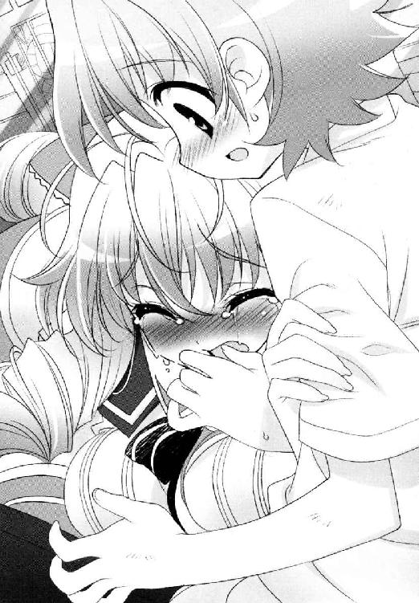
「ごめんなさい。妹たちにも、五中の方々にも、申し訳なくて。あたくしが甘すぎたから、こんなことに......」
お芝居の演技とも、天真爛漫なラブコールとも、あまりに状況が違っていた。
密着する上半身を、受け止めきれずに倒れそうになるが、そうして支えた彼女の張りのある体軀は、息がつまるほど熱くて、そのくせ真冬のように震えていた。
「絶対に、勝てると、思いましたのに──」
そう。正面から戦いさえすれば。
こんな形の妨害さえなければ。
「......みなさん、努力されていましたし、楽しみにもしていらっしゃいましたわ。雪国さん、ほとんどゼロからあそこまで上達されて。妹たちが、小道具や服作りで指が傷だらけになっていたのも知っています。古葉会長も、蜜もみんな。あたくし、素晴らしいと尊敬しておりました。自慢でしたのよ。本当に、ごめんなさい。ごめんなさい。あたくしが馬鹿だったのです。お詫びの仕方も、わからなくて。本当にどうしたらよろしいの......」
「信じましょうよ、胡蝶の宮！」
雪国は、思わず言っていた。ここでやられたまま終わりなんて、そんなはずがない。きっと他のみんなも動いている。
こちらもあがけばあがくぶんだけ、望みはつながるのだと思いたい。
だから雪国は、いても立ってもいられず、やわらかく熱のこもったその背中を軽く叩いてから、立ち上がった。まわりを見回し、自分でも手に取れそうなもの──なんだこれは。ハードルか？
とりあえず換気扇めがけて叩きつけてみた。
「雪国さん！」
「胡蝶の宮も、がんばって外に声出してください」
いわゆる女装も学校交換も。土俵際のあきらめの悪さだけが、淡谷雪国の特徴なのだ。
＊＊＊
陣営はすでに勝利モードだった。
野外ステージを下りた出口付近の草地で団子になって、拍手をしたりはしゃいだり。この光景、なにかに似ているなと舞姫は思った。
（──ああ、そっか。あれだ）
いわゆるここが党の選挙事務所だったなら、マスコミのカメラのフラッシュを浴びながら、ダルマの片目に目を入れていたに違いない。
真ん中で筆を握って目を入れる役目は、舞姫ではなく主役の彼女だろうけれど。
「いやはや、すごい反響ですよ、長船さん！」
「ありがたいお話です。中部連として生徒会にお力を貸せたことが、一番嬉しゅうございますわ──」
現に彼女は、舞台衣装の着物も脱がず、新聞部の取材を受けながらご謙遜を繰り返しているのである。
舞姫としては、さほど興味があることではなかった。もうこれで彼女や中部連の気もすむだろうし、後は無事に祭りが終わればお役ご免である。
それに、まだ逆転の希望は残っていた。
「これで最優秀賞は決定ですか──？」
「芦屋さんたら。もうそのあたりにしてくださいませんか。まだ残っている学校もございますのにはしたのうございますわ」
「ああ、空舟五中のことですか！」
笑ってばかりいた白夜の顔が、ふいに一瞬真顔に戻った。
「それは、いったいどういう......」
「まさに伏兵でしたものね、昨日のあれは。いやー、わたくしめも認識を改めねばと思っていたところなのですよ。長船代表もそう思ってらっしゃったとするなら本物かもしれませんね」
「いえ、私はべつに、そこまでは──」
しかしその瞬間、彼女たちのインタビューは中断された。
ビュンと吹き抜けた一瞬の風。カメラのファインダーに映りこんだ謎の物体は、長船白夜の扇で隠したお雛顔でも、舞姫の長い髪でもなく、横から高速ですっ飛んできたゴミ箱だった。
ごろんごろんごんごんごんごんごん............。
ゴミである。市指定のゴミ袋がはめられ、『燃えないゴミ』の貼り紙もされたままの業務用ゴミ箱。中身は満タン、あたりにビニールや発泡スチロールのゴミをまき散らしながら、河川敷の何十メートルも先へと転がっていく。側面の一点が、激しい衝撃によって凹んでいるのが肉眼でもわかった。
「──答えなさい。卑怯者」
この圧倒的パワーを右の蹴り一発でしてのけたのは、ソロリティの二年生。
一駿河蜜、だった。
「あなた......」
彼女は二本の足で地面を踏みしめ、頰を赤くし、怒髪天をつく勢いで怒り狂っていた。
「答えなさいって言ってるのよ、卑怯者！」
そうして睨みつけているのは一人きり。中部連の長船白夜である。
遅れて蜜の仲間が、ＳＥＣやロワイヤルメンバーが駆けつけてくる。みな慌てふためき息が切れているところを見ると、彼女が独断で突っ走ってきたらしい。
それでも蜜は振り返らなかった。ただ前だけを見ていた。長船白夜を。
「どこのどなたが、卑怯者ですと？」
「あなたのことよ。お姉様たちをどこへやったの」
蜜は言った。
言われた白夜が、扇を口許へあて、形のいい柳眉をひそめる。向こうの勢いに押されているようにも見えたが、舞姫にはまだ見極めがつかなかった。
舞姫は思わず、肩で息をするＳＥＣに手旗信号のようなジェスチャーを送ってしまった。いったい何が起きている？
（事件なの？）
（淡谷弟と蝶間林のお嬢様が消えたのだ）
（うえっ）
口パクとぎくしゃくとしたやりとり。事態を悟った舞姫は、ぎょっとして二人を見返した。
「私にはとんとわからぬことですが......どなたかがお逃げになった、と解釈してよろしいのかしら」
「違う。逃げたんじゃないわ！ あなたが出られなくしたんじゃない！ 賭に勝ちたいからって。卑怯者！」
「さような証拠がございますならおっしゃってくださいな。今すぐここで」
蜜の目の前が赤く染まったように見えた。次の瞬間、蜜が草地を走り、渾身の力をこめて白夜の頰をひっぱたいていた。
「無礼者！ なにをなさるの！」
「うそつき！ うそつき！ こんなの賭じゃない！ 勝負じゃない！ 全部無効よ！」
つかみかかる蜜。白夜も悲鳴をあげる。
「離して！」
「お姉様たちを返して！」
だから舞姫は、目を覚ませとばかりに割って入って、蜜の頰をひっぱたき返していた。
ぱんと。
乾いた音が上がった。
「──落ち着いて。今のままじゃただの言いがかりになるよ」
蜜はおどろいていた。誰に叩かれたのか、何をされたのか、遅れて気づいたようだった。
瞳に大粒の涙が浮かびあがる。
この世で一番悲しい目にあったようにぽろぽろと泣きだした。
「ふっ、ふわあああん────」
「......でも、キミらが困ってるのもわかるよ。助けるから」
大丈夫。
叩いた後の頰を、舞姫はなで、頭もなでてやった。
蜜の涙は、それでなんとか止まったようだった。
「会長。古葉さんも。とにかく詳しい状況教えてよ。一緒に対策練ろう」
歩きだそうとした舞姫に、硬い声がかかる。当然といえば当然だった。
頰を赤くした長船白夜だった。
「ご冗談でしょう、会長さま......」
「長船さん......」
「私がこのような目に遭ったというのに、わざわざお手をさしのべに行かれるのですか？ 外部の学校やソロリティの人間に？ どなたの味方でいらっしゃるのですか、生徒会の若光の君は」
どんな時でも、こじれた糸を解きほぐすのは困難だ。利害と感情と思惑と。
「ボクは、道の真ん中で立ち往生してる人たちを見捨てるような真似、したくない」
「それがこの方々の手口だとおわかりになりませんの？ お人好しの会長さま！」
「行こうか。時間ない」
扇がへし折れる音がした。
それでも、良いと信じる道を進むしかないのだろう。いつだって。
周りの少女たち同様、どこか呆然としたままの久我原さゆねに、『あとは頼むよ』とだけ合図して、舞姫は蜜たちと合流した。
そうしてふりきる形で入ってきてしまったため、かなり気をつかわれてしまった。
「......あの、大丈夫かね、兄貴。我々に義理だてしすぎてケンカになるのは──」
「関係ない」
舞姫はぶっきらぼうに言う。へたに気をつかわれるまでもない。今は義理だなんだを考えるより、自分たちの状況を考えてほしかった。
「いないのは二人？」
「そう。淡谷と、蝶間林さんと──」
古葉鳥子が説明する。抜けが役付きというのはたしかにきつい。
「......あの、先輩。すみません騒いでしまって」
遅れて一駿河蜜が、おずおずと赤い目のまま近寄ってきた。
「もういいから、一駿河さん」
しょうがないなと苦笑しそうになる。
「お姉様、長船さんと賭をしてたんです。負けたらローズロワイヤルを生徒会の監督下に入れろって。そう言われて引き受けちゃって」
「......想像つくな」
蜜のなりふりかまわぬ変わりようを見て、おかしいなとは思ったのだが。
「とりあえず、ユキグニの役はボクがやるよ」
「ええ！」
「よく見て。こんなそっくりな代役他にいないよ？」
じっと蜜や鳥子の顔を見返すと、確かに納得したようだった。
「そっくり同じにはできないかもしれないけど......一応、脚本は家で読んだことあるし、筋も頭に入ってるよ。詳しい人にフォローしてもらえればなんとかなるかもしれない」
舞姫はあたりを見回す。残りは胡蝶の宮だ。
「ルパン役だけど──」
「一駿河さんはどうだ？」
芝目が手を挙げた。一駿河蜜？
「ずっと淡谷弟の特訓につきあっていただろう？ 俺たちの演技指導もしてくれたし、台本一冊ぶん覚えていると聞いたが」
「それほんと？」
本当なら朗報である。彼女はどの役にもついていないらしいから、穴埋めには最適だ。
「やってくれる？ 一駿河さん」
「そうです蜜さん。蜜さんならやれますわ」
「私もサポートします！ 大丈夫です！」
他のロワイヤルメンバーも太鼓判を押していく。
肝心の蜜だけが、おろおろと戸惑っていた。
「......え、で、でも、蜜は足が......」
「穴が空くほどゴミ箱蹴り飛ばしてなに言ってるのさ」
それでも視線が迷うように泳ぐから、舞姫は焦れた。
「ねえ。なに気にしてるの。非常事態なんだよ？」
「............ら、ラストシーンとか、その......」
「いいかい。ずーっとユキグニの相手してたんでしょ。同じ顔でもボクは女だ。いきなり舞台の上で弟とラブシーンやらされるより、まだなんぼかボクとの方が気楽でしょ」
「そんなわけありません！」
まるで悲鳴だった。
「嫌です。嫌です。ぜったいに嫌です。嫌ったら嫌です！ 先輩とだけは！」
周りがシンと静まりかえる。それぐらいの拒絶具合だった。
「......あ、あの、ごめんなさいっ。ごめんなさい。失礼なのはわかってます。でも──」
「......わかった。そこまで嫌なら無理強いはしないよ」
胸に浮かんだのは、ほんの少しの失望と落胆。正直、舞姫も少し傷ついた。
弟。ユキグニ。以前の自分ならともかく、一緒に温泉に行ったり遊園地へ遊びに行ったりと、『淡谷舞姫』の顔と名前は、そこまで嫌われていないと思っていた。
なのに──。
叩いたことが原因か。今の舞姫には、それ以上考え続ける余裕がなかった。
「じゃあ、ボクが胡蝶の宮の役やるよ。会長、ホームズやって。警部の代役ならできるよね一駿河さん」
「俺かね!?」
泣き出しそうな顔で蜜がうなずく。
もういい。なんでもいい。
「時間ないから。急いで準備しよう！」
舞姫は手を叩いた。
＊＊＊
せめて、ひとかけらでもかばうそぶりをしてくれても良かったのに──。
こみあげる思いを押し殺して、長船白夜は客席についた。
まだソロリティの二年に叩かれた頰が熱い。痛みと、それ以上に見捨てられた思いが強かった。行ってしまった生徒会長。置いていかれた代表の自分。
（もう絶対に出してなどさしあげませんわ）
証拠はなにもないのだ。白夜が否認し続けるかぎり、向こうもこちらを責め立てることはまずできない。
せいぜい灰色から先へ踏み込めない状況で、主演二人を探して右往左往すればいいのだ。
（覚悟などなにもなかったくせに）
生徒会にソロリティ。その下に中部連。庇護する相手を庇護せず、状況を正そうともしなかった時点で、この結末は予想されてしかるべきだったのだ。
「──続いて、空舟商業高校生徒会によるハンドベル演奏です」
拍手がおきる。
空舟五中は、まだ出場辞退を申し出ていないようだった。
第５章 空白の未来
刻々と時間ばかりが過ぎていく。
鮮やかなレオタードの群が、拍手とともに引っ込んでいく。
「──以上をもちまして、紅月学園高等部生徒会によるダンス発表を終了いたします」
ああ、ついにこの時が来てしまったのだ。
古葉鳥子は幕の隙間から、ちらりと観客席をながめた。最前列の一番端に、長船白夜が部員と一緒に座っていた。
──どこまでできるか、とくと拝見させていただきますわ。
無言のまなざしが、そう強く迫ってくるような気がしてならなかった。
「これより空舟第五中生徒会と、青美女学院中等科有志による創作劇、『愛しき名探偵』を上演いたします──」
──第一幕。クロディーヌの初仕事。
それは女学校の卒業式を終え、生家に戻ってきたクロディーヌ嬢の物語だ。
美しく聡明な彼女を待っていたのは、愛する養父の死亡報告と、怪盗ルパンの衣装と名前の継承権である。
（クロディーヌは、彼の遺志を継ぐの）
養父と同じ義賊の怪盗であることこそが自分の存在意義だと信じる彼女は、その日から新たなパリの怪盗として暗躍することになる。
同じ時期、いっこうに捕まらないアルセーヌ・ルパンの存在に頭を悩ますパリ市警は、ドーバー海峡の向こうから、最強の名探偵を召喚することを決定する。
二人の出会いとすれ違い、そしてはじまるはずのない恋。
ちゃんとラストまで演じられれば、泣ける話になってくれるはず──。
はずなのに──！
『おい、どうした。どうしたミヒャエル号。おとなしくしろ！』
ここは、とある政治家の邸宅だ。その屋敷の厩には、豆坂が演じる名馬ミヒャエル号がつながれている。ふだんはおとなしい政治家の愛馬だが、その夜は違った。しきりにミヒャエル号が暴れるのである。
『ぶひひひーん！』
迫真の演技で暴れるミヒャエル号こと豆坂。荒々しい息づかい。前の蹄が地面をかく。ここはもうなんの問題もない。遠慮なく馬の演技に酔いしれればいい。
『こんな夜にはなにかがあるかもしれないな──』
馬丁がこぼすその頭上の屋根を、舞姫──黒マントの少女怪盗が疾走していく。そう。悪くはない。代役の違和感はまるでない。
（いいわ。その調子よ淡谷姉！）
このまま走って。観衆の目を釘付けにして、舞台の端から端まで走って走って──。
『ふぎゃあっ』
いきなりこけるなああああああ！
「だ、大丈夫です古葉会長。消えただけです。消えただけです。ものすごく逃げ足が早い怪盗なんですクロディーヌのルパンは」
思わず舞台裏で四つん這いになって目を閉じる鳥子を、書記佐藤が必死に慰める。そうなの？ 本当にそうなの？ ひるがえるマントを踏みつけセットから落下した舞姫は、後ろでもがもがと他の仲間に助けられているのに。
「ねえねえ、このマントちょっと長いよ。歩けないよこれじゃ──」
「誰か安全ピン持ってきて！」
にぎやかな舞台裏。
『──警部！ 現れました、怪盗ルパンです！』
『おのれルパンめ！』
現れるはずもない怪盗の話題を、舞台上の大道寺と一駿河蜜が叫んでいるのがむなしい表舞台。
『──こうなったら、あの男を呼ぶしかあるまい！』
『あの男？』
『名探偵だよ、君！』
嫌な予感がしてきた。
──第二幕。名探偵の名推理。
なにかが違うぞ、という空気が観客席に広がりはじめたのはたしかだった。
昨日のリハーサルを見ていた人間にとって、五中とローズロワイヤルの舞台の評価は、『意外に堅実』『正統派』である。それがどうだ。
一応ここでの目玉は、歓迎パーティーだった。ついにロンドンから呼び出されたシャーロック・ホームズは、相棒のワトソンとともにパリへやってくる。彼の到着を喜ぶパリ市警は、さっそく彼のための歓迎のパーティーを開くのだ。
怪盗を捕まえると公言してはばからないホームズに興味をもったクロディーヌも、変装してパーティー会場にしのびこむ。そこで起きたのは、まさかの議員殺人事件。
かくしてクロディーヌは、一般客の一人として、ホームズが華麗に真犯人をつきとめる姿を見ることになるわけだが──。
『──私にはわからないよホームズ。もう事件の全貌がつかめたというのかい』
最悪の出来を覚悟したわりに、芝目のホームズはよく踏みとどまっていた。
たしかに雪国用の衣装の裾を伸ばして着ているため、少々窮屈な上に多少セリフは改変気味だが、ホームズのひねくれた雰囲気だけはよく出ている、と言えなくもない。
『ふっ。簡単なことさワトソン君。パリもロンドンも事情は変わらない。謎にはしかるべき理由があり、すべては私の巧みな観察と洞察によって解明されるということさ。すばらしいなあワトソン君！』
彼はパイプ片手に、舞台上に広がるパーティー会場を見回した。容疑者はこの中にいる設定だった。このままウェイターの一人を犯人として指摘し、乾杯のシャンパンに毒を混ぜて議員を殺害したことまで明かしてしまうのである。
そのまま彼は、ワトソン役の鳥子を置いて、堂々と人の波をかきわけ、犯人のはずのウェイターすらもかきわけ、ちょっと待ってよあんたなにやってるのアホンダラというか！
『私にはすべてわかっている。犯人は君だ！』
『えっ、そうだったの!?』
『んなわけがあるかあああ────っ！』
ナチュラルに舞姫を指さす芝目。それを真に受けておどろく舞姫。鳥子が自分の靴の裏で芝目の頭をひっぱたく所まで、ノンストップで行ってしまった。
『なんで彼女！ なんの根拠があって！』
『いや、だって、クロディーヌは怪盗なのだろう？ 怪しくないか窃盗の常習犯が混じってたら』
『ここじゃなんの証拠もないし！ あんたがやってるのは言いがかり！ 超失礼！ 空気読め！』
『わかったわかった。じゃあお前だ。お前が犯人だ』
『はじめからそうしとけ馬鹿！』
ついでのように逮捕される真犯人。
舞台裏に引っ込んだ時、鳥子はすがるように聞いてしまった。
「......ねえ、佐藤。この劇どう思う？」
「とりあえず、お客様はよく笑ってらっしゃいます！」
爆笑は随所であがっていた。
舞姫演じるルパンは、その後も二度ほど転びセットを蹴倒し、すっかり『ドジッ子怪盗』のイメージを強固にしてしまった。ホームズはホームズでセリフを忘れ、舞台の上で立ち往生し、相棒の鳥子に頭をはたかれどやされないと先に進めないという健忘症のようなキャラ立ちを手に入れた。
昨日までのスタイリッシュ・ロマンスはどこに行ったのだ。
「もう限界です。このあとの展開どうするんですか！ なんかヒーローとヒロインがボケ入ったおじいさんとおばあさんみたいですよ！」
「ちょっと待って今考えるから！」
後輩たちが急かすまでもない。鳥子は台本を握り赤鉛筆をくわえながら、帳尻を合わせるべく頭をひねる。舞台の上では主役二人が、かくかくとおぼつかない足取りで甘いセリフを吐きあっている。
（せめてつないでやるんだから）
（淡谷が来るまで）
絶対に。
＊＊＊
不真面目なものが大嫌いだった。
いわゆる初等科から青美女学院に通う純血種。けれどまわりの少女たちが憧れるように、中等科に入ったらソロリティのお姉様たちの誘いを受けて、などという願望は持ちようがなかった。かと言って生徒会に入って学院の運営を、という政治ごっこも興味がない。
（私は固いのでしょうか？）
白夜の師範にして敬愛する母や祖母が言うように、芸の道はとても厳しく、のんきなお茶会や会議の繰り返しに時間をかけるよりは、家で唄や踊りの稽古がしたかった。「だけどおまえは逆に、もう少し同年代の子との遊びを覚えるべきだね」と、当の二人にその固さを指摘されたものだから、まだ真面目な活動ができそうな中部連内の演劇部に入った。そこで切磋琢磨を続けていたら、部や連合内の信頼も勝ち取れたが、腑に落ちないことはなくならなかった。
書類もなにもなしに練習場をおさえていくローズロワイヤル。『伝統だから仕方がない』など逃げの言葉だろう。意見を言うべき生徒会も、人気に比例した義務を果たせていないと白夜は考える。
右も左も。前も後ろも。どれもこれもいい加減で理不尽で不真面目だ。戦うためにおべっかや遠回しな嫌みの言い方を覚えはしたが、本当はいつだって正面から怒っていたかったのだ。
「あっはっは。また外したよあの子は」
白夜は、煮えくりかえる思いをおさえて問いかけた。
「いったい何がおかしゅうございますの？」
「は？」
隣でひたすら笑い続けていた老婦人は、涙の浮く目尻をぬぐい、白夜を見た。
大島紬の上品な着物姿で、年は白夜の祖母とそう変わらないだろう。良識あるちゃんとした大人のはずなのに、こんないい加減な舞台でどうして笑えるのだ。
「お嬢さんは、笑えないかい？」
「ええ。ちっとも」
爆笑が方々で上がっているけれど。
「この話はですね、そもそもがコメディなどではないのです。周りの方は、昨日のリハーサルの方こそダミーだったなんておっしゃいますけど、それは噓です。役者陣が大勢逃げて、まともな舞台の体裁が整えられないだけなのです」
「へえ......」
「今も舞台裏では、行き当たりばったりの連続で頭を抱えているはずですわ」
「ふうん......」
怪盗ルパンが振り上げたステッキがすっぽ抜け、ホームズの眉間に直撃している。それを見て観客が笑う。
あんなもの芸ではない。ただ失敗しているだけだ。
「コメディがおやりになりたいなら、チャールズ・チャップリンやバスター・キートンをもっとよく研究して──」
「ああ、たしかにそれも大事なことかもしれんけどさ」
老婦人はあっけなくうなずいた。うなずいた上で、舞台の上の七転八倒を軽く指さした。
「ヘボでもね。バカでもね。どえらく真剣にやってる姿ってのは、なんにしろヒトの心にくるものがあるんだろ」
真剣に──。
一番好きな言葉を聞いた気がした。
「あの子たちね、一度だって舞台の上で照れたり恥ずかしがったりしてないんだよ。気づいてるかい？ そうやって自分の心を守ろうとした瞬間ね、うちら観客は簡単に冷めちまうからね」
どうしてだろう。だって彼らなのだ。あの最低でいい加減なメンバーには一番縁遠い、それこそ一生かかっても重なるはずのない言葉だと思っていたのに。
「このまま終幕まで押し切るってつもりなら、あたしとしてはその根性だけでも褒めてやりたいよ。ブラボーってね」
まばたきだけを繰り返した。見るからにいい加減でおかしくて、未熟なばかりの舞台を見つめ続けた。
ああまたとちった。外した。転んでごまかして墓穴を掘って。大笑い。
（お笑いですわ）
本当はわかっていたのだろう。わかっていたのだ。はじめに見た幼稚園のお遊戯レベルから、リハーサルのあの熱演にまでもってくるのに、どれだけの練習を必要としたか。不真面目なだけで務まるはずがない。
認めるのが嫌で、自分の心を守ろうとして、台無しにしたのは自分の方。
今も彼らは笑われているのに。まぶしくて。まぶしくて、まぶしくて──。
「......この年頃の子ってのは、ほんとにわからないね。どうしてそこで泣く必要があるんだい」
「ごめんなさい」
ごめんなさい幽霊さん。ごめんなさいみなさん。責はすべて私がおいます。
おいますからどうか今だけは。
「あ、ちょっとあんた──」
白夜は生まれてはじめて、上演中に席をたった。
電話と、そして仲間を集めるために。
＊＊＊
（一駿河さんのためなら～）
えーんやとっと。
（古葉さんのためなら～）
えーんやとっと。
心の中で労働歌を歌いながら、雪国は換気扇の破壊を続けていた。
めげない気分でいることは、案外難しいことなのだ。
「ふう」
武器に使っているハードルはすでに三本目になっていて、めざましい成果は換気扇の表を覆うフードが半分ひしゃげ、ボルトが一本緩んだかもしれない、ぐらい。ハードルの方はまだ倉庫の中にあるし、いざという時は最終兵器『バレーの支柱』が残っている。だから大丈夫。まだまだ大丈夫。
小さな明かり取りがあるだけの倉庫は、風も入らずひどく蒸し暑い。制服のシャツがべとりと肌に張り付いて、自分一人だけなら脱いでしまっているだろう。
（まー、無理だけどさ）
雪国は苦笑いしながら振り返った。
蝶間林のお嬢様は、しゃがんだ背中をこちらへ向けていた。雪国と同じく汗で布地がにじんで、シュミーズの下着のラインが浮いている。ちょうどあの体を思い切り受け止めてしまったことを思い出して、別の意味で体が熱くなりそうだが、しだいにシンナーのきつい匂いが広がりはじめてびっくりした。
「胡蝶の宮は、なにしてるんですか？」
「......もしかしたら、こちらの方が気づいていただけるかもしれないと思いまして」
彼女はペンキの蓋を開けにかかっていた。
缶の中身をドアと地面の隙間から流しはじめているようだ。
「きっと通りがかったらびっくりすると思いますわ。地面いっぱいカラフルで」
「いいアイデアです」
お互い疲れていたけれど、彼女もまだ諦めていない。大丈夫。
雪国は、また換気扇破壊に戻った。
（蝶間林さんのためなら）
えーんやとっと。
「ねえ、雪国さん」
「なんです？」
「あたくし、一つだけ間違っていないと思うことがございますの。今回のことで、ですけど」
しかしなんというかあれだ。ペンキの匂いがけっこうきつい。
自分で壊しはじめてしまってから言うのもなんだが、このままシンナーの匂いにあたって共倒れというのはかなり嫌な想像だった。
「あたくしが選んだ殿方はですね、本当に優しくて、勇敢で、申し分のない方だということですわ──」
がこっと大きな音が響き、換気扇の本体がコードを残して地面へ落ちた。やった。
現れたのは地上二メートルの位置に開いた四十センチ四方の穴。出口だ。ダイレクトに差し込んでくる陽光と格段に涼しい風が、天国の門にも見えた。
「やった。出られますよ胡蝶の宮──」
しかし振り返った先にいた胡蝶の宮は、思っていたよりも近く寄っていた。今にも抱きつけそうな距離。しかも言うべき言葉の矛先を失って、少々戸惑っているようにも見えた。
「胡蝶の宮？」
そんな彼女の背後で、鉄扉が動きだす。
──え。
たしかに開くのだ。頭上の四十センチどころの話ではなく、ちゃんとした出入り口のドアが開き、ジャージ姿の少女が顔を出してきた。
雪国は目を疑いそうになる。たしかにそれは中部連所属の運動部員なのだ。
「いました。いらっしゃいました。雪国様と蝶間林様です──」
「あの、もしかして探しにきてくれたの──」
「ええ。長船代表から、直々に説明がありましたので」
体育倉庫の外は、胡蝶の宮がぶちまけたペンキが、池のように広がっていた。色のチョイスがよりにもよって赤だったので、まさに血だまりだ。少女たちの顔も青ざめている。悪い想像でもしてしまったのかもしれない。
飛び越すように外へ出た。
「どうぞお急ぎください。いま車を呼んでいるところです」
「語るに落ちましたわね。自分で仕組んでおきながら、どうして今さらこんな真似──」
「それについては、また後でお話があるはずです」
制する少女の口にも、かすかな戸惑いが感じられた。
「とりあえず、行きましょうか胡蝶の宮」
「雪国さん」
「みんな待ってますよ」
今は立ち止まっている暇などないのだ。
運動部員の一人から、胡蝶の宮が携帯電話を借りた。
「タクシー来るんじゃないんですか!?」
「いえ、もっと手っ取り早いものですわ」
コールはすぐにつながった。彼女は携帯を耳にあてたまま、雪国たちの前で鋭く叫ぶ。
「もしもし佐伯!? あの時の借りを返してもらいますわ。ヘリ一機ここまで寄越しなさい！」
三分後。雪国たちは空舟市上空へと舞い上がった。
＊＊＊
「ねえ、聞いた？ 第一ステージの舞台発表、すごいって──」
「なに？ いまどこがやってるの？」
「空舟五中。あと青美女学院のローズロワイヤル。生徒会の淡谷舞姫がピンチヒッターで出てるんだって」
「なんであの会長が──？」
はじめは空舟五中が、ソロリティのローズロワイヤルと一緒に劇をするというから話題になった。
次はその劇に、青美生徒会長の舞姫が飛び入りで出ているらしいというからより話題になった。
今はなんだろう。
鳥子はもうわからない。劇そのものの綱渡り具合が観客を引きつけてならないような気がする。
「あっははははははは、馬鹿だ！」「死ぬ！」「お腹がよじれる～！」──舞台の向こうから、何度目かの大爆笑が聞こえてくる。今度はどんなお笑い芸なのか。
「今度はなんなの!? こけた？ すべった？ 回った？ 止まった？」
舞台袖の鳥子は、半泣きで頭を抱えた。
「音響係がミスを！」
音響？
「流すＢＧＭを間違えました！ あわてて入れ替えてますけど......ああ違う。これも違います！ 切り替わって切り替わってスクラッチもちょっと入って......ちょっとＤＪブースっぽいです」
どうして古き良きパリの設定で、ＤＪ青美のクラブサウンドがはじまらなければならないのだ。
『......これが最近のパリの流行なのかね、ムッシュ・ルパン？』
『ああ、うん。シャンソンより気がきいてるしね──』
役者陣の空回りが、とうとう裏方にも伝染しはじめたようだ。アレンジ感たっぷりの高速ＢＧＭに、ちっともフォローになっていないフォローが追い打ちのように入る。
せめてスイッチを切るなりすればいいのに、音響係は完全にパニックになってしまっていた。シャカシャカシャカシャカぎゅいんぎゅいん。大きくなったり小さくなったり巻き戻ったり進んだり、クールに弾けた曲調を聴いているだけで酔いそうだ。
鳥子は首吊りでもするような気持ちで緞帳の紐をたぐって、一気に幕を引きおろした。
「古葉会長！」
「もういい。全部終わらせてっ」
お願いだからとたまらず言っていた。
「いいから。誰か本部まで連絡してよ。もう無理。これ以上進めたってどうにもならないわよ──」
『ただいま機械の故障につき少々おまちください──』と、一時中止のアナウンスを入れていた後輩が、ぎょっとしたように鳥子を見る。
音響係は、まだ魂が明後日に抜けたまま呆然と機材を見つめている。
「古葉会長さん。お願いです。続けましょうよ。再開しないとローズロワイヤルが──」
一駿河蜜が警部の衣装のまま、必死な顔ですがりついてきた。
でも自分には思いつかない。わからない。怪しい役者に壊れた筋に、裏方までご覧の有様で。いったいここからどうやって、ラストのラブシーンへ持って行けというのだ。
続けても、勝つことなどできるのか──？
「......そりゃ、あたしだってやめたくないけど。ここまでやったんだし。やめたくないけど──」
「それならおやりになればよろしいのですわ」
聞こえた声に振り返れば、パニックの果てにダウンした音響係の周りを、青美の演劇部員が取り囲んでいた。
長船白夜が、そんな部員たちをとりまとめて指示を出しているのだ。
信じられない。
「機材の扱いは、私たちの方が長けておりますもの。あなたがたは自分の役を演じることに専念すればよろしいのです。集中してください」
呆然としている鳥子や蜜たちを見て、彼女は目を伏せた。
「今さら──言えることではないというのは重々承知しております。謝罪はあとでいくらでもいたします。だけど私は」
すうと息を吸いなおす。頭を下げた。深々と。
「良いものを見て良いと言えなくなってしまったら、それは私の心の終わりです。勝利も意味もなくなります」
鳥子たちの方が混乱しそうだった。
背後にいた演劇部員たちは、部長のこの決断すら受け入れたというのだろうか。
物言いたげに彼女たちを見たら、その中の一人、副部長だと名乗る少女が目を細めた。苦みの方が強い微笑だった。
「うちの部長、本当に稽古好きの演劇バカですから──」
「こう見えてお笑いにも弱いですしね──」
部員同士でしみじみしているのだ。
そもそもお笑いに切り替えたつもりはさっぱりないのだが言える雰囲気ではなかった。
すでに校内に残っていた運動部員に声をかけ、倉庫の鍵を開けたという。そこに主演二人を閉じこめていたと聞いて、さらに呆れた。
「中部連内からも石を投げられる展開になりそうですけど......少なくとも私たちは、こうしようと思った部長の気持ちもわかるし、この舞台の良さもわかるつもりなんです」
部員たちは、白夜の隣で、同じく頭を下げた。
「「お願いいたします。お手伝いをさせてください！」」
白夜の不正に怒って、とっくみあいのケンカまでした一駿河蜜はどうだろう。
助けてもらえると、そう簡単には思えないだろう。
「このまま終わったら......お姉様たちが本当に悲しみますよね......」
蜜が、独白のようにそう言った。
「そうですよ......今から急いだって、間に合うかどうかわかりませんけど、でも、ここで終わってしまったら本当に『終わり』なんです。嫌ですよ蜜だって。でも蜜たちに、これ以上続けるだけの力があるかも微妙なんです。だから──だから──」
蜜が彼女たちに向かって、「こちらこそ」と頭を下げたところで、劇は続行することになった。
＊＊＊
そして、ある種の奇跡は起きたのかもしれない。
──っかり。がんばって芝目。おきて。起きて！
芝目夏彦がどれだけ疲労しようとも。脱線に脱線を重ね、幾度の中断と仕切り直しを繰り返しながら、それでも劇はクライマックスへと突入したのだ。
「信じられない......もう終幕よ......」と、古葉鳥子が赤字修正だらけの進行表を見つめてつぶやいている。急遽主演を務めることになった芝目にとっては、もはやどうでもいいことだった。
暗転とともに脇へ引っ込んで、用意されていたパイプ椅子に座ってうなだれた。すかさず両サイドに人員がはりつき、「ファイトっす！」「目をさまして」とまるで最終ラウンド手前のライト級ボクサーの扱いだ。しかしここまでぶっ通しで慣れない役を演じさせられた疲労と緊張感で、スポーツドリンクを飲んでも倒れそうだった。
「ほえ、あうえ......？」
「......芝目......あんた本当によくやったわ......あんたのことよくわかんないオタク野郎とか根性なしとか思ってたけど、訂正する。見直した」
「............いやもう、なにがなにやら......なにがどうやら......」
「......がんばって。あとワンシーンだから」
ワンシーン？
「なにが、どう、ワンシーン？」
「しっかり！ 生き返って！」
寝たい。というか往復ビンタはやめてほしい。
「どうしよう......完全に死んでるわ」
「疲労困憊ですね......」
「クロディーヌ、ドレスアップの準備整いました！」
衣装係の叫び声に、鳥子が舌打ちする。
「一駿河さん。ちょっとそこのバッグ開けて。中にガラス瓶入ってない？」
「え？ これですか？」
「中全部開けて。飲みにくそうなら水で薄めて。こいつに全部飲ませちゃって」
ぼそぼそとしたやりとりのあと、うつろな芝目の目の前に、プラスチックのコップが差し出された。
「淡谷先生がくれたんだもの。きっと効くわよね──」
鳥子が真剣な顔でうなずいている。蜜や長船白夜もこちらをのぞきこんでいる。
なにやら妙な匂いがするので気が進まなかったが、まだまだ喉は渇いていたので全部飲んだ。
（んんん？）
魔法の水だというそのスペシャルドリンクは、たしかに効果てきめんだった。脳内で発射されたバズーカ砲。味こそ苦みが強くのどごしも悪かったが、ひとたび胃へと入れば爆発的に燃え上がり、ドカンと末端へと広がっていくのだ。
もう一秒だってじっとしていられない。マーベラス。今の自分は石炭満載の機関車トーマスだ。大気圏を越えて銀河鉄道になってやる。
「いい芝目？ あんたの前にこれから、とびっきり綺麗な一人の女の子が現れるから。名前はアルセーヌ・ルパン。ずっと男の子だと思っていたけど、実はクロディーヌっていう可愛い女の子。彼女はあんたのことが好きなの。でもずっと騙していたことを恥じてる。あんたはそんなの関係ないって受け止めてあげるだけでいいの。それで全部うまくいくの」
「うまく......いくのかね......？」
「自信をお持ちになって。怯えや迷いは演技に響きますわ」
「決めて！ 愛よ！」
Ｌ・Ｏ・Ｖ・Ｅ！
なにもわからなかったけれど、とりあえず芝目は、そのことだけを頭にたたき込まれて舞台の上へ放り出された。
ラブ。ラブ。ラブ。体は魔法の水で燃え上がり、頭の中は、催眠術のピンク一色そればかりだった。
「古葉会長！ この空瓶なんすか。もろアルコールっすよ！ すっげ酒くせえ！」
「ええ!?」
いざ行かん。我が愛の舞台へ──。
＊＊＊
終幕。クロディーヌの告白。
舞姫もまた必死だった。
怪盗ルパンの真意も正体もつかめず、失意のままロンドンへ帰るホームズの目の前に、一人の美しい女性が現れる。それはホームズへの想いを断ち切れなかったクロディーヌ本来の姿だった──とのことである──。
（あとちょっと。がんばれボク......！）
最後の場面は、夕暮れの船着き場だった。汽笛が遠く鳴っている。脚本通りに着せつけられた衣装のドレスを引きずりながら、そろりそろりと舞台の中央へと進んでいく。
長すぎるマントが去ったと思えば、今度は長すぎるドレスだ。
よってたかって早変わりさせられた葡萄色のドレスは、一見とろりと光って華やかだが、なぜか足にまとわりついて歩きづらい。これは下の裏地を付けずにすましているのだと遅れて気づいた。ローズロワイヤルが、天下のロワイヤルメンバーが、こんなところで貧乏くさい真似をしないでほしい！
『君は......』
『わたくしが、誰だかおわかりに？ ミスタ・ホームズ』
芝目も疲れているのだろうか。疲れているに違いない。それでも舞台衣装の舞姫を見て、『フッ』とばかりに口元をつり上げた。
（あれ？）
はて。芝目のホームズは、今までこんなキザったらしい演技をしていただろうか。
立ち方といい目線といい、やけに周りがキラキラして見えるような──。
『ミスタ・ホー』
『──ふははははははは！ そうか、なるほど！』
いきなり芝目は、笑いながらステージ上を回りはじめた。
あっけにとられている暇はなかった。
彼は本気で笑い踊りながら、ステージを一周。ドレスの舞姫の目の前までやってくると、強引に腕を取り、腰に手をあて、あっという間に斜めに傾けてその自由を奪ってしまう。
『これこそが君の罪だったのか！』
口づけさえできそうな距離でパイプを舞姫の口にくわえさせると、また舞姫を放り出す。ついつい舞姫も、合わせて半回転してしまった。
『すべてわかった！』
ジャンプ。中空で靴の裏を合わせる高等技術。
『謎もすべて解き明かされた！』
さらにジャンプ。決めると同時に次の動作へ。
『今こそ私は宣言しよう。その罪もすべて受け止めると！』
芝目は叫んで、おもむろに衣装のコートを脱ぎ捨てると、回転を続けながらタイをゆるめ、真っ白いシャツの前ボタンを『びびびっ』と全開にした。
『おいで！ 私の怪盗！』
すんげー嫌だ。
正直に思ってしまった舞姫である。
ちらりと舞台袖を眺めると、鳥子や他の仲間たちが、『さっさと進めて！ おかしくても飛び込んで！』とジェスチャーを繰り返す。
なにかこのフェロモンだだ漏れを通り越して別の国に行きかけているブツの胸に飛び込んでいくのは、生理的にかなり抵抗があったが、ここで怖じ気づくわけにもいかなかった。
芝目は客席に対して斜め四十五度の角度を維持したまま、差し出した右手の指を曲げたり伸ばしたりしている。
『い、愛しいあなた！』
『なんだいマイハニー!?』
『どうか、この気持ちを受け止めてくださあああああああい......！』
舞姫は、叫びながらパイプを振り捨てた。まとわりつくドレスを押さえていた両手も大きく広げ、ほとんど突進するように、芝目のはだけた胸元めがけてダイブ──。
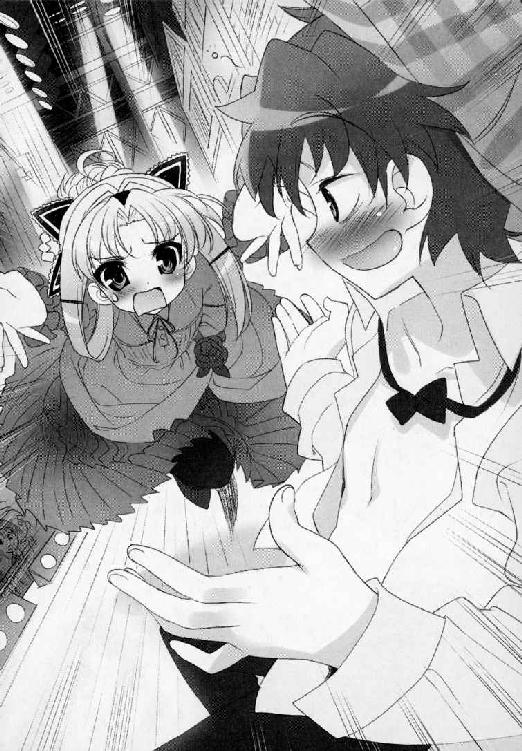
トゥ──。
ダイブ──。
トゥ──。
ダイブ──。
（うわっ）
急激に回転する視界。ドレスの裾を踏んづけて、向こうが受け止める直前でびたんとハエたたきのように床へ張り付いている自分がいた。
『ＯＨ神よ！ なんたることだマイディア！』
だからその気持ち悪いセリフ回しをやめて！
『........................お、おほほ。これしきのこと大したことございませんわ。伊達に男性のふりはしておりませんでしたもの』
したたかに打ち付けた顔をおさえ、舞姫は必死に起き上がる。まだだ。なんてことない。とにかく抱きついてエンドだ。さっさと終わらせてやる。
ほとんど食いつくような気分で立ち上がった舞姫は、倒れていた自分の足もとを見たとたん、ぎょっとした。
（血）
床に血のあとが点々と。自分の両の手の平も、落ち着いて見れば真っ赤だった。切り傷というよりこれは──。
（鼻っ）
鼻血である。
『ち、ちょっとお待ちくださいミスタ・ホームズ。目に睫毛が入りました......！』
こうしていても、ぼたぼたとあふれた血が床へ落ちていく。舞姫は、血まみれの手で血まみれの顔をおさえて舞台袖へと引っ込んだ。
「どうしたの、なにかあったの!?」
「大丈夫ですか先輩！」
演劇部の機転で、すぐさま意味深な音楽が流れ、舞台上の時間稼ぎがはじまる。周りに仲間が群がる。
せめて顔の血を拭いて、止血する時間が欲しかった。事情を悟った鳥子が「濡れタオルとティッシュ！」と叫び、蜜が弾かれたように走り出す。そんな中、奥からざわめきが。
「兄貴！ 淡谷オトート到着っす！」
大道寺の鋭い一声が、救いの一言に聞こえた。さっと人垣が割れる。続けて雪国や胡蝶の宮が、ノンストップで走りこんでくる。助かった！
「舞ちゃん！」
遅すぎるぞ半身！
「ユキグニ、バトンタッチ！」
その場で入れ替わりがはじまった。
＊＊＊
着付け。メイク。すべてが同時進行で行われた。
ヘリの上で、舞姫がクロディーヌ役をやっているらしいと聞いた時は仰天したものだ。間に合えばすぐにでも舞台へ上がる覚悟をしていたが、いったいなんでこんな組み合わせになっているのかさっぱりわからない。
シャツを脱いだばかりの裸の上半身に、すぽりとドレスがかぶせられ、下のズボンを脱ぎ捨てながらファンデーションや口紅も塗りたくられる。ウエストリボンを折れろとばかりに締め上げたところで、衣装係が声をつまらせた。
「か、髪は──」
「こちらを」
あらわれたのは、久我原さゆねだった。舞姫がかぶっていたらしい、ロングヘアのカツラをはめこんでくれた。雪国は小声でたずねる。
（舞ちゃんに会ったの？）
（ええ、救護室で）
そこで脱いだカツラを回収してきたらしい。さすがの機転に感謝するしかない。
なぜここで都合良く生徒会の会計が現れて、舞姫と同じ髪型のカツラを差し出してくるのだと、周囲で突っ込む人間は誰もいなかった。とにかく必死だったのだ。
「クロディーヌ、出られますか！」
「いつでもＯＫ！」
服、ヅラ、どこからどう見ても舞姫クロディーヌだ。
「照明、ＢＧＭ切り替えます！」
進め！
ＢＧＭにムード音楽を響かせ、降り注ぐ照明は、やりすぎなぐらいのピンク色。
どうやら裏方陣は、意地でもこの場を盛り上げて終わらせるつもりらしい。
『よかった。元気そうじゃないかムッシュ・ルパン──』
『......ご、ご迷惑をおかけしましたわ』
『鼻血でも出たのかと思ったが、君のタフネスぶりには乾杯だ』
出たけど入れ替わったんだよ。そう直接言ってやりたいが、囁く余裕が見つからない。
ラブいピンク照明に照らされた芝目の顔は、いよいよ怖いぐらいに真剣だ。
『ミスタ・ホームズ......わたくしが、誰だかおわかりに？』
『ああ同じセリフはもういい。君がいない間、私がどれだけ心配したことか！』
『うひゃあ！』
返事をするどころか、品のない悲鳴があがってしまった。心の準備をする暇もなく、ためらう雪国の手を、芝目が強引につかんで引き寄せたのだ。
（な、なんか酒くさくない？）
ＢＧＭのボリュームがうなりを上げる。これはかなりキモチワルイが、一応台本通りだ。雪国は必死にそのまま身をゆだねるが、なぜか舞台袖の方からおかしなジェスチャーが見えた。「ほら後ろ！」「頭！」「早くひろって！」と、いったいなにが言いたいのやら──。
（へ？）
実際に目で見た雪国は、ダムの水が放流される勢いで血の気が引いた。
ヅラ。
ヅラだ。
後方四時の方角に、自前のヅラが落ちて転がっている！
『ミ、ミスタ・ホームズ。どうぞこの手をお離しになって......』
『離すものか。永遠に』
『永遠とかじゃなくて』
わかるだろう。ヅラがね。思いっきりね。取れていてね。
舞台裏どころか観客席からもそれは丸見えらしく、「カツラ？」「トラブル？」「別人なの？」とざわめきが上がっているから泣きたくなった。
『ミスタ・ホームズ！』
『なんぐわっ』
むりやり力を振り絞って、抱きつく芝目を振り飛ばした。床へ吹っ飛び三メートルほどすべる芝目。その間に雪国は、すばやくヅラを拾ってかぶり直した。
『あなたにはわかりません。時には髪を切り、下層の別人になりすますことまでしなければならなかったわたくしの気持ちなど！』
芝目は衝撃を受けている。
『ごめんなさいミスタ・ホームズ。やはりわたくしは、あなたの手を取るにふさわしい人間ではありません。どうかこの汽笛が鳴るうちにお離れになって。ロンドン塔の鐘の音こそあなたの故郷！』
もういいではないか。このまま物別れの別離エンドで終わってしまっても。
『なんてことだ......哀れなレディ......』
『さようなら、わたくしの名探偵様。わたくしの手は汚れております』
『大丈夫。私はそんなこと気にしやしない！ ひとかけらだって！』
『ミスタ・ホ──』
芝目のホームズは、立ち上がりぎわぐいとこちらの顎をつかんだかと思うと、そのまま本気の接吻をかましてくれた。
くれてしまった。
（あ）
（あ）
（あ）
あああああああ。
『──────────────────────────っ！』
「キス！」「してるし！」「本気で！」舞台裏も観客席も大興奮。舞台の上の二人だけが言葉をなくして立ちつくす。
『......あ、あ、あ......』
『おどろくな！ ともに生きていこう末永く！』
『ホームズの、ホームズの、ホームズの馬鹿ああああああ！』
『赤い顔も可愛いぞハニー！』
『ちっともカワイクないよおおおおお！』
突っ伏しておいおいと泣きはじめる雪国。笑いながら両手を広げる芝目。
鳥子なワトスンが、遠慮がちにすべりこんで舞台の端に現れた。
『............こ、こうしてクロディーヌ嬢の冒険と使命の日々は終わったのだ。最後に名探偵の心を盗むという、前代未聞の大仕事をしてのけたのは、後にも先にも彼女ひとりだけだったろう──』
うわああん。うわあああん。
うなだれる雪国の頭から、またかぶりかけのヅラが落ちた。一向に酔いが醒める気配のない芝目。眉間に皺が寄ったままの語り部鳥子。
それでもいいのだろう。
どんなヘンタイでも倒錯でも誤解だらけでも、終わるには終わったのだ。
幕がおりたあとの客席からあがったのは、割れんばかりの拍手と歓声だった。
＊＊＊
「──引き続き、最優秀賞の表彰に移ります」
おごそかなアナウンスとともに、青美副会長の花江みずきと長船白夜がステージに上がり、賞状とトロフィーを受け取る。拍手があたたかく鳴り響く。
制服に着替えた雪国は、客席の隅でそれを見ていた。
終わってみれば、無難なところに落ち着いたのかもしれない。
「なんだかんだ言ってうまかったらしいねえ......長船さんたちの劇......」
「まあね......もともとの年季が違うし......」
「僕らじゃこのへんがせいぜいだったかもしれないね......」
鳥子が腕に抱えた『審査員特別賞』のトロフィーを、思わず見返してしまった。
──あれから。
市主催の学生演劇としては、異例のテンションと濃厚ラブシーンで幕を下ろした雪国たちの創作劇。
自分のしでかした所行と、相手役の舞姫が途中で入れ替わっていたことを知った芝目は、『魔法の水』の酔いが覚めていたこともあり、悲鳴すら上げられずに土手を走っていった。肝心の舞姫は、救護室の中でお休み中だ。そのまま気がすむまで何キロでも走ってほしいと強く思った。
胡蝶の宮にいたっては、
「やっぱり殿方ですの？ 真なる殿方には勝てませんの......？」
よくわからない方向にショックを受けてうちひしがれているらしい。
そんな破れかぶれの熱演が効いたのだろうか。リバーフェスタの審査員たちは、雪国たちにも小さな賞をくれたのである。
『──えー、全体の完成度については今ひとつでしたが、とにかく体を張った笑いへの情熱には胸を打たれるものがありました。一秒も気を抜けないスリリングな展開。ラストに向けた爆発力。「ここまでやるのか」という精神に満ちあふれており、一般投票数が群を抜いておりましたのも印象深いです』
ステージの上で、教育委員会のお偉いさんが講評をして指摘したところである。良かったのか悪かったのかわからない。
そして、白夜たちがステージを下りてきた。
彼女は雪国たちの目の前に来ると、真っ先に頭を下げた。
まいったな、である。
「いや、あのさ......」
「賞の辞退こそお許しいただけませんでしたが、私はあなた方の努力の成果をふいにした者。どのような裁きも受ける覚悟でございます。本当に申し訳ございませんでした」
「もうさ、やめにしましょうよ長船さん......」
一緒に閉じこめられた胡蝶の宮が、傷心で席を外していたものだから、雪国が前面に立って謝られる形になってしまった。本当にてこでも動かない雰囲気だ。
「けじめはけじめです。願わくば、私以外の部員への寛大な処置をたまわりたく──」
雪国は仕方なく、胡蝶の宮から預かっていた伝言を伝えることにした。
「......えーっと、いいでしょうか。向こう様がおっしゃるにはですね──『あんな暑苦しい場所に閉じこめられた時点で、こんな賭は不成立。しばらくは顔も見とうございませんので、次にお会いするのは新学期の会議の席にでもいたしましょう』、とのことです」
おかしな間があいた。
どうやら意味がわからないらしかった。
「それは......いったい、どういう意味で......？」
「ソロリティとして歩み寄りが足りない点については、いろいろ思うところもあったようです。こんなことで嫌がらせをされるぐらいだったら、練習場所の一つや二つ融通してもかまわないし、他に要望があるなら聞いてさしあげてもよろしくてよと。まあそんな感じだそうです」
それはまた。
「なんて......また......偉そうな──」
思わずこぼれてしまったらしい本音に、遅れて白夜は恥じ入った。扇のかわりに賞状で顔を隠しているが、けっきょくその場にいた全員で笑ってしまった。
たぶん、皆がそう思ったことだろうから。
「でも、よくあの騒動の時、僕らが倉庫にこもってたってわかりましたね」
雪国としては、なにげない疑問にすぎなかった。しかし、別のところから上がった回答に、なにより白夜が素早く振り返っていた。
「それは、非常に簡単なことです。教える人間がいたからですよ」
「あなた！」
「ワタクシのことですが」
雪国は、暮れなずむ人力川を見据えて考える。
そろそろ気温も下がりはじめただろうか。川風がどこか涼しく感じる。
このあたりはススキや葦の影が濃く、まわりからの視線を遠ざけてくれていた。いまごろ会場の方では、撤収のための準備がはじまっているだろう。ビニール袋と祭りのチラシが、こうして川縁に立つ足もとにまで飛んでくる。
撤収を手伝うためにも、早く言うべきことは伝えておかないと、と思うのに。うまく口が動いてくれない。
「......さっきさ、一生懸命話してる子がいたんだ。青美日報に載ってた女装写真は、今日の演出のために髪を切ってたからだって」
そうですか、と小さな声。
「どう取られるかなんて、わかんないもんだね。思わない？」
雪国は、背後に控えるさゆねに尋ねた。
「......よろしかったじゃないですか。これで晴れて入れ替わりを再開する言い訳が立ちます」
「うん。でも、今のままじゃ安心して交換なんてできないよ」
中部連の長船白夜は、「関係ございませんわ。たまたまつぶやいているのを聞いてしまったのです」と、しきりにさゆねとの共犯説を否定し続けていたが、さゆねの方にはどこか吹っ切れたような潔ささえあった。その場は白夜の説を立てる形で終わったが、できることなら聞いておきたい。
ペンキを探しに行っていたことを、知っている人間はわずかだった。体育倉庫の中にあることを知っている人間はもっと少なかった。
「あのペンキさ、最終的に美術部から苦情聞いて引き取ったのは、生徒会執行部だったんだってね」
倉庫にたどりつくこと自体の予想は、簡単についたのだ。そしてさゆねは、それを長船白夜に吹き込んだ。その一言は、簡単に白夜の背中を押してしまった。
「なんでこんなことしたのって。聞いたらいけない？ 久我原さん」
「......ばかばかしくなったから、でしょうか」
「ばかばかしい？」
「だって。ワタクシは少しでも舞姫さまが青美にいてくださることを望んでおりましたのに、舞姫さまは五中に戻ることばかりお考えになってらっしゃるのですから」
ああ、やはりそうだったのだ。
顔をしかめる雪国に向かって、さゆねはスカートをかすかにつまんで礼をした。
籠崎亜莉早。山吹都。花江みずき。沢山の容疑者候補のリストの中に、ひっそりと混じっていた『本物』の名前。書かないのは義理に欠けるからなんて、たしかにフェアではなかっただろう。
一番上のボタンをかけ違えたまま、はじめから終わりまで、駆け抜けてしまった入れ替わり劇なのかもしれない。
写真の送り主。Ｘ氏。幽霊。たぶん。それが久我原さゆねの本性だ。
初めてさゆねが舞姫に出会ったのは、初等科の三年生になった頃だったという。
いわゆる親の都合でよその学校から転入してきた久我原さゆねは、教室の黒板を背に自己紹介をしたそうだ。
「実家は上忍の家系です。主家の密命を果たすため転校してまいりましたと」
「うえっ」
グレイトである。
休み時間になって、誰もが遠巻きになるさゆねの机に、一人で特攻したのが舞姫だった。
──ねえ。ほんとにニンジャなの？
──手裏剣とか投げられる？
なにせあの頃からもう、お稽古のバレエはさぼり気味で、お侍と忍者が大好きな舞姫だったのだ。
飽きることなく遊んで、側にいて、また遊んで。それはこちらの知らない世界の舞姫が作り上げた、もう一人の『半身』の話だった。
「本当に忍者の家なの？」
「さあ。それはもう、どうでもいいことなんですよ。ワタクシたちにとって」
彼女はもうずっと、舞姫のためのシノビだったのだから。
「今でもときどき、後悔することがございますね。どうしてワタクシは、舞姫さまの苦しみを分かち合うことができなかったのか。あそこで気丈なお心のかげりに気づかず支えきれなかったから、学校交換などというものを認めざるを得なかったのです。かわりに雪国さまが学校にやってくるのも、向こうの学校で舞姫さまが気力を取り戻していくのも、ただ認めて受け入れることしかできませんでした」
そうして受け入れても、面倒を見続けても、さゆねが心に想う相手だけは変わらなかったのだ。
事件を起こす。解決まで、入れ替わりが中止になる。そうすればまた側にいられる。
さゆねの考えたプランは、どこまでも簡潔だった。本当にシンプルイズザベスト。それ以上言いようがなく、変えようもなく、雪国もまた追及しようがなかった。
──DON'T FORGET ME.
──ワタシ ヲ ワスレ ナイデ──。
落とした写真に書き殴られたメッセージは、言葉少なな彼女の、本当に最初で最後の叫びだったのかもしれない。
「......忘れてたわけじゃ、ないと思うよ」
そう。ただ彼女は、あまりに優秀で、忠実で誠実で頼りになりすぎて。
「でもワタクシは、舞姫さまのお側にいたかった。雪国さま。あなたではありません。同じ顔でも、同じ声でも、舞姫さまの本当の代わりにはなりません。寂しかったです。とても」
胸が痛い。
ここに雪国がいる。そのこと自体が、彼女を傷つけてきたのだ。
「......今回の件とて、人を、必要以上に巻き込むのは、本意ではありませんでした。賭の存在を知っていれば、違った選択肢を選んだことでしょう。ですがそれを言い訳にするつもりはございません。ワタクシは怒っていたのです」
彼女は舞姫を望み、舞姫は外の世界に刺激を求めてしまった。
どれだけ怒っても足りはしないから。
「舞ちゃんにも、その気持ち、ちゃんと話した？」
風が吹く。刺すような西日と、どこか皮肉げな声が混じって届く。
「......話してきましたとも。ついさっき救護室で」
そのまま切り捨ててきたと言わんばかりの口調に、雪国は心の底から冷え込んだのだ。
＊＊＊
芝目夏彦は、三つほど先の橋まで走ってから、折り返して元の橋まで戻ってきた。
いわゆる空舟第五中で一番悪名高い年中行事、『耐寒マラソン大会』と同じコース取りをしてしまったことになるが、ちょうどその頭上の橋に、見慣れた少女を見かけたのだ。
欄干の隙間。青美女学院のブルーの夏服が、浮き上がるように揺れている。
「おおい、兄貴！」
叫んでから、はっと気づいた。
「──いっ、いや待て。ちょっと待て。そこにいて。確認するからちょっと待っていてくれたまえ」
いくら酔っぱらっていたとはいえ、もうあんなにもおぞましくも切ない恥はかきたくないと思った芝目は、さらに土手を駆け上り、橋の欄干まで一直線に距離をつめた。
「..................い、い、いくつか、（ぜはー）質問に（ずはー）、答えてくれ（すひー）、ないか。君、名前は？」
「......淡谷舞姫」
「年は」
「十四と六ヶ月」
「豆坂が好きなアイドルは？」
「相川品子。愛称しなぼん」
「俺の家の家族構成は？」
「お父さんとお母さんと兄弟四人と犬一匹オス」
「好きなうまい棒」
「サラミとなっとう味」
「兄貴だ！ 弟じゃない！」
これはもうビンゴ。間違いようがない。
「......と思うが、本当のところはどうなのだ......？ いやいや、疑ったらきりがない。またカツラと制服でそっくりさんになってて騙されるなんてオチは、二度も三度もないと、信じたい......」
「......心配しなくても、ちゃんとボクだよ。女の舞姫」
芝目は、その声の低さと落ち込み具合におどろいた。
もういいよね？ と言わんばかりに欄干にもたれ直す舞姫。カツラの髪がさらりと揺れる。
「......兄貴？ ど、どうかしたのか？」
「ともだちのこと、考えてたんだ」
その友達と言えば。
「ボクね、その子のこと好きなんだ。たぶん、あんなに気が合う子っていないと思う。小さい時から、色々いたずらもしたし、一緒に生徒会も入った。ヘンな子だって言う子もいたけど。周りに、どんどん人が増えて、ボクが一人で勝手に苦しくなってても、あの子だけはずっと変わらなかった」
芝目はわからない。彼女は誰のことを言っているのだろう。
「......それがありがたかったし、それに寄りかかってたところもあったんだ。だからなんだ。ほんとばかだよね──」
話すうち、彼女の睫毛の先から、ぽろりと水が落ちた。泣いているのだと、ようやく理解が追いつくぐらいにおどろいた。
小さく瞬きをするたび、あふれた涙のようなその滴が、遥か下界の川面へと落ちていく。
彼女が泣くこと。自分の目の前で涙を流すことがあるという事実。それ自体がありえないことだと思っていたのに。
空舟五中のモテキング。ＳＥＣの名誉兄貴。とにかく女子によくもてて。
何もしないで突っ立っていていいのかと思った。だってこんなに悲しそうなのに。泣いているのに。好きな子が目の前にいるのに。
「......ごめん。ごめんね久我原。ほんとにごめんね......」
制服の肩へ回そうとしていた手は、まだ十センチの距離が残っていた。なぜか舞姫が、涙もぬぐわずこちらを見返したのだ。どきりと心臓が鳴った。
「会長──」
「そ、それでどうした。友達とケンカ別れしてしまったのか？」
舞姫は、ううんと首を横に振った。
「違うよ。好きにしろって。会長たちと一緒にいてもいいって。そう言ってくれたんだよ！」
＊＊＊
「ですからワタクシ、正直に言ってさしあげました。敬愛する舞姫さま。そんなに五中に未練がおありになるなら、どうぞお気のすむまでお続けくださいと！」
雪国は耳をふさぎたかった。
だけどその時彼女が言った言葉は、まったく別のことだった。
──え？ 続ける？
「そうですよ。もう知りませんでいいのです。あんな方」
言い切ったあとのさゆねは、不思議なことに、いっそ晴れやかにさえ見えた。
「い、いいの？」
「仕方がないでしょう。けっきょくのところ、ワタクシも舞姫さまがお幸せになれぬというのなら満足もできぬ質なのです。因果な話ですが」
「久我原さん......」
「心の問題ですから。ワタクシの側では得られぬものがあるとおっしゃるなら、納得がいくまで五中の殿方とたわむれていらっしゃればよろしい。それに──」
さゆねは同情している雪国の目線に気づいているのかいないのか、そのまま河川敷の先の橋を見据えてつぶやいた。
「ワタクシの計算が正しければ、今頃はあちらの方にも、最大のダメージが行っているはずですから」
ダメージ？
「ええ。ダメージです」
＊＊＊
「ねえ会長。大丈夫？ 無理してない？ ボクがこっちで勝手に思ってても、会長たちの気持ち、無視してたら嫌なんだ。会長にとってボクって友達？ ＳＥＣの仲間だって思ってもらえてる？」
こちらの右手は、十センチ手前で止まったまま。
夕焼け。背後の車道を車が走っていく。
上の空に聞いていた打ち明け話の本質が、向きを変え、狙いを違え、いつの間にかこちらを向いていた構図だった。
彼女がどんな言葉を待ち望んでいるかぐらい──本当に心の底から望んでいるかぐらい──芝目でも、魔法使いの卵でもちゃんとわかった。
「も......」
芝目夏彦は、上げたままの手を、ゆっくりと泳がせた。
「も、もっちろんだとも兄貴！ 我々を誰だと思っているのだ。ばかだなあ！ はっはっは」
ダメだ。肩、ダメ。腕、ダメ。ダメだダメだダメだダメだダメだダメだ。
全部、みんな、ダメだ！
「......ほんと？」
「ほんとだとも！ 素晴らしい友でありＳＥＣの名誉兄貴であると思っているぞ！ 心よりな！」
大道寺の気持ちが、この時だけわかるような気がした。
ありがとうよかったと、わざわざ引っこめた手を求めて握りしめてくる名誉兄貴はあたたかいのだ。本当に、泣き顔が笑顔に変わる姿も最高なのだ。
こちらが口を開きさえしなければ、最高の宝物が消えずに手に入るというなら──飲み込んでしまえばいい。そうしろ。そうしてくれ。告白の一つや二つ、鉄の胃袋の中で溶かして消化しろ。
（頼む！）
なにせ空舟エンジョイ委員会は、芝目夏彦が作った美少女観察クラブで、モットーは付かず離れず犯罪にならない距離感で、すべてのお嬢さんの味方なのだから。
まだ多少涙のにじむ舞姫に、自分の笑顔の噓が気づかれなければいいと思った。大声で笑い飛ばしながら、強く強く願ってやまなかった。
ああくそ。
こんちくしょ──め────！
＊＊＊
ずっと表情に乏しかった少女が、口角を上げ、はじめて笑ったように見えた。
ダメージ。
なんというダメージだ。
「ですから、今しばらくは雪国さまとご一緒ということになりますね」
「うわ」
その端整な顔が近づいたかと思えば、こちらの頰へかすめるような口づけをしてくる。
「く、久我原さん......！」
「よろしくお願いいたします。ワタクシの若光の君」
最凶すぎるよ、久我原さゆねさん！
自分の主を、気持ちよく送り出して。そのことによって、逆に芝目側を牽制してみせた？
どこまでが計算で、どこまでが激情で、どこまでが冗談なのか。雪国はその境目の判断がつかない。つけようがない。
さゆねはそのままきびすを返して河川敷の会場へと歩いていった。生徒会の反省会があるという背中は、どこまでも真っ直ぐのびていた。こちらもすぐに後を追う気にはなれなくて、しばらくは川縁に居残って、目についた石を投げ続けていた。
ぽちゃん。ぽちゃん。ぽちゃん。ぽちゃん──。
いけない。されたキスの感触を思い出すたび、なにかこう、つかまってはいけない人にまきつかれてしまった予感がするというか──。
「──弟さん？」
うわっ。
とつぜん後ろからかかった声に、雪国は勢いよく手の中の石を振り捨てた。
「もう。そんなに慌てないでくださいよ。久我原先輩とお話しされてたんですか？」
「い、いや、そのあのね、一駿河さん──」
「今こちらに来る時すれ違いましたから。みなさん探してますよ、弟さんのこと」
タイミングがタイミングで、跳ね上がった心臓の鼓動は、なかなかおさまってくれない。
すっかり挙動不審の雪国を見つめ、蜜はかすかに吹き出した。そのままスカートの裾を気にしながら、雪国の足下で膝を抱えだすのだ。
なぜか雪国と同じように、集めていた小石を投げはじめている。
「......ごめんなさい。ちょっといま、顔とか合わせ辛い感じなんですよね。お姉様たちと」
「どうしたの......？」
「だってほら。みなさん、劇ですごくがんばったのに、蜜は土壇場でなんにもできませんでしたから」
苦笑まじりの打ち明け話に、それは違うよと言い返したくなる。
「違うって。そんなの一駿河さんのせいじゃないよ。ケガだってしてたし、芝目くんの代役もしたし、今回は急な話だったんだから──」
「違うんです、弟さん」
けれど、蜜はそれでは納得できないようだった。
「......ほんとに、こんな風になるぐらいだったら、はじめからちゃんと覚悟を決めておけば良かったんです。ラブシーンなんて、みんな噓っこのお芝居なんですから。わかってるのに、やっていいのか悪いのかわからなくなっちゃって......馬鹿みたいです。おかげで沢山、迷惑かけちゃいました──」
かすかなため息と、小石の波紋が、途切れた会話の間を埋めていく。
その時だ。
──ねえ──一駿河さん──淡谷そっちにいた──？
いけない、と蜜が舌を出して立ち上がった。
どうやら茂みの先から、鳥子が叫んでいるようだ。
「ですからですね、弟さん。いくら目の前で蜜みたいな女の子が弱って愚痴こぼしちゃってても、そうほいほい相手をしちゃいけませんよ。こんなんじゃ芝目さんに焼き餅やかれちゃいますよ」
「そ、それ全然違うし！ 勘違いだし一駿河さん！」
「わかってますよ。ほんとは古葉さんに怒られるの間違いですよね」
違う。違う。ぜんぜん違うなんてまとめ方だ。
無邪気に笑って冗談を言う、その顔の可愛さに見とれたい気持ちとは別のところで、雪国は叫びたかった。
「だから違うよ。一駿河さん最初から誤解してるよ」
「なにがです？」
「だって僕は！」
思わず蜜の腕をつかんでいた。
じわじわと、つかんだ手の平が熱くなっていく。そして全身の血も。考えていたムードでもシチュエーションでもなかったが、そうして動きを止められた蜜は、大きく目を見開いた。
ひどくおどろいた顔のまま、じっと雪国の顔を見返している。
こうしてあらためて見ても、なんて綺麗な卵形の顔だろうと思った。図書館で息がつまったあの瞬間から、何度も恋して憧れ続けたあの丸い瞳が、『淡谷雪国』というリアルの輪郭をなぞっていくのだ。
花火の自己紹介の時より、ずっとずっとずっと至近距離で──。
「今、好きな人とか......いる？」
ふいに蜜は、言葉につまったような赤面の泣き顔になった。
ぱしっと。ほとんど音が出る勢いで、こちらの手を振り払おうとする。
「いする」
「離してくださいっ」
ええ？ ダメ!?
後ずさりして、つかまれていた腕をおさえながら頭を下げ──ねえ。ちょっと。待ってよ。蜜は走り去ってしまうのだ。それって無理ってこと？ ねえどうなの？
「い、一駿河さん──」
「来ないで！」
きける口はございませんとばかりに、カウンターでくらった一連のその態度が、雪国の足を凍らせ、追いかけようとした意識を粉みじんに破壊した。
＊＊＊
鳥子が呼んでしばらくしてから、一駿河蜜は会場跡まで戻ってきた。なぜか探していたはずの淡谷雪国はおらず、蜜一人きりだった。
「ねえ、淡谷いなかったの──きゃっ！」
蜜は鳥子にぶつからんばかりの勢いで、そのまま土手の上へと走っていくのだ。こちらのことなど振り返りもしない。思わず畳んでいたパイプ椅子を取り落としてしまったというのに。
（『そんなそんな』って......あたしが聞きたいわよ）
鳥子は乱れたポニーテールの毛先を跳ね上げ、草地に倒れた椅子を持ち上げた。
なぜか一緒に、小さな御守りが落ちているのを見つけた。
「なんだ......あの子......またこれ落っことしたの」
『安産祈願』と縫い取りのあるその御守りを、鳥子は前にも見たことがある。衣装の採寸の日、蜜のウエストを測るためカーテンの中へと引き込んだ時だ。
鳥子なら、赤ちゃんがいるわけでもないのにこの手の御守りを持っているのは恥ずかしいと思うが、蜜は「記念の品だし、一応、縁結びの神様もかねてるから、捨てられなくて」と言ってポケットへ戻していた。
この子、いま好きな子がいるんだ──そう認識した最初の瞬間である。しかも、あまり実りのない片思いの類かもしれない。気づいていない雪国に同情したものだ。
でも今の蜜は。蜜のあの赤面した横顔や、逃げるような態度は。
鳥子は、はっとして河川敷の先を振り返った。
まさか淡谷──。
＊＊＊
草の地面に寝ころびながら、ただひたすら呆然としていた。
「なんで......？」
どうして？ どうしてああなる？
覚悟なんて、なに一つできていなかった。
「......だから言ったのに。ばか淡谷」
誰だろう。声がする。
耳元に響く虫の音と一緒に、誰かが倒れた雪国のことを覗きこんで、さあ起きてと呼びかけている。ためらいがちに頰へ触れ、優しく髪をなでてくるあたたかい手だった。まるで捨て猫にでもなったような気がして泣きたくなった。
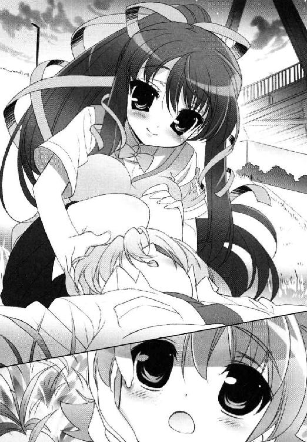
「ほら、起きてよ。言ったじゃない。傷つくって。あたしの忠告、ちゃんときかなかったから──」
雪国は、寝そべりながらその手をつかみかえした。おどろかれたけれど、がまんはできなかった。目だけは固くつぶったまま、額を寄せ、そんな声の主に問いかけた。
「ちょっと、淡谷......？」
「わからないんだよ......」
あれは本当にふられたことになるのか？ こんなにあっけなく？ 信じられない。信じたくない。
でも──信じなければいけないのか？
「失敗したのかな。こんな風に言うつもりなんてなかったんだ」
「そう......なの」
「こんなに痛いなんて思わなかったよ」
「そうね」
うなずかないでよ。優しすぎるよ。
「おかしいよ。古葉さんの方が泣くなんて」
「うるさい。目ぇ開けるなっ」
開けてないよ。涙が落ちてくるだけだよ。
そうだよ。
目を開ければそこには、真っ白な空白の未来ばかりが広がっているのが怖かった。
かき消えたのは、恋路という名の希望の轍。見えていたから走れたのに。
「ふられたのかな」
「Please don't ask me.」
「〝私に聞かないでください〟」
「Yes.」
「〝そうです〟」
「そんなことまで訳さないで」
「Don't translate into such a thing.」
あほと言われたり。ばかと言われたり。
まるで意味のない、涙まじりの質問と回答が、かなりの時間、河原の片隅を漂っていた。
ただ今だけは、がむしゃらに走ってきた体を投げ出して、なにも考えずに目を閉じていたかった。
終章
こうしてぼくの私的な抗議めいたなにかは、いくつもの人の想いと、夕焼けの河原の記憶を巻き込んで終わりを迎えた。
一応これは、ぼくが一番好ましいと思う、そのひとのしゃべり方を模したものだったりするけど。
明日がどこで誰と交わるかなんて、きっと誰にもわからないんだ。
GOOD NIGHT.
あとがき
どうもこんにちは。竹岡葉月です。
気づけば夏が終わり秋も深まる季節にこれを書いております。
今回はけっこうページ数がぎりぎりで、「あとがきも少なめかなしめしめしめ」と内心思っていたら、ちゃんと三ページも用意されておりました。「こんなこともあろうかと思ってね。母さんよしお（仮名）のためにちゃあんと貯めておいたんだよ」と笑うやりくりママのようですね担当さん。
そういうわけでよしお（仮名）書きます。
おかげさまでＳＨ＠ＰＰＬＥも４巻目に突入いたしました！
問題ありすぎの校内合宿を終え、いざ人力リバーフェスタ本番へ。燃えすぎて焼け野原になった気もいたしますが、いかがでしたでしょう？
今回表紙に躍り出たのは鳥子さんです。口絵もけっこう鳥子さんです。
キーワードは隠れ乙女。ミニスカートは五中の象徴。本文を書き終わったあと、燃え尽きてあっぱっぱな頭で口絵のネタをひねり出すので、毎回アタマ悪めになるのが特徴かもしれません。よう太さん、いつもいつもラブリーな再現具合でありがとうございます。
だって雪国の女装がカラーで見たかったんだよー（いつもやってるアレはなんなんだという話ですが）。
この原稿を書いている間、近郊の女性作家さんやイラストレーターさんとお茶会をする機会に恵まれました。都内のホテルのラウンジで、「ツンデレってどうよ？」「ヤンデレでプロット出したら洒落にならないって却下された......」「繊細な少年少女のココロを傷つけずにお話を書くにはどうしたら良いでしょーかねえ」と眉間に皺寄せながらお茶をすする集団です。ちょっと変な光景かもしれません。
参加者の活動ジャンル自体は割とカオスで、少女向けで活躍されている方は「ドレスもいいけど現代モノも書きたいのよ」と語り、少年向けの方は少年向けの方で「姫！ ドレス！ リボンと政略結婚が書きたい！」と語る方がわりといらっしゃったのが面白いです。最後の方はみんな仲良く「最近のグインサーガはいかなる事態になっているか」について白熱していた気もしますが。
「書くこと」「読むこと」への情熱は、やっぱり皆さんすさまじく。
負けちゃいけませんよなあと思った次第です。
これが出る頃にはもうクリスマスなんですねえ（しみじみ）。
都心のクリスマスイルミネーションは、どうにも急き立てられる感じがして苦手なのですが、近所のご家庭単位でぴかぴかしている景色を見るのはけっこう好きです。
ただうちのご近所、一軒だけ光の分量と配色を誤って「クリスマス」というより「ラスベガス」になっているお宅が......。
昼間に見るお家はとっても質素でシンプルなのに、どうして夜だけ欲望の都......？
雑誌ドラゴンマガジンで掲載中の短編の方も、どうぞよろしくお願いいたします。
お次はとうとう５巻です。
一、「旅に出ます。探さないでください」 二、「水着は無理があるんじゃないか？」 三、「パンチラにも五分の魂」 四、「貧乏が！ みんな貧乏が悪いんです！」
......たぶんどれかが当たらずとも遠からず。
春になったらお会いしましょう！
竹岡葉月
ＳＨ＠ＰＰＬＥ
─しゃっぷる─
竹岡葉月

平成20年12月25日 発行
発行者 山下直久
発行所 株式会社富士見書房
〒102-8144 東京都千代田区富士見1-12-14
http://www.fujimishobo.co.jp/
(C)2008 Hazuki Takeoka, Youta/Fujimishobo